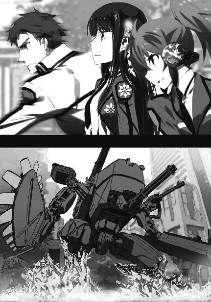
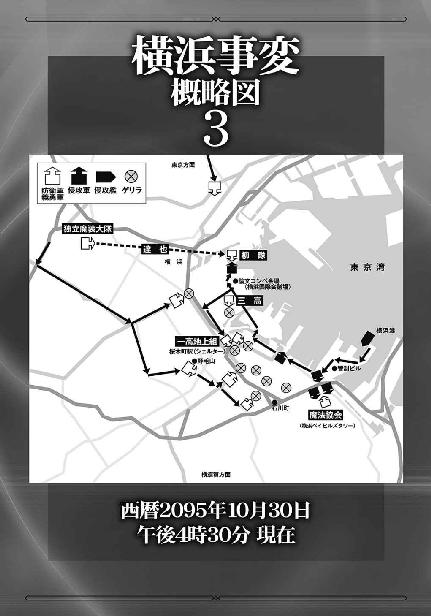

| 魔法科高校の劣等生(7) 横浜騒乱編〈下〉 (電撃文庫) | |
| 佐島 勤 | |
| 株式会社KADOKAWA (2016) | |
本書（電子版）に掲載されているコンテンツ（ソフトウェア／プログラム／データ／情報を含む）の著作権およびその他の権利は、すべて株式会社ＫＡＤＯＫＡＷＡおよび正当な権利を有する第三者に帰属しています。
法律の定めがある場合または権利者の明示的な承諾がある場合を除き、これらのコンテンツを複製・転載、改変・編集、翻案・翻訳、放送・出版、公衆送信（送信可能化を含む）・再配信、販売・頒布、貸与等に使用することはできません。


［８］
西暦二〇九五年一〇月二九日、土曜日。この日の授業はどのクラスも自習状態だった。元々実習以外は自習のようなものであり、二科生は実習も半分自習みたいなものなので、いつもと変わらないといえば、それほど変わらない。──とは言っても、普段の授業中はこれ程騒がしくない。
実習で時々爆発音が轟いたりするから「いつもなら静まり返っている校内」と言うと誇大広告になってしまうが、いつもは騒ぎが起こるにしても、もう少し秩序立っている。無秩序なざわめきは、いよいよ明日に迫った論文コンペ本番へ向けての最終チェックの音だった。
しかしその中で、当事者であるはずの達也は、教室の端末で黙々と課題を進めていた。
達也が明日の準備とは関係の無い課題に取り組んでいるのは、準備をサボっているわけでも代表を馘首になったわけでもない。......高校生の本分を考えるなら、課題をそっちのけで準備作業をする方が「サボっている」と言うべきなのだが。
彼の分担で今日できる作業と言えば、本番と同じ段取りでリハーサルを行って術式の作動状況を確認し不具合があれば直す、というものだけなのだが（それ以外のチェック作業はやり尽くしていた）、肝心の鈴音が学校に出て来ていないのでリハーサルができないのである。昨日の時点で「午後から登校する」との連絡を受けているので焦ったり戸惑ったりすることは無かったが、論文コンペの準備に関しては手持ち無沙汰となってしまったのだった。
一時限目が終わり、軽く伸びをしていると、前から声を掛けられた。
彼の前の席で椅子の背もたれに両肘をついて後ろ向きに座ったレオではなく、その隣に立って彼の名前を呼んだエリカに達也は目を向けた。
「達也くん、明日は何時頃会場入りするの？」
エリカは努めてさり気なさを装っているが、隣で聞き耳を立てているレオのおかげで台無しだ。
この二人、共謀して一体何をやらかすつもりだろう......？ と達也は訝しく思ったが、別に隠す必要のあることではない。
「八時に現地集合、九時に開幕だ。開始三十分間はセレモニーでプレゼンは九時半スタート。持ち時間は一チーム三十分、インターバルは十分、午前四チームで昼食休憩が十二時から一時まで。午後五チームでプレゼンの終了時間が午後四時十分。その後、審査と表彰があって終了予定時間は午後六時だな」
「......えっと、それで当校の出番は何時からなの？」
予期した以上の情報を回答として一度に与えられたエリカは目を白黒させていたが、何とか自分の頭の中を整理し終えたようだ。
煙に巻くのに失敗し、達也は素直に答える方向へ方針を変えた。
「一高は最後から二番目、午後三時からだよ」
「それって随分時間が余るんじゃない？」
「まあね。だからメイン発表者の市原先輩は午後から会場入りすることになっている。俺と五十里先輩は機器の見張り番とトラブルがあった際の応急処置に備えて早く行くんだ」
「ふ〜ん......とにかく現地集合なんだ。デモ機はどうするの？」
「生徒会が運送業者を手配しているよ。服部先輩が同乗してくれることになっている」
「服部先輩って、市原先輩の護衛役じゃなかったっけ？」
「当日は七草先輩と渡辺先輩が市原先輩を迎えに行くって言ってたな。ところで、どうしてそんなことを？」
何気なく切り返した達也の質問に、エリカはたじろぎ、口ごもった。
ハッキリしないエリカを横目でチラリと見て、それまで黙って聞いていたレオが口を開いた。
「あのよ、その見張り番、オレたちにも手伝わせてくれねえ？」
不満げに顔を顰めながら、エリカが何も言わなかったところを見ると、申し出た内容自体は二人の間で打ち合わせ済みだったようだ。
「それは構わないが......何故そんな面倒なことをわざわざ自分からやりたがるんだ？」
当然の疑問とも言える達也の問い掛けに、レオは決まり悪げな笑みを浮かべた。
「いや、まあ、なんだ......せっかく特訓したのに出る幕の無いまま終わっちまうのは、何となく悔しいから......だな」
達也はレオの顔を見て、エリカの顔を見たが、レオは自嘲気味の笑顔で達也を見返し、エリカは彼と視線を合わせようとしなかった。
「学校まで休んでコイツをしごいたのに、出番が無いまま事件は解決してました、なんてバカみたいじゃない？」
目を合わせないまま、不機嫌な声でエリカが補足する。どうやら彼女は公表されていない特殊鑑別所の一件を知っていて、自分たちのいない所で事件が解決してしまったことに不満を懐いていたようだ。エリカはまさしく呂剛虎のような相手を想定してレオを鍛えたのだから、残念に思っても仕方が無いかもしれない。
「どんな動機にせよ、人手は多い方が助かるよ。それに、もう何も起こらない、と決まったわけでもないしな」
「えっ？ 事件は解決したんじゃなかったのかい？」
いきなり、聞き耳を立てていたとしか思えないタイミングで幹比古が乱入してきた。
盗み聞きについては特に指摘せず──それを指摘すると大慌てして大騒ぎになりそうな友人がもう一名隣の席にいるからだ──達也は訊かれたことに答えた。
「事件が起こるのは一度に一つ、なんて決まりは無いぞ？」
事件の首謀者と思しき人物、陳祥山がまだ捕まっていないことを達也は仲間たちに話していない。これから打ち明けるつもりも無い。だからこの答えは単なる一般論でしかないが、今のところそれで十分だと達也は考えていた。
「論文コンペが狙われるのは毎年のことだそうだ。当日の帰り道に狙われた例もあるらしい。だったら本番前に起こった事件が解決したからといって、本番に別の事件が起こらないとは限らないだろう？」
「そうか......そうだね。だったら僕にも見張り番の手伝いをさせてくれないかな」
言われたことを深く咀嚼するように頷き、気合の入った顔で申し出た幹比古に、達也は笑顔で頷いた。
「ああ、頼りにしてるよ」
一つの事件が解決したからといって、油断してはならない、というのは正しい心掛けだ。
しかし結果的に言えば、この時の達也は間違っていた。
◇ ◇ ◇
論文コンペ本番前日の学校を休み、リハーサルを午後に繰り下げて、鈴音は病院を訪れていた。同行者は服部一人。鈴音は自分だけで来たかったのだが色々と物騒な事件が起こっているから、と真由美や摩利やあずさや服部や......とにかく周り中から強硬に反対されて、妥協案として服部一人を同行させていた。
個室のドアを小さく二回、ノックする。
「どうぞ」
おっとりとしたアルトの声が室内からノックに答えた。
「失礼します」
「いらっしゃい、市原さん。そこに掛けてくれる？」
服部を廊下に残し病室に入った鈴音を出迎えたのは、国立魔法大学付属第一高校保健医の安宿怜美。彼女は一足先に千秋の様子を見に来ていたのだった。
ベッドの上には、上体を起こし俯いた姿勢でジッと座っている少女が一人。千秋は鈴音の来訪にまるで反応を見せていない。
「先生、平河千秋さんは精神に疾患を生じているのですか？」
鈴音は特に声をひそめることもなく、無神経とも思える質問を安宿に対して行う。
「いいえ。心的外傷性意思疎通障碍やそれに類する症状は見られないわ。もっとも、『精神』を直接診察できない以上、健康だと断言することもできないけど」
「こちらの声が聞こえていれば十分です」
安宿の答えを聞いて、鈴音は立ち上がった。ベッドを回り込んで、窓際に、ベッドに背中を向けて立つ。そしてそのまま千秋へ目を向けずに語り掛けた。
「平河千秋さん、貴女のやり方では、司波君の気を引くことはできません」
鈴音の声はあくまでクールだ。慰めも励ましも無く、皮肉も嘲りも無く、ただ冷静に事実を指摘する。
「好意は無論のこと、敵意も悪意も引き出すことはできません。今の貴女は彼にとって、その他大勢の一人でしかありません」
鈴音の言葉を聞く者は、それを事実と思い知らされる。そんな力が彼女の声にはあった。
「それがどうしたって言うんですか！」
だから、だろう。鈴音は頑なにコンタクトを拒もうとしていた千秋から、言葉と感情を引き出すことに成功した。──それが百パーセント、ネガティブな感情だったとしても、それは第一歩だった。
「あたしがアイツにとってその他大勢に過ぎないことなんて、自分でも分かってます。先輩にいちいち指摘してもらわなくても結構です！」
紗耶香に対しても花音に対しても、拒絶しか見せなかった千秋は、鈴音に対しても同じスタンスを取り続けた。
ただ鈴音の反応は、その二人とは違った。
「貴女の司波君に対する評価は、ある意味で的を射ていると思いますよ」
鈴音は千秋の叫びがまるで聞こえていないかの如く、背中を向けたまま淡々と語り続ける。
「確かに彼は尊大な人間です。その他大勢がいくら泣こうが喚こうが、おそらく彼は気に掛けません。同情どころか嘲笑う手間すら掛けないでしょう。嫌がらせを受けても五月蝿げに払い除けるだけです。虻蚊に集られるのと同じなのでしょうね」
千秋は俯いたまま悔しげに唇を嚙み締めた。鈴音が四月の新入部員勧誘週間を念頭に置いていることは、彼女にも理解できた。
あの時は嫌がらせを受けても打つ手が無いのだと思われていたが、今ならそれが思い違いだと、他の多くの一高生と同じように千秋にも分かっている。
あの男は魔法で闇討ちを仕掛けてきた相手を、捕まえようと思えば捕まえることができた。
それをしなかったのは、単に興味が無かっただけだ。
実際に魔法を撃ち込まれても虻蚊程度にしか感じないのなら、手を出すこともできなかった自分は虫けら以下ではないか......。
こみ上げてくる悔し涙を堪える為には、掌に爪が食い込む程に、千秋は拳を握り締めなければならなかった。
千秋のそんな姿に目もくれず──あるいは気づかぬフリをして──相変わらず背中を向けたままで鈴音は言葉を続けた。
「千秋さん、知っていますか？ 一学期定期考査の筆記試験で、司波君は二位以下をまるで寄せ付けない高得点をマークしました。とりわけ魔法工学は、驚くべきことに満点でしたね」
「......それがどうしたんですか」
「そして魔法工学の筆記試験における一年生二位が、貴女です」
鈴音が身体ごと振り返った。千秋を見下ろす感情に乏しいクールな表情の中で、瞳だけが優しく微笑んでいた。
「百点満点中九十二点。普通ならトップでもおかしくない高得点です」
「......だから何です」
千秋の声には微量の驚きが交じっていた。自分の点数を知らなかったわけではないが、まさかそれが学年二位とは思っていなかったのだろう。
「残念ながら、他の分野で司波君を脅かすことは無理でしょう。ですが魔法工学の分野に限って言えば、千秋さんは司波君を追い抜くことも可能だと思いますよ」
千秋が勢い良く顔を上げた。
大きく見開かれた目は、「信じられない」と語りながらも「もしかしたら」という希望を宿していた。
「約三週間、一緒に作業してみて分かりましたが、司波君はソフトウェアに比べてハードウェアを余り得意としていないようです。無論、ハードに関するスキルも一般的な高校生の水準を大きく上回ってはいるのですが、かけ離れた、という程ではない様に思われます。一年生の内は魔法工学もソフトが中心ですが、二年生に上がればハードの比重が増えてきます。千秋さんはハードウェアの方が得意なのだそうですね？」
鈴音が言わんとするところはつまり、二年生になって授業の中でハードの占める比重が増えれば、逆転のチャンスがあるということ──千秋はそう理解した。
都合の良すぎる考え、という声が意識をよぎったが、彼女はそれを無視した。
千秋の顔から自暴自棄の色が消え、一途な想いが瞳に点り始めたのを見て、鈴音はフッと表情を緩めた。
「悔しいという気持ちを持ち続けることができるのであれば、きっといつか、成し遂げることができると思いますよ」
何を、とは、鈴音は言わなかった。
千秋も問わなかった。
具体的な何かである必要は無かった。
漠然とした「何か」でよかった。
「明日、会場に来てください。きっと得るものがあるはずです」
病室を去る鈴音の背中も、千秋の目には入らなかった。
何かを成し遂げることができるかもしれない──それは「可能性」という名の麻薬。
時に衰弱死へ向かう精神を蘇らせることも可能な薬物の注入で、千秋の心に劇的な変化が始まっていた。
◇ ◇ ◇
「あの......市原先輩？ ご気分が優れないのでしたら......」
病室から出て来た鈴音の、余りの顔色の悪さに、服部の声には狼狽が混じっていた。
「いえ、心配には及びません。ちょっとした自己嫌悪ですから」
鈴音は決して多弁な方ではない。弁論は得意だが、基本的に必要の無いことは口にしない。真由美といる時が彼女としては饒舌な方なのであり、普段はむしろ寡黙と言える。
そのことを知っている服部は、「自己嫌悪」というフレーズが気になりはしたものの、それ以上に問いを重ねることなく黙って彼女の後ろに続いた。
鈴音にしてみれば、こういう空気が読める性格だからこそ、服部に同行を許したのだ。そして予想したとおり、こうして話し掛けられたくない精神状態に至ってしまった。
（全く......詐欺師の才能がありますね、私は）
クールなポーカーフェイスの裏側で、鈴音は自嘲のセリフを量産していた。
彼女の目的は千秋を立ち直らせることだが、それはあくまで千秋の才能を惜しんだから。しかもそれは、本人の為でも鈴音の同級生である千秋の姉の為でもない。
母校の為だ。
市原家は番号落ちの家系。
今ではエクストラ・ナンバーズに対する忌避も蔑視も（表向き）見られないが、それもせいぜいこの二十年のこと。彼女の親の世代は、まだまだ偏見が根強い中で青少年期を過ごしている。鈴音の父親は魔法師のコミュニティで厳しい孤立を味わっているし、市原家が元々「一花」のエクストラだということは今も彼女に隠し続けている。
しかし鈴音は、子供心にその影を感じ取って育った。そして中学に上がる頃には、父親の隠す事実とそれを隠す理由を知るに至っていた。その所為か彼女は、魔法師の社会に対する帰属意識を余り持てずにいた。
彼女が初めて帰属意識を持ったのが、今の学校、魔法大学付属第一高校に対してだ。
だから彼女はそのきっかけをくれた真由美に対し恩義に近いものを感じているし、誰にも負けないくらい強い愛校心を持っている。
夏の九校戦で鈴音たち一高幹部は、下級生に魔工技師系の人材が乏しいという危機感を抱いていた。一年男子の成績不振の原因は精神的なものばかりでなく、ここにも一因がある、というのが鈴音たちの一致した見解だった。
あずさ、五十里、達也という傑出した人材は存在する。
しかし、層が薄い。
この三人を除くと、技能のレベルがガクッと下がってしまう。
下級生、特に一年生の魔工技師系人材の確保は、卒業までの半年間で彼女たちに課せられた急務と認識された。特に優秀な二科生の発掘は重点課題だ。教師が個人指導を行っている一科生ならともかく、教師の目が届かない二科生の中から優秀な人材を見出すことは、生徒会や部活連にしかできない。
その中で今回、鈴音の目に留まったのが平河千秋だった。
非合法ツールを持ってウロウロしていた一年生が、調べてみれば魔法工学に限って高得点をマークしており、ハードウェアの修理・改造スキルを高レベルで保持していることも分かった。
彼女にはその才能を母校の為に役立ててもらわなくてはならない。
その為には司波達也に対するライバル心を植え付けかき立てることが最も効率的だ、というのが鈴音の出した結論だった。
（まあ、誰が不幸になるわけでもありませんし）
......このセリフで自分の葛藤にけりを付けた鈴音は、やはり「クール」という単語に相応しい少女なのだろう。
◇ ◇ ◇
今年は会場が横浜だから一高代表チームは当日の朝現地集合ということになっているが、会場が京都だった去年は前日から一泊している。
それと同じ理由で首都圏から離れた学校の代表チームは、本番前日または前々日に横浜入りして宿泊することになる。それは「カーディナル・ジョージ」こと吉祥寺真紅郎を擁することで今年の優勝候補筆頭に挙げられている第三高校も同様だった。
第三高校代表チームの出番はラスト。現代の交通システムの速度と居住性を以てすれば、金沢から横浜まで当日の朝出発でも十分に間に合うのだが、途中でトラブルが絶対に起こらないという保証は無い。故に代表チーム及びサポートメンバー全員が学校を前日午後一番で出発し、横浜で一泊する予定になっている。
「ジョージ、そろそろ時間だぞ」
「もう？ 分かった、すぐ行くよ」
論文コンペの為に集めた資料をプレゼンテーションとは無関係に読み耽っていた吉祥寺は、呼びに来た将輝にそう応えて、手に持つ電子書架のスイッチを切った。
（持ち出し、許可してくれないかな......）
横浜まで三時間。ボーっとして過ごすには、少し長い時間だ。
吉祥寺は読みかけの文献を納めた電子書架を未練がましく眺めた。
しかしここに収められたデータは、利用を国立魔法大学関連施設内に限定された禁帯出文献。持ち出しを申請したところで却下されるのは確実だ。
一つため息をつき、吉祥寺は未練を断ち切った（と言うほど大袈裟なものではないが）。
プレーヤーをラックに戻し、足元に置いた旅行鞄を手に立ち上がる。
横浜の会場には、舞台装置を一緒に積んだ大型バスで移動する予定だ。
正確には貨物用ターミナルまでバスで行き、長距離高速列車にバスごと乗り込んで（バスを丸ごと収容するコンテナが今では普通に使われている）、最高時速六百キロで横浜へ向かうのだが、いずれにせよ乗り換え無しで目的地まで一直線だ（直通という意味で）。
普通、とは言い難いものの、彼もミドルティーンの高校生。他の乗客に気兼ねする必要の無い道中は、友人と無駄話でもしていれば退屈する暇など無いだろう、と思い直すことにした。
横浜ではおそらく、あの男と再会する。
いや、再び相見える、と表現した方が気分的には正解か。
密かにライバル視している一高の一年生を肴にしながら、ついでにその男の妹を出汁に親友をからかって時間を潰すのも楽しいだろうな、と吉祥寺は人の悪い笑みを浮かべた。
◇ ◇ ◇
横浜港を望む高層ビル複合施設、横浜ベイヒルズタワー。その最上階に近いバーラウンジで、一組のカップルが夜景を肴にルビー色の液体が湛えられたグラスを傾けていた。
「今年の新酒は中々良い出来ですね」
「私はお酒の味が余り分からなくて。せっかく良いワインをご馳走していただいているのに申し訳ないですわ」
いつもの地味メイクではなく、ばっちりメイクアップ＆ドレスアップしている藤林が艶やかに微笑むと、千葉寿和警部は焦ったように空いている手を振った。
「いえ、このワインはここのプライベートワイナリーが解禁日なんて関係なく出来上がる都度、店に出しているものですから......そんなに高価なものでは......」
「あら、出来立てをいただけるなんて素敵じゃありません？」
グラスに鼻を近づけ、目を伏せてクルリとワインを回し、上目遣いの眼差しを向ける藤林に、寿和は引きつり気味の愛想笑いを浮かべた。
「......ええと、気に入っていただけたのなら幸いです。藤林さんのおかげで今回のヤマも何とか目処が立ちましたし、今日は本官からのせめてものお礼のつもりですから」
「お互い様ですよ、警部さん。私も彼らを放置しておくわけにはいかなかったのですから」
「それは藤林家としてですか？ それとも......いえ、失礼しました」
少しもアルコールに酔っていない、醒めた視線を向けられて、寿和は藤林との約束を思い出した。
彼女が情報を提供し捜査に協力する交換条件の第一項。
それは「彼女の素性と目的を詮索しないこと」だ。
素性を詮索しないという条件は、藤林響子に関して言えばおかしなもの。彼女が古式魔法の名門・藤林家の娘であり、十師族の長老・九島烈の孫娘であることは最初から分かっていることだからだ。
しかしその上でなお「素性を詮索しない」という条件が付けられたということが逆に、おいそれとは明かせない背景を彼女は有しているのだ、と物語っている。
「ところで、警部さん。今日誘っていただいたのは、『お礼』だけなんですか？」
「えっ!?」
危うくグラスの中身をこぼしそうになった千葉家総領の姿に、不意打ちを仕掛けた藤林家令嬢はクスリと笑みをこぼした。
「もし警部さんがよろしければ、今晩だけではなく明日も付き合っていただきたいのですけど」
「え、あ、は、ハイ！ 本官でよろしければ、喜んで！」
寿和は異性に全く縁が無い人生を歩んで来た、わけではない。千葉の道場には女性の門下生もいるし、学生時代は妹から「和兄上は不真面目でだらしない」と散々詰られる程度には遊び回っていた。
女性に慣れていない、あるいは女性が苦手、というよりは、藤林が特別なのかもしれない。
「ありがとうございます。それでは、朝の八時半に桜木町の駅でよろしいでしょうか」
「......朝？」
婉然と微笑む藤林の前で、寿和の顔が呆けた。
「明日は国際会議場で全国高校生魔法学論文コンペティションが開催されるんですが、ご存知ありませんか？」
「いえ、存じておりますが......」
「それに知り合いの男の子が出場するので、応援に行きたいんですよ」
「はぁ......」
さすがに口には出さないが、寿和の顔には「話が違う」と書かれていた。彼は藤林の誘いの言葉を、「明日（の夜）も付き合って」と勝手に解釈していたのだ。
それを読み取るくらい藤林には造作も無いことだったが、彼女の笑顔は小揺るぎもしない。
「そうそう、できれば部下の方々にもお声を掛けておいてくださいね。ＣＡＤだけでなく、武装デバイスや実弾銃もご用意いただけると助かります」
「藤林さん、それは......」
いじけた表情が一転、冷水を浴びせられたように引き締まる。
「もちろん、何も起こらなければ良いのですけど」
千葉警部の問いにそう答えて、藤林は静かにワイングラスを傾けた。
［９］
全国高校生魔法学論文コンペティション開催日当日。
途中特段のトラブルも無く、達也と深雪は予定どおり会場に着いた。
道路が空いていたのか、舞台装置を乗せたトレーラーは既に機材を下ろした後だ。
五十里も先に到着している。
紗耶香を連れた桐原の姿も見える。
時間どおりであるにも関わらず、どうやら彼ら兄妹が最後のようだ。
「......お兄様、そろそろ何とかした方がよろしいのではないでしょうか」
現実逃避気味に第三者視点になっていた達也の意識が、深雪の声で当事者の立場に引き戻された。
「俺が何とかしなきゃならないのかな......？」
苦い顔で問い返した達也に、深雪は「残念ですが」と頷く。
肩を落として視線を戻したその先では、エリカと花音が険悪な表情で睨み合っていた。
「どうしたんですか？」
エリカと花音、両方と親交を持つ者は、この場で達也だけではない。親密度を度外視すれば深雪も一応双方と親しくしているし、五十里は親密度の面でも達也以上だろう。だが花音は深雪の仲裁に耳を貸さないだろうし、五十里は本人の意思に関わらず中立ではいられない。
達也はため息を堪えて睨み合う二人の間に割って入った。
「あっ、達也くん、おはよー」
達也が声を掛けるとすぐに、エリカが軽い挨拶を返した。
対峙している相手をそっちのけで。
そのさまを前に、花音の眼差しがいっそう険悪なものと化す。
これだけで達也は、どういう状況かを大体把握した。
把握したからといって、どちらにも肩入れできないのが辛いところだが。
「──司波君。この聞き分けの無いお嬢さんに、貴方から何か言ってやってくれない？」
（おやおや......貴方からも、じゃなくて、貴方から、ね......）
花音が自分で意識しているかどうかは定かでないが、彼女のセリフはこの場の処理を達也に丸投げする気が満々だった。
「はぁ......」
だが達也は「まあ良いか」という気分だった。花音の意図がどのようなものであるにせよ、この場で双方の言い分を聴くよりは彼が一人で仕切った方が、多少強引でも手っ取り早いに違いないからだ。
「俺に一任してもらえるなら引き受けますが」
何を、が付いていないその申し出は、白紙委任状の要求だった。
それをすぐに理解した花音は、嫌そうに顔を顰めた。しかし隣を見て、五十里が異を唱えていないことを確かめて、彼女は不承不承という感じで頷いた。
達也はエリカとレオを引き連れて、ロビーの隅に置かれたソファに腰を下ろした。（彼の隣には当然のように深雪が座った）
「......まあ、事情は大体想像できるよ」
決まり悪そうにしている二人を前にして、達也はそう切り出した。
「エリカも真っ正直に正面からぶつかることは無いだろうに」
「......ごめんなさい。結局、達也くんの手をわずらわせちゃって......」
エリカの珍しく殊勝な態度に、達也は「あれっ？」と思ったが、彼女のマイペースな振舞いは他人の心の機微が読めないからではなく、確信犯（正確には「故意犯」）でやっていることなので、手伝おうと思って足を運んだ相手に余計な手間を掛けさせれば、気まずくもなるのである。
このあたり、達也の洞察力もまだまだと言える。人間の心は魔法ほど単純に測りきれないようだ。彼の口調が意図したものより優しくなったのは、この意外感の故だろう。
「──別に警備、って張り切らなくても、客席から応援してくれれば良いよ。何か事件が起こったら、その時は事態収拾に協力しても文句は言われないだろうし」
達也が「協力」に不自然なアクセントを置いてそう言うと、エリカはしおらしいたたずまいから打って変わって、意味ありげな、いかにも「悪だくみしてます」と言わんばかりの笑みを浮かべた。
「そっか、協力、ね」
「始まるまで暇だったら楽屋へ遊びに来れば良い。友達なんだから遠慮は要らない」
今度は「遊びに」と「友達」が強調された達也の提案に、エリカとレオは顔を見合わせ、声を立てず楽しげに笑った。
◇ ◇ ◇
開幕時間の間近になると、どの学校の控え室も賑やかになっていた。
順番がラストに近い学校は何時間も待つことになるが、論文コンペに参加するような生徒は、演壇に立つ代表だけでなく裏方仕事で会場までついて来るようなサポーターも含めて、他校の発表にも強い関心を持っているのが普通だ。ロビーでは他校生と談笑している生徒の姿が結構見受けられる。
そして所属を超えて言葉を交わしているのは、何も生徒だけではなかった。
遥が論文コンペの会場に足を運んだのは、第一高校の職員としての仕事ではなく、公安の情報員としての仕事絡みだった。
四月の事件で、公安は達也に興味を向けている。正確には、公安の中で遥の所属部署が、達也の正体に興味を持っていた。しかし彼の身辺を探ろうとすると、上の方から圧力が掛かってきた、らしい。遥が直接圧力を受けたわけではなく、任務を言い渡された際に上司の愚痴を聞かされて知ったことだ。
それがかえって課長の興味を深め、かといって正規の情報員を動かすこともできず、遥に調査任務が回ってきたという次第だった。
無論、遥は抵抗した。今に始まったことではなく四月の時点で自分の手に負える相手ではないと精一杯訴えたのだが、当然、聞き入れてはもらえなかった。彼女が達也に苦手意識を持ちながらも関わることを止められないのは、そういう背景もあったりするのだ。
彼女に課せられた任務は達也の正体の調査だが、デジタルデータは既に専門家が当たって「手掛かり無し」という結果が得られている。
元々彼女にその方面のスキルは無い。かといって、カウンセリング中に探りを入れるという、彼女がそもそも当てにされていた方面も進展は無い。調査対象がカウンセリングを受けに来ないのだから進展しないのも当然だ。
よって現時点で彼女に採れるのは、交友関係、特に学外の交友関係に目を光らせておくという効率の悪い、効果も疑わしい手法だけだった。
彼女の調査対象は現在、一高に割り当てられた準備室で機材番をしている。控え室の中まで入っていく口実が無いわけではないが、前に述べたとおり遥は達也を苦手としている。
私情と義務感の板挟みに悩み、その結果、遥は缶コーヒー片手にロビーから控え室の出入口を見張るという消極的な対応を採用していた。（なお余談だが、現在プルタブ式の缶は姿を消し、全てリユース前提のボトル缶になっている）
ただ幸いなことに、無駄働きにはならなかった。彼女が監視を始めたほとんど直後、控え室に女性の来客があった。年格好は明らかに高校生ではない。大学生でもないだろう。
多分、彼女と同年代。
顔と記憶を照合。学校関係者に該当は無い。
しかし、彼女の顔には見覚えがあった。
「......やっぱり」
公安御用達の盗み撮り用カメラで撮った映像を端末に読ませ、画像検索を掛けて自分の記憶が正しかったことを遥は確認した。
「エレクトロン・ソーサリス......」
遥の学生時代、彼女はヒーローだった。性別を考えればヒロインと言うべきかもしれないが、遥にとってはヒーローの方がしっくり来る。
九校戦、二高優勝の立役者──電子の魔女。
高校受験で早々に魔法師の夢を絶たれた遥にとって、嫉妬と憧れを持って仰ぎ見ていた少女。
魔法大学に進学、その後防衛省に入省したと噂に聞いたが、その彼女が何故母校の二高ではなく一高の控え室を訪ねるのか。
不自然すぎる、ということは無い。日曜日だから平服でいるのもおかしくないし、もしかしたら青田買いに来ているのかもしれない。今現在控え室にいるのは司波兄妹だけだと知らないのかもしれないし、深雪の方が目当てなのかもしれない。
だが遥の直感は、彼女が達也の素性を手繰り寄せる手掛かりになる、と告げていた。
部屋の外でそんな風にピリピリしている見張りがいるとも知らず──いや、もしかしたら知った上でのことかもしれないが──兄妹は訪ねて来た藤林と和やかに談笑していた。
「深雪さん、お久し振りね。直接お会いするのは半年以上ぶりかしら」
「ええ。二月にお目に掛かって以来です。ご無沙汰しておりました」
「九校戦は観に行っていたのよ。ホテルの部屋で達也くんを招いてお茶会してたんだから、深雪さんも一緒に来てくれれば良かったのに」
そう言いながら藤林は「何で連れてこなかったの？」と達也を軽く睨んだ。
もっとも、その程度で畏れ入る達也ではないが。
「深雪と一緒だと目立ってしまったでしょうから」
人目に触れるのはまずかったでしょう、と目で追加する。
深雪は少し気恥ずかしげに、藤林は仕方ないわね、という顔で笑った。
──どうやらハッキリ言葉にしなければ疑問には答えてもらえないらしい。
「ところで藤林さん」
少尉、とは呼ばない。ここは普通の公共（的）施設なのだ。盗聴・盗撮機の有無はチェック済みだが完全に安心はできない。
「一高の控え室に来て大丈夫なんですか？」
事情を知らない者には意味不明なセリフだし、事情を中途半端に知っている者には誤った解釈へ誘導する言い方だ。藤林の学生時代しか知らない者なら、「二高のＯＧがライバル校の控え室で仲良くお喋りしていて良いのか」という意味に捉えるだろう。
「大丈夫よ」
無論、当人たちには誤解の余地など無かった。
「こういう時に肩書きが一杯あると便利ね。防衛省技術本部兵器開発部所属の技術士官である私が、九校戦で高度な技術を披露した君の許を訪れても不自然じゃないからね」
「藤林家の人間としても然り、ですか？」
「そういうこと。だから達也くんも、『藤林少尉』でも『藤林さん』でも『藤林のお姉さま』でもどれでもいいのよ？」
「いえ、お姉さま、という呼び方は無かったと思いますが」
意外とお茶目な藤林の冗談に、達也は半ば本気で笑った。──と言っても苦笑いの類いだ。
「さて、前置きはこのくらいにして......。良いニュースと悪いニュース、両方持って来たんだけど、どっちを先に聞きたい？」
また何処かで聞いたような展開だな、と達也は思ったが、定番というのは繰り返されるからこそ定番なのだろう、と思い直した。
「では良いニュースから」
「......そこは『悪いニュースから』というのがパターンじゃないの？」
「では悪いニュースから」
あっさり掌を返した達也に呆れ顔を向けるも、全くの無反応に藤林はため息をついた。
「......いえ、いいわ。じゃあ、良いニュースからね。例のムーバルスーツ、完成したわよ。夜にはこちらに持って来るって真田大尉から伝言」
「そうですか......さすがですね。しかし明日東京に戻ってからでも......」
「明日、こっちでデモがあるのよ。もっとも、その予定をねじ込んだのは大尉だから一刻も早く貴方に自慢したかったんでしょうけど。基幹部品はそっちに完全依存の形になっちゃったから、せめて完成品は、って頑張っていたもの。昨日なんて『これでメンツが保てる』とか情けないこと言ってたし」
「情けなくなんてないですよ。実際問題、こちらでは実戦に堪える物を作れなかったんですから」
「その言葉、大尉に言ってあげてね。安心すると思うから」
ウインクして見せた藤林に、達也はまたしても苦笑を返した。
「じゃあ今度は......悪い方のニュース。例の件、どうもこのままじゃ終わらないみたい」
「何か問題が？」
引き締まった、というより、それを通り越して厳しい顔つきになった達也を、深雪が横から不安げに見上げている。
藤林も今回は、笑って済ませることもできないようだ。
「詳しいことはこれを見て」
そう言って達也にデータカードを渡す。無線電送すら憚られる内容らしい。
「私の方でもいくつか保険を掛けておいたけど......もしかしたらキナ臭いことになるかもしれない」
「分かりました。俺たちの方も準備だけはしておきます」
頷き合う兄と妹。
それを見て眉目を曇らせた藤林だったが、制止する言葉は出なかった。
「何も起きないのが一番だけど......もしもの時は、お願いします」
どんなに心苦しく思っても、彼らは貴重で強力な戦力であり、彼女の立場で「手を出すな」とは言えないのだった。
◇ ◇ ◇
時刻は八時四十五分。そろそろ客席が埋まりかけている頃だ。
藤林の持って来たデータに達也が目を通しているところへ、五十里が花音を連れて入って来た。
「司波君、交代しようか」
見張り番はプレゼンテーションごとに交代で行う。順番は打ち合わせ済みだ。五十里は二番目の第四高校によるプレゼン「分子配列の並べ替えによる魔法補助具の製作」に興味があるらしく、最初の発表の時間は自分が機材を見ていると提案した。
控え室にもモニターがあるので順番にこだわる必要は無いと達也は考えていたから、五十里の提案したタイムテーブルで番をすることになったのだった。
「お願いします」
その一言で引継を済ませて、達也は深雪を伴い客席へ向かった。
──のだが。
二人はロビーで足止めを受けた。
「司波さん！」
名前を呼ばれたのは深雪の方。
名前を呼ぶ声は若い男、というより少年のもの。声が固く感じられるのは、その少年が緊張しているからだろうか。声の主は、兄妹にとって二ヶ月ぶりに見る顔だった。
「一条さん」
深雪に声を掛けてきたのは一条将輝だった。左腕には「警備」と書かれた腕章。どうやら彼は今回、第三高校代表メンバーのサポートではなく克人をヘッドとする九校共同会場警備隊の一員として論文コンペに参加しているようだ。その任務で会場を見回っている途中、深雪を見つけて声を掛けたという経緯なのだろう。
「お久し振りです、司波さん。後夜祭のダンスパーティー以来ですね」
「......ええ、こちらこそご無沙汰しております」
不自然になるかならないかくらいの短い間があったのは、将輝にとって深雪はダンスパーティーで踊った相手、深雪にとって将輝は兄と新人戦で戦ったライバル、という認識の齟齬によるものだった。
それを隠す、あるいは誤魔化す為に、ことさら丁寧に一礼する深雪。
「あっ、いえ、こちらこそ......」
その完璧な作法に、達也と違いその手の上流階級な付き合いにも慣れているはずの将輝が棒立ちになった。隣にいた少年（おそらく将輝とチームを組んでいる自警団のメンバー）まで魂を抜かれたように硬直したのはご愛敬だが、深雪の企みは見事に成功したようだ。
「会場の見回りですか？」
見れば分かることを今更のようにニッコリ笑って訊ねる深雪。
「ハ、ハイ、そうです」
たったそれだけのことでどもってしまうのは少し情けなくないか？ と達也は感じたが、相手が深雪では仕方ないかもしれないな、と思い直した。
誰よりも身近にいて、しかも精神に改造を受けている自分ですら、時々見とれてしまうことがあるのだ。赤の他人でしかも手を伸ばせば高嶺の花に届くかもしれない立ち位置にいるこの男が、深雪を過剰に意識してしまうのはむしろ当然かもしれない。
そんな兄の思いを余所に妹はますます調子を上げ、絶好調に近づいていた。
「一条さんが目を光らせてくださっているのであれば、わたしたちもいっそう安心できます。よろしくお願いしますね」
確かに、警備のメンバーに「クリムゾン・プリンス」がいるのは心強い。達也でもそう思うのだから、これは客観的な評価だと言える。──しかし、少し煽り過ぎではないだろうか？
「ハイッ！ 必ずやご期待に添えるよう全力を尽くします！」
今日一日、将輝が最後まで保つかどうか、他人事ながら達也は懸念を覚えた。
「十三束君も頑張ってください」
「あ......ありがとうございます」
放置状態からいきなり声を掛けられて、将輝のパートナーの少年も、しどろもどろになりながら、同級生相手にはいささか堅すぎる返事を返した。

警備と張り切らなくても良い、と言われてその場は頷いたエリカだが、観客に徹するつもりはさらさら無い。達也たちが控え室に向かうのと入れ違いでやって来た幹比古と合流し、少し遅れて到着するという連絡があった美月をロビーで捕まえて、四人で席を探している最中も、エリカは「見やすい席」より「不審な人物」の方へ神経を多く割いていた。
その甲斐あって、と言うべきか。エリカは客席の後ろ隅に座る、見覚えのある人影に気がついた。
見覚えがある、というより、忘れたくても忘れられない、と言った方が正確か。何せ、以前は毎日見ていた顔だし、時間が合わなくなった今でも二日おきくらいには顔を合わせている。
相手の方でもエリカに気づいたようだ。いや、もしかしたら相手の方が少し早かったかもしれない。相手の力量を考えれば不思議なことではないのだが、エリカにとっては少々癪に障ることだった。
「あれっ？ エリカ、あそこにいるのは......」
どうやら幹比古も気づいたようだ。彼も面識のある相手だから、これまた不思議なことではない。
「エリカちゃん、お知り合い？」
「単なるナンパ野郎よ。どうせ女と待ち合わせでもしているんでしょ」
だから余計に、声を掛けようとか相席しようとか、そんな話になる前に、エリカは他人のフリをすることを選んだ。
寿和とエリカの仲が余り良くない（というより、エリカが一方的に嫌っている）ことを知っている幹比古は、藪をつついて蛇を出してはたまらないとばかり、もの問いたげなレオの視線から目を逸らした。
「深雪、十三束鋼のことを知っていたんだ？」
「ええ、隣のクラスですから、顔と名前くらいは。お兄様こそ、彼のことをご存知だったんですか？」
空いている席に腰を下ろして兄妹が話題にしたのは、久し振りに再会した将輝のことではなく、お互い余り言葉を交わしたことも無い十三束鋼のことだった。──片思いというのは、得てしてこんなものだろう。
「十三束は沢木先輩のクラブの後輩だからね。それでなくても十三束家の『レンジ・ゼロ』は有名だ」
百家最強の一角を占める十三束家。その中に生まれた異端の魔法師のことは、達也ほどの事情通でなくても知る者は多かった。
「何の話？」
そこに割り込んできたのは、先に客席へ向かったはずのエリカだった。
「エリカ、一人か？ レオはどうしたんだ？」
先程まで一緒にいたのだから、達也の質問は当然のものと言える。
しかしエリカは、不機嫌も露わに顔を顰めた。
「......達也くん。この際だからハッキリさせておきたいんだけど」
エリカも第三者が大勢いる中で喚き散らすような非常識な真似はしなかったが、低くひそめた声でも十分な迫力があった。
「アイツとあたしをワンセットにするのは止めてもらえない？ あたしはアイツに技と得物を与えただけで、それ以上の関係なんて全く何も無いんだから」
「そんな意図は無かったんだが......」
達也は間違っても「正直者」ではないが、この場に限れば、完全に本音だった。あえて意味ありげな言い方もしていない。
それなのにここまで過敏な反応を返すのは、裏を返せばそれだけ意識しているということにならないだろうか、と達也は思ったが、それを口に出すほど意地が悪くもなかった。
「ところで他の連中は？」
九校戦の壮行会以来、一─Ｅのクラスメイトには妙なノリが染みついたようで、今回も「皆で応援に行くぞーっ！」みたいな勢いで会場に集まるようなことを言っていた気がする。
「クラスのみんなだったら、まだじゃない？ 午後の順番だってことは分かってるんだし。あっ、でも美月とミキは来てるよ。もっと前の方に座ってる。二人で仲良く」
達也の隣に腰を落ち着け、ニンマリと笑うエリカ。
噂されるのは嫌いでも、噂するのは好きだ、というわけだ。
こういうところはエリカも普通の女の子だな、と達也は思った。
◇ ◇ ◇
午前九時。全国高校生魔法学論文コンペティションは華々しく、ではなく厳粛な雰囲気の中で開幕を迎えた。軍が協力しているとはいえ生徒同士の対抗試合である九校戦に対して、論文コンペは大学、企業、研究機関などの大人を相手にした発表会だ。ここでのプレゼンテーションがそのまま将来の就職先を決めることもある（スカウトが掛かるのだ）。主催者側も並み居る魔法学の権威を意識して、格式張った態度になりがちだった。
形式重視の面白味が無い開会の辞が終わり、最初の発表校、第二高校によるプレゼン「収束魔法によるダークマターの計測と利用」が始まった。
プレゼン開始の時間になって、潮が引くようにロビーから人影が消えた。
魔法技術そのものには余り関心の無い遥は、どうせ退屈するくらいなら喫茶室で居眠りでもしていようか、と考えていた。そしてそれを実行に移そうとしたその時、
「小野先生」
最寄りのゲートからロビーへ入って来た知り合いに声を掛けられた。
「安宿先生」
カウンセラーとして一高生徒の精神面のケアを担当する遥は、保健医として生徒の肉体面をケアする安宿と「プライベートでも友人」とまではいかなくても、結構親しく話をする間柄だった。
「小野先生も論文発表を聞きに来られたんですか？ 余り関心が無いようなことを仰っていた気がしますけど」
口調次第では嫌みにも辛辣にも聞こえるセリフだが、安宿のおっとりした語り口で言われると、自分でも「そんなこと言ったかなぁ？」という気持ちになってくるから不思議だ。自分より余程カウンセラーに向いている、と遥は安宿のお得なパーソナリティを少しばかり羨ましく思った。
「いえ、少し気になることがあって......それより安宿先生こそ、どうされたんです？ その子の付き添いですか？」
遥の言うように、安宿は一人ではなかった。制服こそ着ていないが、いかにも高校生といった雰囲気の少女を横に連れている。何となく見た覚えがある顔だったが、少なくとも遥の担当する生徒ではない。
「ええ。平河さんに今日の発表会を見てみたい、と言われまして。彼女、実は病み上がりで体調が万全じゃないもので、こうして付き添ってるんですよ」
それだけ聞けば異例のＶＩＰ待遇だが、平河という苗字で遥はピンと来た。今回立て続けに起こった情報窃取未遂事件に遥はタッチしていないが、公安の所属部署に報告書を上げなければならない関係でアウトラインは把握していた。
同じ高校生の活躍を見せて刺激を与え、目標を持たせることで更正を図るという対処法は、心理学の側から見ても合理的だ。
「そうですか。ご苦労様です」
遥は素直に、安宿へ労いの言葉を掛けた。
少し寄り道はあったが、遥は予定どおり喫茶室でだらけていた。コーヒー一杯で二十分というのは、店にとって余り良い客とは言えまい。
このまま時間を潰して済めば今日は楽な仕事だった、と言えたところだが、さすがにそこまで世の中は甘くなかった。むしろ、世間の風（？）は彼女に厳しかった。
「少しよろしいかしら？」
突然掛けられた声に、遥の心臓は一瞬停止した。
それを補うように、次の瞬間から彼女の心臓はフル回転を始めていた。
──言うまでもなくどちらも錯覚だが、それほど彼女は驚き、鼓動も呼吸も乱れていた。
遥に声を掛けたのは、藤林だった。
「え......え、どうぞ」
「ありがとう」
品の良い仕草で腰を下ろし、すぐにやって来たウエイトレスに穏やかな声で紅茶を注文する。
藤林の落ち着いたたたずまいとは対照的に、遥は焦りの色を隠せずにいた。
それも、無理はない。自分が監視していたはずの相手から、不意をついて声を掛けられたのだから。
相手の意図が全く予測できない所為で、遥は自分から口火を切ることもできず、ウエイトレスが運んできた紅茶に藤林が唇をつけてホウッ、と息を吐き出すまでただ向かいの席を見詰めることしかできなかった。
「......そんなに見詰められるとさすがに気恥ずかしいんですけど」
そう指摘されるまで、自分が相手のことを凝視していたのだと気づかないほど遥は動転していた。
「す、すみません」
羞恥心が動揺を増幅したが、次の藤林の一言で遥の心はスッと冷却された。
「いえ、『ミズ・ファントム』に関心を持ってもらえるのは光栄なことだと思いますので」
「......私如き者のことを『エレクトロン・ソーサリス』がご存知とは思いませんでした。こちらこそ光栄に思いますわ」
いつもより余所余所しい口調になってしまったが、その程度の変調は致し方の無いところだろう。
藤林が口にした異称──「ミズ・ファントム」は藤林の二つ名である「エレクトロン・ソーサリス」のように広く知られたものではない。非合法の諜報活動に手を染めている者の間だけで囁かれる、正体不明の女スパイに対するコードネームだ。
自分がミズ・ファントムだと特定されたという一事のみで、遥にとっては決死の覚悟を決めるに足る。
それだけの重さがある秘密をサラリと口にした、それが逆に、彼女の「用件」の深刻さを思い至らせる。
「それで、どのようなお話なのでしょうか」
動揺の代わりに覚悟が浮き出た遥の表情を見て、藤林が満足げに微笑んだ。
「これ以上申し上げなくてもお分かりいただけたのではございません？」
「......すみません、私は貴女のように優秀ではなかったものですから」
実は、藤林の言うように、遥には相手の要求が正確に予測できていた。
ただそれを自分から口にするのは、「分かった」と頷くに──白旗を揚げるに等しかった。
「ご謙遜ですね。大学も研修所も優秀な成績でご卒業されていますのに。九重先生も高く評価していらっしゃいましたよ」
遥は心の中で舌打ちした。
藤林家は古式魔法の名家。ならば同じ古式魔法の権威である九重八雲と親交があっても不思議は無い。
一方、遥が藤林を仕事の相手として意識したのは、今日、ついさっきのことだ。
用意したカードで、完全に上手を行かれている。
「......何も無理なお願いをするつもりは無いんです」
これは、藤林の譲歩ではない。自分の方が優位に立っていることを誇示する心理作戦だ。
「ただ、お互いの領分を守りましょう、と提案しているだけなんですよ」
具体的なことは何一つ言わず、しかし誤解の余地の無い要求を突きつけてくる。
遥は自分が完全に追い詰められている、と認めざるを得なかった。
「......仰っている意味が良く分かりませんが」
本当は藤林の提案の意味するところを遥は理解していた。藤林の要求は遥の予測したとおりのものだった。藤林は自分の──軍のやることに内情が首を突っ込むな、と言っているのだ。
そして遥がそれを理解している、ということを藤林も理解していた。
「ハッキリ申し上げてもよろしいのですか？」
奥歯を嚙み締めた遥を、藤林は涼しい顔で見ている。
この女狐！ と睨みつけてみても、今の遥では負け犬の遠吠えにしかならない。
「大丈夫ですよ。貴女にお咎めが来ることはありませんから」
その意味するところは、既に上へ手が回っているということ。
軽やかに立ち上がった藤林の手には、遥の分の伝票まで握られていた。
テーブルでも会計が可能なのに、わざわざレジで支払うというのがまた嫌みだ。
遥と藤林の第一回戦は、遥の完敗で終わった。
（......でも収穫が無かったわけじゃないんだからね！）
このタイミングで釘を刺してきたということは、少なくとも、司波達也と藤林響子の間には秘密にしなければならない関係があるということ。
それだけはハッキリした。
遥は自分が意固地になっていると自覚しながらも、心の中で雪辱を誓った。
◇ ◇ ◇
第一高校本日の主役である鈴音が会場に到着したのは、予定より一時間早い十一時過ぎだった。三番目の発表校である第五高校が「地殻変動の制御とプレート歪曲エネルギーの緩やかな抽出」という壮大すぎるテーマのプレゼンテーションを開始した直後。達也は控え室で鈴音、真由美、摩利の三人を出迎えた。
「早く来ちゃった」
貴女一体何歳だよ？ と訊いてみたくなる真由美の第一声に、何と応えたものか、達也は考え込んでしまった。
「どうしたの？」
「いえ......予定を繰り上げたのは、何か理由があったんですか？」
摩利も鈴音も平気な顔をしているのに、自分だけ疲れていては負けだろう、と我が身に活を入れた達也は、とりあえずどうでもいい質問で態勢を立て直すことにした。（なお深雪は、完全に三猿を決め込んでいる）
遅刻されるのは大問題だが、早く来る分には全く支障が無い。
機材置き場として提供されている控え室は十分な広さを持っていたし、達也たち兄妹以外にもこの期に及んで回路をいじり回している職人肌の上級生が何人もゴソゴソとやっている状況だ。女子生徒が三人増えたくらいで邪魔に感じたりはしない。
「予定より早く訊問が終わったものでね」
しかしどうでもよかったはずの質問に、摩利から聞き流すことのできない答えが返ってきた。
「また訊問ですか？ しかも、わざわざ今日？」
誰の訊問かは聞かなくても分かっている。彼は関本を捕まえた現場にいたのだし、余りまっとうとは言えない、有り体に言って非合法な事情聴取にも立ち会っている。
しかし、一度だけだ。
達也が立ち会ったのが一度だけ、なのではなく、関本を訊問できたのが一度だけなのである。
呂剛虎による襲撃事件の後、関本は錯乱状態に陥った。摩利は自分の魔法の所為ではないと自信を持って断言したから、命を狙われたことによるパニックだろう。あの襲撃の最終的な目標が自分の命だったと関本が気づかないはずは無かった。
そのおかげで専門の係官でも関本から詳しい話を聞けずにいたのだった。
「本当は昨日までに済ませたかったんだがね......」
「中々許可が出なくて......家の名前でごり押しできることでもないし」
それはそうだろうな、と達也は思った。犯罪組織でもない限り、病気と診断されては無理を通すこともできない。
「しかし何故今日に？ そういう事情なら明日でも良かったような気がしますが」
「君らしくない楽観論だな」
達也は当たり前の疑問を呈したつもりだったが、何故か摩利にたしなめられてしまった。
「関本や平河の妹の狙いは、論文コンペの資料だった。それだけではなかったがね。ともかく資料を狙っていた以上、コンペの当日に背後組織が新たな行動を起こす可能性は決して小さくない」
「はぁ。可能性としては有りでしょうね」
その程度のことは達也も予想している。しかし今朝背後組織に関する情報を摑んだからといって、追加の対抗措置を取るには時間が足りない。緊急対応は予め緊急事態に備えて配備された部隊で賄うしかないのであって、声を掛ければすぐに兵隊が動員できるなんて、絶対王政期の常備軍でも無理な話だ。
会場警備に関して言えば、克人を筆頭にしてできる限りの緊急時即応体制が組まれている。関本が具体的な襲撃計画を知らされてでもいない限り、今日彼を訊問する優先度は決して高くない。
しかし、それを指摘するのは達也の仕事ではなかった。
「そうだ。確かに可能性だが、無視はできない。情報は多ければ多いほど良い」
今日の場合、活用できない情報よりも鈴音のコンディションの方が優先順位は高いのだが、それも既に事が終わってしまった今、わざわざ指摘することではなかった。
「なるほど。それで何か分かりましたか？」
「ああ。今日改めて喋らせてみて分かったことだが、関本はマインドコントロールを受けていた形跡がある」
「......本格的ですね」
実質的な有用性は別にして、この情報には達也も驚きを禁じ得なかった。
「メンタルチェックには引っ掛からなかったんですか？」
春に紗耶香がマインドコントロールを受けてテロリストの仲間に引き込まれた「ブランシュ」の一件以来、一高の生徒には定期的なメンタルチェックが義務付けられている。
将来、治安・国防の主軸を担う魔法師が、洗脳されて外国の手先になっていました、では洒落にならない。あの事件は学校上層部、更にその背後にいる政府機関にとって、「生徒のプライバシー」という言葉を棚上げする程度には質の悪い悪夢だったのだ。
また新たなマインドコントロールの被害者が発見されたとなれば、その措置も過剰でなかったということになるが、逆に何の為のメンタルチェックだ、という気持ちにもなる。
「メンタルチェックは毎月月初。関本はその後、コントロールを受けた可能性が高い」
「凄腕ですね......薬物ですか？」
「そこまでは分からんよ。あたしも真由美も、その方面の専門家じゃないからな」
摩利の答えに「本当か？」と達也は疑いを持ったが、この場では何も言わなかった。
「精神科の先生は何も仰らなかったから、通常の手段でないことは確かね。もしかしたら本物の『邪眼』かもしれない」
真由美の意見は摩利より少し突っ込んだものだった。
「先天的な系統外魔法の使い手ですか......」
新ソ連成立前にベラルーシが開発し再分離派テロリストの手に渡った光波振動系魔法「邪眼」と違い、先天的に精神干渉の系統外魔法を身につけている魔法師の中には、人格を丸ごと書き換える能力の持ち主もいると言われている。そういう「本物の邪眼」の持ち主であれば、短期間で本人も周りも気づかない行動原理の改竄を行うことが可能かもしれない。
「まあ、いくら強力な精神干渉魔法であっても、被術者に掛けられる下地が無ければそう上手くいくものじゃないらしいんだけどね」
このあたりは催眠術と同じだ。人間の意思は、脆弱なようで意外に強固なもの。指向性の定かでない感情や衝動に干渉するならともかく、確固たる行動原理に干渉するとなれば魔法──精神による精神への働き掛けだけでは難しい。
「関本は元々、国家が魔法を秘密裏に管理するという体制に不満を唱えていた。世界中で魔法式と起動式に関する知識が共有されてこそ、魔法にも真の進歩があるという、所謂オープンソース主義者だな」
真由美のセリフを受けて、摩利が苦い声でそう言った。
「学問的には間違っていないけど、国と国との対立が厳然と存在する現実を見れば正しいとも言えないわね」
真由美が同情的な声で呟く。
「間違っている、と言うべきでしょう」
それを達也は、ばっさり切り捨てた。少なくとも彼にとって、現実に即さない思想に意味は無かった。
「......厳しいわね、達也くん」
「......とにかく、関本はそういう理想主義的なところを突かれたようだな。魔法後進国に優れた研究成果を伝道するのが魔法先進国の義務だ、と強く思い込んでいる」
「後進国というのは、具体的に何処です？」
達也の問いに対する摩利の回答は、芳しいものではなかった。
「それは訊き出せなかった。本人にも分かっていないようだ」
「......つまり、意識にロックが掛かっていると」
なるほど、それでマインドコントロールと分かったのか、と達也は推察した。
「そういうわけで、今後の事態は予想できない」
摩利が緊張感の伝わってくる声でこう言うと、真由美が心配そうな声でそれを補足した。
「こっちが考えていた以上に過激な手段を採ってくることもあり得ると思うの。リンちゃんには引き続き私たちがついているから会場に目を光らせておいて、ってはんぞーくんには伝えてあるわ。達也くんも本当に、気をつけてね」
「気をつけます」
藤林のアドバイスで気を抜くつもりなど欠片も無くなっていた達也だったが、せっかくの好意、素直に頷いておいた。
達也たちが穏やかならぬ会話を交わしている間、鈴音は平静な態度をまるで崩さず原稿を読み直していた。
同じ建物の中の通信ブースでは藤林が「あり得る」で済まされない報せを受け取っていた。緊急コールを受けて急ぎ空いている個室を探し、他人に聞かれる心配が無くなってコールバックした彼女の音声通信ユニットから伝えられた言葉は、
「呂剛虎に逃げられた!? 失礼ながら、確かな情報ですか？」
『信じたくない気持ちは分かるが、確かだ』
回線越しの風間の声は、冗談を言っている風ではない。そもそも風間はこんな質の悪い冗談は言わない。
『横須賀に向かっている途中の護送車が襲撃を受けた。生存者はいない』
「そして呂剛虎の死体も無かったということですね......。それにしても何故、わざわざ今日を選んで護送なんて......」
『論文コンペは所詮、高校レベルの行事でしか無いからな』
「失礼しましたっ」
自分が無意識に愚痴をこぼしていたことを風間の律儀な回答で知って、藤林は慌てて襟を正した。
『だが今日を選んで、という貴官の指摘も理解できる』
もっとも、風間は細かな儀礼を気にするタイプでもない。
『今日に間に合うように奪還作戦を行ったのは、なにがしかの意図があると推定される。少なくともその可能性を視野に入れておく必要がある』
風間は実戦派であり今でもその本質は前線指揮官だ。彼は何より実質を重んじる。
『幸い明日保土ヶ谷で予定されている新装備テストのおかげで出動準備は整っている。出発を繰り上げて今からそちらへ向かうことにした。到着予定時刻は一五〇〇だ』
「了解です。小官は状況を注視します」
『頼んだぞ、少尉』
風間の指示に、通信ブースの藤林は見えないと知りつつ敬礼で答えた。
真由美から仕事内容の変更指示を受けた服部は、そのことと、合わせて聞かされた訊問結果について報告する為に、桐原を伴って克人の許を訪れていた。（なお紗耶香はエリカと一緒に食事へ行かせてある）
「了解した。服部と桐原は二人一組で会場外周の監視に当たってくれ」
「分かりました！」
ちょうど食事中だった克人は二人にも同席するように指示し、簡単に摘める様に作らせたサンドイッチを齧りながら服部の報告に最後まで耳を傾けた後、一瞬の迷いも見せず新たな任務を授けた。
いつもならばそれで終わりだ。克人が下級生に意見を求めることは滅多に無い。
「服部、桐原。現在の状況について、違和感を覚えた点は無いか」
だが今日はその、滅多に無い例外が克人の口から発せられた。
「違和感、ですか？」
桐原が服部に顔を向け、服部が少し迷って口を開いた。
「......横浜という都市の性格を考慮しても、外国人の数が少し多すぎる気がします」
横浜育ちで土地勘があるというわけでもないが、何事にも真面目な服部は、今日の警備に備えて先週、先々週と会場近辺を下見に来ている。その時に比べて今日は、明らかに外国人の姿が増えていると服部は感じていた。
「服部もそう思うか」
「はい。十文字先輩もそうお考えですか？」
「うむ。桐原はどうだ」
「申し訳ありません。外国人の件については、気がついておりませんでした。ただ......」
「遠慮は要らん」
「ハッ。ただ、会場内よりも街中の空気が、妙に殺気立っているように思われます」
「ふむ......確かに」
頷いたきり、考え込んでいた時間は十秒に満たなかったが、服部と桐原の二人には克人が十分以上も黙り込んでいたように感じられた。
それほど重い沈黙だった。
「服部、桐原。午後の見回りから防弾チョッキを着用しろ」
二人は大きく目を見開いて、克人の顔を凝視した。
余り礼儀に適った態度とは言えないが、克人は気に留めた様子も無く、近距離無線のハンドセットを手に取った。
彼の口から、二人に対するものと同じ指示が、共同警備隊の全員に伝えられた。
◇ ◇ ◇
午後のプレゼンテーションは一時から予定どおり始まった。
一高の出番は三時。午後の部が始まれば二時間しかない。午前中は交代で見張りに残っていた達也と五十里も、細かな手順の最終打ち合わせに入っていた。
お互い、付き添いは一人ずつ。
達也には深雪、五十里には花音。
午前中ゴソゴソやっていた「職人さん」たちの姿も今は無い。
真由美と摩利も、鈴音の邪魔をしないようドアの側へ移動していた。
そこへ、控えめなノックの音。
真由美がそっと扉を開けると、そこには彼女より更に背が低い、彼女の後任の少女が立っていた。
「あら、あーちゃん。席を外して良いの？」
真由美が小声でこう訊ねたのは、あずさが審査員に任命されているからだ。
全国高校生魔法学論文コンペティションには、会場審査員という制度は無い。発表ごとに客席が大きく入れ替わるのだから、そもそも観客に審査をさせるというのは無理なのである。
その代わり、というわけでもないだろうが、専門家の審査員以外にも各校から一人ずつ生徒審査員を出して自分の学校以外の発表に点数を付けることになっている。
この審査員には、各校とも慣例的に生徒会長を出す。一高もこの慣例に従い、あずさが朝から審査員を務めているのである。
「午後の一組目が早めに終わったんで、皆さんの様子を見に来たんです」
「応援に来てくれたんですか。ありがとうございます、中条さん」
「あっ、いえ......すみません、鈴音さん。お邪魔ではありませんでしたか」
小声で話していたにも関わらず、部屋の奥から鈴音に声を掛けられて、あずさは小柄な身体をいっそう小さくした。（無論、雰囲気的な意味で）
「今のところ何処が有望なの？」
五十里も顔を向けて会話に加わる。あずさが入って来た直後に打ち合わせは中断していたので、五十里が達也を蔑ろにした、というわけではない。──もしそんなことになれば、控え室内にブリザードが吹き荒れたかもしれないところだ。
「やっぱり、四高ですね。今年も随分凝った仕掛けを作って来ました」
あずさの評価に、五十里が軽く首を傾げた。
「少し奇を衒いすぎていた気もするけど？」
四高の発表順位は午前の二番目。五十里が注目していた学校も四高だった。
「でもやっぱり、あれだけ複雑な魔法の組合せを破綻無く一つのシステムに纏め上げるというのは凄いですよ。......っと、すみません、そろそろ次の発表が始まるので。皆さん、頑張ってください」
最後の最後で何をしに来たのか忘れなかったあたりは、あずさも生徒会長が板についてきた、のかもしれなかった。
客席にはいつものメンバーが一塊に座っていた。
ランチタイムから合流したほのかと雫も、得物を持ち込んでヤる気満々のエリカとレオも、客席で大人しく達也たちの出番を待っている。
「幹比古......どうよ？」
だが全員が大人しく、ただ待っていたわけではなかった。
「今のところ、異常無し」
小声で囁き掛けられた幹比古は、探査用に放った精霊の感覚に同調して得られた情報をレオに答えた。
「美月？」
「まだ変なものは見えないよ」
エリカの短い問い掛けに、美月は首を横に振った。
美月は外していたメガネを一旦掛け直した。
彼らは客席にいながら、来るかどうかも定かでない「敵」の襲来に備えていた。
藤林に釘を刺されて公安の仕事が続行不可能となった遥は、そのまま帰っても良いけどこのまま帰るのは尻尾を巻いて逃げるみたいで癪、という心境で、ロビーの片隅に座り何となく人の流れを観察していた。
「小野先生」
そこへ、背中から掛けられた声。
「廿楽先生？」
振り返った先には、一高代表チームの引率教師（であるはず）の廿楽が、手持ち無沙汰という風情で立っていた。
「こんな所でどうしたんですか？」
「いえ、特にどうということは......ただ一休みしているだけですが、廿楽先生こそこんな所にいらしてよろしいんですか？」
遥の問い掛けに、廿楽は複雑な笑みを浮かべた。
「小生の出る幕はありませんよ。今回の代表チームは優秀です」
この人、自分のことを「小生」って言うんだ......と、そんなことを考えながら、「優秀」のくだりで遥は無意識に頷いていた。
「それに......何だか嫌な予感がするのですよ」
何だか、と言いながらあやふやなところが無い口調に、遥は緊張を覚えた。
廿楽はこの若さにして魔法大学助教授の地位に手を掛けた魔法研究者であり魔法師だ。
彼の専攻は魔法幾何学、その中でも多面体理論と呼ばれる分野の研究で知られている。
マクロ現象を三角錐や四角柱などの単純な多面体の集合として捉え、仮想多面体の運動で現象の変動を把握し、仮想多面体の運動を操作する魔法式を組むことで事象を改変するという現代魔法の理論的アプローチの一つ。
事象の部分的改変が困難という現代魔法の欠点を克服することを出発点とした多面体理論は、むしろ未来予測の技術として重視されるようになっている。
世界を単純な立体の集合として捉える認識システムは、無限の相互作用が織り成す世界を、相互に作用する単純な多面体に抽象化して術者に示す。抽象化されモデル化された世界認識は、限られた情報から未来の事象をシミュレートすることを容易にする。
多面体理論の若き権威である廿楽の「予感」は、ある程度の確度を持つ「予報」であるかもしれないのだ。
「......最悪の事態にはならないような予感もあるのですけどね」
取り繕うように付け足された一言が、気休めでなければ良いと、遥は切に願った。
◇ ◇ ◇
そして、時刻は午後三時。第一高校代表チームのプレゼンテーションは予定どおりに始まった。
今回の論文コンペで最も注目されているのは「基本コード」の発見者である三高の吉祥寺真紅郎だが、加重系魔法の技術的三大難問の一つ「重力制御型熱核融合炉」を発表のテーマに掲げた第一高校のプレゼンも大きな注目を浴びていた。会場には第一高校の職員・生徒以外に、魔法大学関係者や民間研究機関の研究者も大勢集まっている。聴衆は熱のこもった視線を壇上に向けていた。
大道具が並ぶ舞台を自然色のライトが照らし、鈴音の抑制が効いた濁りの無いアルトが国際会議場の音響設備から淀みなく流れ出す。
五十里は彼女の隣でデモンストレーション機器を操作し、達也は舞台袖でＣＡＤのモニターと起動式の切り替えを行う。
「......核融合発電の実用化に何が必要となるか。この点については、前世紀より明らかにされています」
鈴音が巨大なガラス球の隣に立った。
達也が放出系魔法の起動式を指定した。
鈴音がＣＡＤのアクセスパネルに手を置いた瞬間、ガラス球に封入された重水素ガスがプラズマ化し、ガラスの内側に塗られた塗料に反応して煌びやかな閃光を放つ。
その派手な演出に、客席が小さく沸いた。
「一つは、燃料となる重水素をプラズマ化し、反応に必要な時間、その状態を保つこと。この問題は放出系魔法によって既に解決されています」
ただこの光景は過去に何度も実演されたものであり、目新しさの点ではアピール力の乏しいものだった。
「核融合発電を阻む主たる問題は、プラズマ化された原子核の電気的斥力に逆らって融合反応が起こる時間、原子核同士を接触させることにあります」
閃光を放っていた球体が沈黙し、巨大なスクリーンが舞台中央に降りて来る。
「非魔法技術により核融合を実用化しようとした先人たちは、強い圧力を加えることによって電気的斥力に打ち勝とうと試みてきました」
スクリーンに今世紀前半まで繰り返された実験の映像とそのシミュレーション動画が分割表示された。
「しかし、超高温による気体圧力の増大も、表面物質の気化を利用した爆縮の圧力も、安定的な核融合反応を実現するには至りませんでした。そこには様々な理由があります。例えば格納容器の耐久性の問題、例えば燃料の補充の問題。核融合の維持自体には成功しても、生み出されたエネルギーが大きすぎて実用化ができないという例もありました。しかし全ての問題は、取り出そうとするエネルギーに対して融合可能距離における電気的斥力が大きすぎるという点に収束します」
スクリーンが上がる。その後ろには、巨大な円筒形の電磁石が二つ、それぞれ四本のロープで向かい合わせに吊るされた、一見原始的な実験機器が置かれていた。
五十里が一方の円筒を引き上げ──手で引っ張り上げているように見えるのは演出で、実際には魔法で持ち上げている──手を放す。
勢い良くスイングした電磁石が衝突する前に、対面の電磁石は反対側へ振り上がった。
「改めて説明するまでも無いことですが、電気的斥力は相互の距離が接近すると、幾何級数的に増大します。強い同極のクーロン力を持つ物体は、接近することでその斥力を増大させ、衝突することはありません」
鈴音は無音でスイングを繰り返す実験機器の側に立ち、耳を保護するヘッドセットを被って、支柱に設えられたアクセスパネルに手を置いた。
その途端、メガサイズのシンバルが連続で打ち鳴らされているかのような轟音が、会場に木霊した。
鈴音が手を離すと、二つの電磁石は再び無音の弾き合いに戻った。
「しかし、電気的斥力は魔法によって低減することが可能です。今回私たちは、限定された空間内における見かけ上のクーロン力を十万分の一に低下させる魔法式の開発に成功しました」
鈴音は特に声を張り上げたわけではない。
だが彼女の言葉に、会場は大きくどよめいた。
そのどよめきを突くようにして、メインのデモ機が舞台下から舞台中央へせり上がって来た。
それは言うなれば、透明の素材で作られた巨大なピストンエンジン。中が透けて見える巨大円筒に、鏡面加工されたピストンが下から差し込まれ、そのピストンはクランクと弾み車につながっている。円筒の上部には二つのバルブ。そこから伸びた透明の管が、水を湛えた水槽の中を突っ切っている。
「この装置は中性子線の有害性を考慮して、重水素ガスではなく水素ガスを使用しています。円筒内に充塡した水素ガスを放出系魔法によってプラズマ化し、重力制御魔法とクーロン力制御魔法を同時に発動します。クーロン力制御魔法によって斥力の低下した水素プラズマは重力制御魔法によって円筒中央に集められ、核融合反応が発生します。この装置で核融合反応に必要な時間は〇．一秒。皆さんご存知のとおり、核融合反応が自律的に継続することはありません。外部から反応を生じさせる作用を加えなければ、すぐに反応は停止してしまいます。当校の重力制御核融合機関は、この性質を積極的に利用します。核融合反応停止後、水素ガスを振動系魔法で容器が耐えられる温度まで冷却します。この時に回収した熱量は、重力制御とクーロン力制御のエネルギーに充当されます。重力制御魔法によって発生した重力場に引き寄せられたピストンは慣性で上昇を続け、適温に冷却された水素ガスを熱交換用の水槽へ送り込みます......」
鈴音の解説が続く中、五十里が実験機のアクセスパネルに手を置いた。プラズマ化、クーロン力制御、重力制御、冷却、エネルギー回収、プラズマ化、クーロン力制御、重力制御......という、何十回とループする魔法を、五十里は安定的に発動する。
「現時点では、この実験機を動かし続ける為に高ランクの魔法師が必要ですが、エネルギー回収効率の向上と設置型魔法による代替で、いずれは点火に魔法師を必要とするだけの重力制御魔法式核融合炉が実現できると確信します」
鈴音がこう締め括ると同時に、会場は割れんばかりの拍手に包まれた。
重力制御型熱核融合炉が技術的に不可能であるとされているのは、重力制御魔法の対象である質量が核融合反応中に少しずつ減少していくことが理由だ。重力制御魔法は質量を対象とする魔法なのに、その質量が変わってしまう為、すぐに「対象不存在」のエラーで魔法が停止してしまう。故に核融合爆発は可能でも継続的核融合は不可能とされてきた。
それを、クーロン力制御魔法の併用によって重力制御魔法の必要強度を下げ、継続的核融合反応へのこだわりを捨て断続的核融合反応を新技術「ループ・キャスト」により実現したアイデアの素晴らしさに、聴衆は惜しみない称賛を送った。
論文コンペの発表時間は三十分、交代時間は十分。その十分間で前の組はデモ装置を片付け、次の組は舞台のセッティングを終わらせなければならない。発表よりむしろこの入れ替えの際に、各校の代表とサポーターは非常に忙しい思いをすることになる。
達也が発表に使ったコンソールを片付けている最中、次のチームのコントローラー（つまり達也と同じ役目をするアシスタント）がコンソールのセッティングにやって来た。
「やってくれたね。見事だった、と言わせてもらうよ」
最初達也は、それが自分に話し掛けているセリフだと分からなかった。無駄話をする時間など無いはずだからだ。
だが声の方向からどうやら自分が話し掛けられた、と判断して顔を上げると、吉祥寺真紅郎が不敵な笑みを浮かべて立っていた。
「ありがとう、と言うべきかな？」
「いや、別にお礼を期待したわけじゃないよ」
パタン、とケースに蓋をして卓上シンセサイザーとほぼ同じ大きさのコンソールを抱え上げると、吉祥寺がわざわざ同じ場所にコンソールのケースを置いた。
舞台の両脇にコネクターが設けられているので普通は左右を交互に使うのだが、達也と同じサイドでなければならない理由が何かあるのだろうか。
「重力制御術式は飛行魔法にも使われている一般的な術式の応用、クーロン力制御術式は先代のシリウス、故ウィリアム＝シリウスが開発した分子結合力中和術式のアレンジ版。それよりあのループ・キャストの洗練度に驚かされたよ」
「ご慧眼、畏れ入るな。さすがはカーディナル・ジョージだ」
達也と会話しながらも、吉祥寺の手はスムーズにセッティングを進めている。
舞台の上に残っている一高生は既に達也だけだ。
彼も舞台から撤収しようと、横長のケースをぶら下げて舞台裏へ歩き出した。
「でも、僕たちも負けないよ。いや、今度こそ君に勝つ」
その背中に投げつけられた声。
稚気と評するべきだろうが、悪い気はしない。
何か気の利いたセリフでも返してやろうか、と達也が足を止め振り返ったその時。
轟音と振動が、会場を揺るがした。
［10］
現地時間、西暦二〇九五年十月三十日午後三時三〇分。
後世において人類史の転換点と評される「灼熱のハロウィン」。その発端となった「横浜事変」は、この時刻に発生したと記録されている。
◇ ◇ ◇
一高の発表が終わり、ロビーで藤林と世間話をしていた──朝から一緒で、最早世間話くらいしか話題が残っていなかったのだ──寿和は、ピクッと眉を動かしてお喋りを中断した。
懐の通信専用端末（情報処理機能がほとんど搭載されていない代わりに強力な通信機能が備わった警察の装備）が振動で着信を伝えていた。
藤林に断りを入れ、背中を向けて通信に出る。
「千葉だ。稲垣か？ なにっ!? ......分かった。すぐそちらへ向かう」
寿和が身体の向きを戻すと、藤林もちょうど電話を終えたところのようだった。
「本官は現場に向かわなければなりません」
「私はここに残ります」
お互い、相手の受けた連絡が自分の受けたものと同じ内容だと、確認もしない内から確信して話を進めていたが、齟齬は生じていなかった。
「すみません！ 何かあったら連絡してください！」
頷く藤林にそれ以上言葉を掛ける暇も無く、寿和は自分の車へ向かい飛ぶように走った。魔法を併用した全力疾走。──彼の足は、ある面から見れば速すぎた。
◇ ◇ ◇
「状況は!?」
通信を受けて三分後。既に現場へ向け急行中の車の中で、車載のフリーハンド通信機に向かい怒鳴りつけるような口調で寿和は追加情報を求めた。
『管制ビルに突っ込んだ自爆車両は炎上中。追加の特攻はありません』
警部より幾分落ち着いた口調の報告がスピーカーから返って来る。しかし単発だからといって、安心できる内容ではなかった。
ターゲットになったのは山下埠頭のまさしく出入口に建っている出入港管制ビル。
強固な構造材が爆発の熱と衝撃をはね返しビル自体に被害は無かったが、公務員であっても非戦闘員の職員をテロが実行された中で働かせ続けることはできない。管制ビルの職員が退避中の時間、港湾警備隊への管制引継が完了するまでの間、入港する船舶の監視に深刻な穴が生まれることになる。
（文民にこだわり過ぎだ！）
防衛軍や警察等の制服組の勢力拡大を嫌った政治家の抵抗で港湾管理、空港管理には一般の公務員が当てられているが、島国の港湾管理はそのまま国境警備なのだ。防衛軍に任せるのが嫌ならせめて武装警察を当てるべきだと、寿和を含め千葉家は前々から主張していた。
今回、懸念的中とならなければ良いが、と寿和は考えていたが、意識の醒めた部分でそれが儚い願望でしかないと理解していた。
『停泊中の貨物船よりロケット弾が発射されました！ 歩兵用ランチャーを使用した模様です！』
危うく操作を誤りかけたハンドルを慌てて切り返し、寿和はマイクに怒鳴った。
「船籍は!?」
『登録はオーストラリア船籍の貨物船！ ですがこれは形状から見て、機動部隊の揚陸艦と思われます！』
登録は偽装というわけだ。入管も沿岸防衛も何をやっているんだ！ と喚き散らしたい気持ちをグッと抑え、寿和は通信先を切り替えた。
「......親父か？ 寿和だ。現在横浜山下埠頭にて国籍不明の偽装戦闘艦が侵攻中。国防軍に出動要請を頼む。それから雷丸と大蛇丸を至急届けさせてくれ。......大蛇丸をどうするって？ エリカに使わせるに決まってるじゃないか！」
◇ ◇ ◇
大隊本部に指示を仰ぐべく、藤林も自分の車へ向かっていた。寿和の後を追う形となったが、この場に止まると告げたのは噓ではない。用があるのは車輪ではなく通信機だ。
それにしても、と藤林は思う。昨晩、予言じみたことを口にしたのは他ならぬ彼女だが、これ程過激な事態は予想していなかった。藤林が想定していたのは、スパイの残党が仲間を解放する為の人質を求めて誘拐を試みる、程度の事態だった。
だから、彼女の言葉を真に受けて寿和が動員した部下の数と装備の量を知って、藤林は心の中で呆れていたのだが、今はそれが功を奏している格好だ。愚直は狡猾に勝るということかしら、と藤林は結構本気で感心していた。
◇ ◇ ◇
時計の針は午後三時三十七分を指していた。
突如会場内に届いた爆音と振動。
聴衆は何が起こっているのか理解できず、どうすれば良いのか答えを求めてざわついている。
「深雪！」
その中で達也は、彼にとって最も優先すべき者の名前を呼んだ。
「お兄様！」
応えをステージ下に聞き、達也は二歩で──最初の一歩でステージの端まで跳び、次の一歩で勢いを調節して──妹の傍へ降り立った。二列目の関係者席にいたとはいえ、すぐに達也の許へ駆けつけようとした深雪の反応も素早いものだった。
「お兄様、これは一体」
ぎこちない口調でそう訊ねる深雪。軽く惑乱気味ではあったが、パニックには至っていないようだ。
「正面出入口付近で擲弾が爆発したのだろう」
一方の達也には、戸惑いも焦りも見られない。この爆発と振動は達也が独立魔装大隊の訓練中、何度も耳にし体験したもの。その経験から情報体次元にアクセスしなくても、この建物の正面出入口の辺りで生じたものだと彼には分かる。楽観できる事態ではないが、深雪と即座に合流できた今の状況は彼にとって悪いものではなかった。
「グレネード!? 先輩方は大丈夫でしょうか」
「正面は協会が手配した正規の警備員が担当していたはずだ。実戦経験のある魔法師も警備に加わっている。通常の犯罪組織レベルなら問題ないはずだが......」
達也はそう答えながらも、悪い予感がしていた。先程、藤林から渡されたデータカード。そこには外国の国家機関関与の可能性が記されていた。まるでその悪い予感を裏付けるように、今度は複数の銃声が聞こえた。
（フルオートじゃない......対魔法師用のハイパワーライフルか！）
実戦魔法師の魔法には、銃器を無効化するものがある。
例えば十文字家の多重障壁魔法は、その典型・最高峰の一つに挙げられる。
二十一世紀末になっても歩兵の主武装は銃器。故に銃弾を防ぐ魔法は地上戦において大きなアドバンテージをもたらすことになる。
だが攻撃と防御は常にいたちごっこを演じて発展していくものであり、強力な防御手段に対してより強力な攻撃手段が開発されるものだ。
魔法もまた例外ではなく、魔法もまた万能ではない。魔法の干渉力より運動体の慣性力が強ければ、魔法は失敗して減速も軌道変更も座標固定も全く効果を生じなくなる。物理的な盾ならば貫かれても威力を弱めることができるが、魔法は事象改変に失敗すれば最初から何もしなかったのと同じ結果になってしまう。
魔法師の防御魔法を無効化する高い慣性力を生み出す高速銃弾。それが対魔法師用ハイパワーライフルの設計思想だ。だが実戦レベルにある魔法師の干渉力を無効化する弾速を得る為には、通常の銃器製造技術より二段階も三段階も上の高度技術が必要となる。
小国の正規軍程度では製造はおろか配備もできない武器だ。私的な──国家の支援を受けていないという意味で──犯罪組織やテロリストのレベルで、手に入れられるものではない。そういえば先日の八王子特殊鑑別所襲撃事件でも、呂剛虎の仲間がハイパワーライフルを使っていた。この短期間に連続して、別々の勢力が攻撃を仕掛けてきたというのは考え難い。敵はおそらく──いや、ほぼ確実に大亜連合の走狗。大亜連合軍そのものの可能性もある。しかし一体、何を目的としてこんな派手な真似をしでかしているのだろうか。
達也は迷った。相手の目的が分からなければ、状況が何処までエスカレートするかも分からない。よく「最悪の事態に備えて行動」と言うが、真の最悪には限度が無いのだ。「最悪」の程度が分からなければ対応の決めようが無い。
とりあえず一般的な対応策を決める為の前提条件として、このホールは籠城に向いているとは言えない。故に本来であれば、深雪を連れて控え室に避難すべきだ。
だが客席にはまだ、エリカや美月が残っている。
彼が責任を有する相手は深雪だけだが、彼も義務感だけで行動しているわけではない。
別に守ってやらなくても大抵のことなら自力で切り抜ける力量があるはずだが、だからといって知らん顔をするには抵抗があった。
しかし、幸いにしてか不幸にしてか、それほど長く悩む必要は無かった。荒々しい靴音と共に、ライフルを構えた集団が客席に雪崩れ込んで来たのだ。
（だらしない！）
もしかしたら、とは思っていたが、それにしても突破されるのが早過ぎる。悲鳴が幾重にも木霊する中、達也は心の中で忌々しげに舌打ちした。
聴衆が恐怖にすくむ中、勇猛果敢な反応を見せたのはステージ上の三高生徒だった。プレゼンのテーマが対人攻撃に転用可能なものだったのか、舞台上に携行していたＣＡＤを操作し、侵入者に魔法を発動しようとする。
銃声が轟いた。
三高の魔法が効果を現わすより早く、銃弾がステージの後壁に食い込んだ。
その弾の威力から見て、彼らが手にしているのは達也の予想どおりハイパワーライフル。
「大人しくしろっ」
その怒声は、何処かたどたどしさを感じさせた。外国人であるとしても、（密）入国したのはつい最近のことだろう。着ている物は制服でも野戦服でもなかったが、奇妙な統一感がある。色はバラバラだが、一様にハイネックのセーターにジャンパーとカーゴパンツっぽい余裕のあるズボン。どれも見るからに丈夫そうだ。この連中が単なるチンピラでないのは確実だった。
現代魔法はＣＡＤによる高速化で銃器と対等のスピードを手に入れた、と言っても、それはあくまで「対等」であり「魔法師の力量次第」なのであって、相手が既に銃を構えている状態では無闇に抵抗しないのがセオリーだ。
「デバイスを外して床に置け」
侵入者は魔法師相手の戦闘に慣れている様子だった。
もしかしたらこの者たちも魔法師なのかもしれない。
ごく一部の強力な魔法師だけが、魔法だけで戦うというスタイルを採っている。魔法師であっても銃を使う兵士は、むしろ一般的な存在だ。
ステージの上では吉祥寺を含めた三高の生徒たち──その中に将輝の姿は無かった──が、口惜しそうな顔でＣＡＤを床に置いている。
勇敢と無謀は別物だ。三高生はそのことをきちんと教えられているらしい。
彼らの対応を感心しながら見ていた達也だったが、あいにくすぐに、他人事では済まなくなった。
通路に立っていたのが偶々彼ら兄妹だけだった所為で、目についたのだろう。
「おい、オマエもだ」
侵入者の一人が銃口を向けたまま慎重な足取りで近寄って来る。
今の言葉が達也に掛けられたものであるのは間違いない。と言うか、誤解のしようが無い。
（ここまでか......）
総勢六名。フロントとバックアップのユニットが三つ。達也は会場に侵入したテロリストだかゲリラ兵だかにＣＡＤを使わず照準を合わせて、心の中でそう呟いた。これだけ人の目がある中で「雲散霧消」を使うのは好ましくないが、いざという場合は仕方が無い。
（できれば誤魔化しの効く魔法で済ませたいが）
無表情にそんなことを考えている達也へ、侵入者の怒声が浴びせられた。
「早くしろっ」
苛立った声で怒鳴られても、達也は動かない。抵抗を放棄したからといって身の安全が保証されると考えるには、彼は少々ひねくれすぎた教育を受けて育っている。
達也は無言で、近づいてくる男を眺めた。
いや、彼の視線は「観察していた」と表現した方が適切だった。
彼の瞳には、恐怖も不安も無い。
ただ男の全身を、手に持つ銃器、突きつけられたその銃口を含めて観察している。
自分に向けられた冷ややかな眼差しに、苛立ちと、そうと意識はしていなかっただろうが正体不明の恐れを感じて、達也と相対するその男は引き金に置いていた人差し指に力を入れた。
「おい、待て！」
仲間の制止は聞こえていなかっただろう。
銃声が轟き、悲鳴が続いた。
三メートルの至近距離から明確な殺意を以て放たれた弾丸は、避けようの無い悲劇を連想させるに十分だった。
だから余計に、人々の受けた衝撃は大きかった。
胸の前で何かを摑み取ったように握り込まれた右手。
達也に生じた変化は、ただそれだけだった。
彼の身体からは一滴の血も流れていない。
そして放たれたはずの銃弾は、壁にも床にも天井にも、何処にもその痕跡を残していない。
男は引きつった顔で二発目、三発目の銃弾を放った。
その都度、コマ落としのように達也の右手が位置を変えた。
その手の動きが速すぎて、第三者には彼が何をしているのか見えていない。
気がついた時には右手の位置が変わっており、その手は変わらず、何かを摑み取っているかの如く握り込まれている。
「弾を、摑み取ったのか......？」
誰かが呆然と呟いた。
「一体、どうやって......？」
誰かが呆然と、そう応じた。
「化け物め！」
その男が銃を投げ捨てたのは、パニックによるものだ。
魔法で銃弾を防ぎ止めるならともかく、手で摑み取るという非常識に直面して、銃が役に立たないと錯覚した結果だ。
それでも戦意を失わず、大型の戦闘ナイフを抜き放ち達也に斬り掛かってきたことが、この男が高いレベルで訓練された兵士であると物語っている。
しかしそれは、更なる驚愕を呼ぶ行為だった。
襲い掛かってきた男に向けて逆に間合いを詰めた達也は、握り込んでいた手を開き手刀の形に変えて、ナイフを持つ腕に打ち込んだ。
達也の手刀は、何の抵抗も受けず男の腕を斬り落とした。
「ぎゃっ」
男の口から悲鳴が迸る──迸りかけた。
だが声が悲鳴に変わる前に、達也の左拳が男の鳩尾にめり込んだ。
右腕の断面から一際勢い良く鮮血が溢れ、達也の服を汚す。
それが男にできた唯一の反撃（？）だった。
足元に崩れ落ちた男に一瞥もくれず、達也は軽く後ろ向きに跳んで再び深雪を背中にかばった。
予想外の、想像もつかない光景に、観客も侵入者も等しく固まった。
動きを止めただけでなく、思考までも止まっていた。
ただ一人の例外を除いて。
「お兄様、血糊を落としますので、少しそのままでお願いします」
静まり返ったホールに、深雪の小さな声は隅まで通った。
動揺の欠片も無い声。
セリフを「埃を落とします」に変えても、何の違和感も無い声音。
その声を合図にして、止まっていた時間が動き出した。
「取り押さえろ！」
舞台の両袖から共同警備隊のメンバーが一斉に魔法を放った。
回避の反応を見せた侵入者もいたが、九校から選抜された手練の魔法に、一人残らず抵抗を封じられた。
深雪の発動した魔法によって、達也の手と身体を汚していた血は綺麗に拭い取られた。（正確には皮膚と衣服から分離され水分が蒸発し固形分が飛散した）
命の遣り取りをしたばかりだというのに、達也は眉一つ動かす様子が無い。
いや、「眉一つ動かさない」という表現は、この場合不正確か。彼の顔に動揺も興奮も見られなかったのは確かだが、血だまりの中に倒れ伏す男を見て眉を顰めたのだから。
そのわずかな表情の変化を見て取って、深雪が新たな魔法を発動した。
切り落とされた右手と残された右腕の断面が凍結し、血だまりが乾燥して赤黒い粉に変わる。
達也が振り返ると、深雪はニッコリ微笑んだ。
出来過ぎの妹に、達也も無意識に笑みを浮かべた。
深雪の瞳に、何故か（というのは達也の主観だ）動揺が走る。
しかしそのことを深くは考えず、達也は正面入り口へ向けて歩き出した。
そのすぐ後ろに深雪が続く。
片腕となった男の横をすり抜ける時にも、兄妹は完全に無関心だった。
そこへ、
「達也くん！」「達也！」
同時に彼を呼ぶ、少女と少年の声。
声が揃ってしまったことに、普段なら二人とも顔を顰めただろうが、今はさすがにそんな余裕も無いようだ。
エリカとレオに続いて、幹比古、美月、ほのか、雫も達也と深雪を囲むように集まった。
「手は!? お怪我はありませんか!?」
真っ先に駆け寄って来たのはエリカとレオだが、二人を押しのけるようにして顔を出したほのかが、焦った口調でそう訊いてきた。
そう見えるように意識した演技だったので、ほのかが何を案じているのかすぐに分からない、ということは無い。
実際には掌で摑み取ったのでは無論なく、銃弾の本体と運動ベクトルを「分解」して銃撃を無力化しただけだが、そんなこととは当然知らない友人に向かって達也は「大丈夫」と言うように右手を挙げて二回、三回と閉じたり開いたりして見せた。
それを見てほのかや美月は大きく胸を撫で下ろしていたが、幹比古や雫は「一体どうやって？」という眼差しを向けている。
だが達也は、訊かれていないことまで答えるつもりは無い（訊かれたことなら何でも答える、というわけでもないが）。彼が答えたのは、エリカのこの質問に対してだった。
「それにしても随分と大事になってるけど......これからどうするの？」
嬉しそうだな、というツッコミが喉元まで出かかったが、時間の浪費につながる可能性が大であった為、
「逃げ出すにしても追い返すにしても、まずは正面入り口の敵を片付けないとな」
当面の方針を伝えるに止めた。
「待ってろ、なんて言わないよね？」
目を輝かせたエリカに「やっぱり嬉しそうだな」と余程指摘してやりたかったが、実際には諦念をにじませ首を振っただけだった。
「別行動して突撃されるよりマシか」
それは本当に「マシ」というレベルの消極的な同意でしかなかった。
だから、エリカやほのかばかりか、美月や雫まで喜色を顕わしたのを見て、達也は「勘弁してくれ......」と思わずにいられなかった。
とはいえ、今はとにかく緊急事態。落ち込んでる暇などありはしない。
達也は先頭に立って、足早に出入口へ向かった。
「待って......チョッと待て、司波達也！」
だが彼らを、混乱を隠せず、そして何処か必死な声が呼び止めた。
「一体何だ、吉祥寺真紅郎」
愛想の欠片も無い声で達也が訊き返す。
しかし、不機嫌丸出しの口調に怯んだ様子も無く、おそらく怯むだけの精神的な余裕が無く、吉祥寺は達也の問い掛けに質問で応じた。
「今のは『分子ディバイダー』じゃないのか!?」
吉祥寺のこのセリフにざわめきが起こる。
「分子間結合分割魔法は、アメリカ軍魔法師部隊前隊長・ウィリアム＝シリウス少佐が編み出した秘術。分子間結合力を弱める中和術式と違って、分割術式の方はアメリカ軍の機密術式のはずだ！」
知識があるが故の完全な誤解なのだが、達也にとっては好都合だ。
「それを何故使える!? 何故知ってるんだ!?」
「そんなことを言っている場合か」
故にことさら、目をむき出しに糾弾の語調で繰り出される詰問を、達也は呆れ声で──吉祥寺の推測を「今更隠す必要も無い」と言っているように聞こえる口調で──切り捨てた。
事実は違う。達也が使った魔法は「分子ディバイダー」と呼ばれるＵＳＮＡ軍の機密魔法ではない。無論のこと、某架空拳法のように素手で人体を斬り裂いたわけでもない。
銃弾を分解したのと同じように、右手を基点として相対距離ゼロで分解魔法を発動しただけだ。しかし守秘を命じられている身としてそんなことを説明できるはずが無い。また、今の状況としてそんなことを説明している場合でもない。
「七草先輩。中条先輩も、この場を早く離れた方が良いですよ。そいつらの最終的な目的が何であれ、第一の目的は優れた魔法技能を持つ生徒の殺傷または拉致でしょうから」
様子を見に来たのだろう、ちょうど舞台袖から顔を出した真由美と、審査員として最前列に座っていたあずさにそう忠告を残して、達也はその場を後にした。
◇ ◇ ◇
達也たちの姿が扉の向こう側へ消えた直後、一際激しい爆発音が会場を揺るがした。無秩序な叫び声と怒鳴り声が混沌と絡み合い、悲鳴とも怒号ともつかぬ唸りとなって、更に人々の神経を削る。
ただそのカオスも、あずさのいる最前列の審査員席までは波及していない。
まだ、届いていない。
しかし、このままでは間違いなく多数の負傷者が発生するパニックへと発展する騒動を前に、あずさはどうしたらいいのか、何をしたらいいのか分からず座ったまま硬直していた。
「あーちゃん、あーちゃん......中条あずさ生徒会長！」
そのあずさを、壇上から叱咤する声。
あずさは慌てて立ち上がり、ステージを振り仰いだ。
舞台の袖にいた真由美が、更にステージの前へ進み出て、あずさに視線と言葉を向けていた。
「このままだと本物のパニックになるわ。怪我人も大勢出ることになる。だから貴女の力で、みんなを鎮めて」
「えっ!?」
真由美の言葉に、あずさの目が大きく見開かれた。
意味が分からなかった、のではない。
「でも、あれは......」
あずさの魔法は人の情動に干渉し、パニックを鎮めることができる。この状況には極めて有効だ。だが精神に干渉する魔法は、魔法の中でも特に厳しく規制されている。未成年の判断で軽々しく使用できるものではない。
「貴女の力は、こういう時の為のものでしょう？ 私の力でも摩利の力でも鈴音の力でもない、あずさ、今は貴女の力が必要なのよ」
しかし、真由美は軽い気持ちで指図しているのではない。「リンちゃん」ではなく「鈴音」、「あーちゃん」ではなく「あずさ」。
形式を整える為に「市原さん」や「中条さん」と呼ばれることは普通にあったが、真由美が彼女のことを名前で呼んだのは、過去に片手の指で数えられる程のこと。それだけで真由美が本気だということ、本気で彼女に情動干渉魔法「梓弓」の使用を求めているのだと、あずさには分かった。
「大丈夫。責任は私が取るから。七草の名前は伊達じゃないのよ」
コミカルなウインクは、あずさをリラックスさせる為のもの。「七草」の名を口にしたのは、この混乱を為す術も無く傍観している権威があるはずの大人たちを牽制する為のもの。
その程度は理解できる付き合いだ。その言葉に噓も無いだろう。
真由美一人に責任を押し付けるつもりも無かったが、そこまで言われて知らん顔はできない。あずさは力強く頷くと、身体を反転させ、所々で押し合い圧し合いに発展している客席を視界に収めた。
首に掛けたチェーンを手繰り、襟元から小学生の手に隠れる程の大きさのロケットを引っ張り出す。留め具を外してチェーンから引き抜いたそれを、あずさは左手で握り込んだ。
すーっと息を吸い込み、ロケットへサイオンを注ぎ込む。
このロケットはＣＡＤの基幹部品のみを組み込んだ、唯一つの魔法の為の術式補助デバイス。
一種類の起動式を記録し、一種類の起動式を出力する、ただそれだけの機能しか持たないが故に、ボタンもディスプレイも起動式の切り替えに必要な一切のシステムを省略し小型化した魔法の杖。
ただ一人の為の杖が、唯一つの魔法の為の呪文を紡ぎ出し、
あずさだけが使える情動干渉魔法「梓弓」が発動した。
──澄んだ弦の音が、最前列から最後列まで、会場を徹り抜けた。
それは幻聴。
空気ではなく、無意識の海を伝わった音。
想子ではなく霊子を振るわせた波動。
澄み切った響きは、淀み濁った水しか無い沼地で一滴の雨に出会った旅人が次の雨粒を待って足を止め呆然と空を見上げる様に、次の響きを人々に渇望させ、意識をただそれだけに縫い止めた。
最初の響きが完全に消えてしまったその時、次の響きが人々の無意識を振るわせる。
人々は更に強く、次の響きを待つ。
そうして何時しか人々は考えることを止め、ただ己の内側に耳を傾けていた。
時間にすれば、わずかに三秒。
それだけで、パニックは忘我に変わった。
「──私は第一高校前生徒会長、七草真由美です」
考えることを止めていた観客たちの意識は、スピーカーで増幅された真由美の声に余すところ無く吸い寄せられた。
「現在、この街は侵略を受けています」
全聴衆の意識を掌握した上で放たれた次の一言によって、呆然が、愕然に替わった。
「港に停泊中の所属不明艦からロケット砲による攻撃が行われ、これに呼応して市中に潜伏していたゲリラ兵が蜂起した模様です」
俄には信じ難い話だった。
あずさも真由美から告げられたのでなければ、むしろ信じなかっただろう。
だが、本人の言うとおり、「七草」の名は伊達ではない。
彼女はいち早く事実を知り得る立場にあり、いい加減な憶測を口にできる立場ではない。
どんなに信じ難い話であっても、これは事実なのだ。
「先程捕縛した暴漢も侵略軍の仲間でしょう。先刻から聞こえている爆発音も、この会場に集まった魔法師と魔法技術を目当てとした襲撃の可能性が高いと思われます」
一旦、言葉を切って、真由美は観客席を見渡した。
聴衆は息を吞んで彼女の言葉を待っている。
「皆さんご存知のとおり、この会場は地下通路で駅のシェルターにつながっています」
食い入るように、真由美を見詰める。
「シェルターには十分な収容力があるはずです」
彼女の声に、耳を傾ける。
「しかし、地下シェルターは災害と空襲に備えたものです」
生徒ばかりか、大人たちも。
「陸上兵力に対しては、必ずしも万全のものではありません」
他人に指図し、指導することに慣れているはずの「権威」でさえも。
「侵略軍は魔法師の部隊も投入していると推測されます。魔法の攻撃に対して、シェルターがどの程度持ちこたえられるか、楽観はできません」
今、会場にいる人々のほとんどが、真由美のことを知っている。そのルックスと、競技実績が、彼女の名前の意味を人々に知らしめている。
だからこそ彼女の語る悲観的な展望を「子供の言うこと」と笑い飛ばせる者は、誰一人としていなかった。「七草」の名が持つ力を考慮し、教師もこの場を真由美に任せている。
「だからといって、砲火の飛び交う街中から脱出を図るのはもっと危険かもしれません。しかし最も危険なことは、この場に留まり続けることです」
しん、と会場が静まり返る。
真由美は無駄に間を取って時間を浪費にする愚は犯さなかった。
「各校の代表はすぐに生徒を集めて行動を開始してください！ シェルターに避難するにしろ、この場を脱出するにしろ、一刻も無駄にできない状況です！」
さっきとは異なる喧騒が会場に波及した。呼び合う声は、先程と異なり、一定の秩序を帯びていた。
「九校関係者以外の方々は、申し訳ございませんが、各々ご自身の判断で避難なさってください。残念ですが、私たちには皆さんの安全に責任を負うだけの力がありません」
その薄情とも見える発言に、反発や糾弾の声は起こらなかった。この場に集う観客は、何らかの形で魔法に関わりのある者ばかり。普通よりも「非日常」に近い者ばかりだった。
「シェルターに避難されるなら、すぐに地下通路へ。脱出をお考えなら、沿岸防衛隊が瑞穂埠頭に輸送船を向かわせているという報告を受けています」
真由美は一礼し、マイクを切って、再びあずさに語り掛けた。
「あーちゃん、みんなのことは任せたわよ。先生方、中条さんのサポートをお願いします」
廿楽をはじめとする教師が頷く一方で、あずさは目を丸くした。
「えっ？ 会長、じゃなくて、真由美さん？」
慌てて問い返すあずさに、真由美は笑いながら頷いた。
「分かってるじゃない。あーちゃん、今の一高生徒会長は、貴女よ。大丈夫、貴女ならできるわ。だって貴女は、この私が直々に鍛えてあげたんだもの」
真由美はパチッとウインクすると、身体を翻して鈴音たちのいる控え室へ駆け戻って行った。
◇ ◇ ◇
正面出入口の前は、ライフルと魔法の撃ち合いの真っ直中だった。
攻撃側のゲリラ兵は全員が東アジア系の顔立ちだった。色が不統一のハイネックのセーターにジャンパーとカーゴパンツっぽい余裕のあるズボンという、会場内に乱入したテロリストと同じ格好で、通常の突撃銃と対魔法師用のハイパワーライフルで武装している。
ゲリラ兵を迎撃しているのは協会が手配したプロの魔法師。
だが既に正面ゲートの突破を許してしまっていることからも分かるとおり、戦況は芳しくない。元々ゲリラ側が数に勝っているが、その手にする対魔法師用装備もあってか、本来ならば通常装備の歩兵など寄せ付けぬはずの実戦魔法師が何人も負傷し、倒れている。
先頭を走っていた達也は、出入口の扉の陰で足を止めた。彼の背中に続いていた深雪も兄に従い立ち止まったが、三番手を競うように横並びでついてきた二人は血気に逸っていた。
「止まれ！ 対魔法師用の高速弾だ！」
彼を追い越して飛び出そうとしたエリカを大声で呼び止め、
「ぐぇっ！」
レオの襟首を摑んで引きずり戻す。
「......達也、容赦ないね」
「でも、おかげで命拾い」
少し遅れて、残りの四人が一塊で到着した。達也の乱暴な制止方法に幹比古がしみじみと、むしろ感心したように呟き、雫が淡々とそれに反論する。こんな時でもいつものペースを忘れない友人たちに心強ささえ感じたが、こんな時なので苦笑いは浮かぶ前に消して、達也は妹に目を向けた。
「深雪、銃を黙らせてくれ」
達也の言葉に、友人たちが一斉に「えっ？」という表情を浮かべた。
「かしこまりました。ですがお兄様、この人数を一度に、となると......」
深雪の返答は何故か、場違いな恥じらいを含んでいるように見えた。
何を恥ずかしがっているのか、と新たな謎に首を捻った一同だが、
「分かっている」
次の達也の行動で、今回の疑問はすぐに解消した。
達也が差し出した左手に、そっと右手の指を絡める深雪。
その羞恥の表情は、どの角度から眺めても妹が兄に対して見せるものではない。
しかしそれを誰かが咎める前に、深雪の顔は引き締まった、魔法師のものとなった。
左手には、それと気づかせぬ自然な動作で、ＣＡＤが握られている。
達也が右手を水平に挙げ、隠れているドアの横からゲリラ兵たちを指差した。
次の瞬間、深雪の魔法が発動する。
それは、火を凍りつかせる魔法。
振動減速系概念拡張魔法「凍火」
凍結の概念拡張魔法「凍火」は、燃焼を妨害する魔法だ。
この魔法には、対象物の保有する熱量を一定レベル以下に抑制する効果がある。
銃は、突き詰めて言えば、発射薬──火薬の燃焼により生じるガス圧で弾丸を飛ばしている。発射薬を燃焼させる雷管の爆発（爆轟）も、燃焼の一形態。そして通常の概念における燃焼という現象は必ず熱量の増大を伴うものであり、熱量の増大を禁じられた可燃物は、燃えることができない。故に「凍火」を掛けられた火器は、銃であろうと大砲であろうと火薬、爆薬を使用している限り、沈黙を強いられることになる。
ゲリラの残存人数はちょうど三十人。
深雪が同時に魔法の照準を合わせられる上限数は、現在のところ十六。
三十丁のライフルを標的とした「凍火」二連射。
その効果を確かめもせず、達也は隠れていた扉の影から飛び出した。
あっという間にゲリラの陣地へ飛び込み、魔法を宿した両手の手刀を振るう。
素手で人体を斬り裂くショッキングな光景は、それが魔法によるものと見ただけでは分からなかったが為、余計に、銃で仲間が倒されるより遥かに大きな衝撃をゲリラに与えた。
銃が使えなくなったことに狼狽しながらも、最初は果敢にコンバットナイフで応戦していたゲリラだったが、五人が斬り倒された時点ですっかり腰が引けてしまっている。
彼らは不気味な怪物を見る目を、達也に向けていた。
遠隔射撃魔法ではなくリスクのあるゼロ距離魔法をあえて使ったのは、友人たちに自分が使う魔法の正体を覚らせないという目的もさることながら、それ以上に相手の動揺を誘うことを目論んだものだ。
悪鬼羅刹扱いは、達也の注文どおりだった。
戦意を挫かれ集中力を欠いた状態となった不正規兵の横手から、目にも留まらぬ速度で銀色の風が駆け抜けた。
疾風の線上で血飛沫が舞い、ゲリラ兵が倒れる。
小太刀、いや、長さから見て脇差しというべきだろうか。銀閃の正体は、その短い刃だった。
いつもの警棒を鍔の無い脇差し形態の武装一体型ＣＡＤに持ち替えたエリカが、自己加速魔法で駆け抜けながら正確にゲリラの頸動脈を斬り裂いて行ったのだ。
彼女もまた達也と同じく、敵の命を奪うことに躊躇を持っていなかった。彼女にとってこれが初めてではない、ということもある。しかしそれ以上に、人の命を奪うことのできる武器で、人の命を奪うことのできる技を修めた彼女は、躊躇うことの危うさを知っていた。相手も自分を殺すことのできる状況で、相手を殺すことに躊躇を持つということが、どれだけ傲慢でどれだけ愚かなことなのか。エリカはそれを心の芯にたたき込まれていた。
心に刻み込まれている、という点では幹比古も同じ。魔法という武器を代々受け継いできた家で培われた価値観は、魔法をその本来の用途で使用することに疑問を懐かせない。
「達也、エリカ！」
後方から届いた幹比古の声に、二人はサッと左右へ散った。
吹いて来たのは、本物の疾風。
風の中に潜むカマイタチが、ゲリラの皮膚を無惨に引き裂いて駆け抜けていった。
残りの敵兵力を警備の魔法師に任せ、達也とエリカは一旦仲間の所まで戻った。
「出る幕が無かったぜ......」
何やらいじけているレオの背中を叩いて励まし（その結果レオは苦悶の表情で蹲っている）、幹比古にサムズアップを見せて、嘔吐をこらえているような表情で少し怯えた目を向けて来るほのかと美月に小さく笑い掛けた。
「すまない。ほのかたちには少し刺激が強かったかな」
「──いえ、大丈夫です」
ほのかが気丈に頷いて見せたのは、やはり恋心の成せる業だろうか。
理由が何にせよ、気持ちをしっかり持っていてくれるのはありがたかった。
怖がるのも忌避するのも、この場を切り抜けてからにして欲しいというのが、掛け値無い達也の本音だった。
「美月？」
「あっ......私も大丈夫です」
深雪が優しく一言掛けただけで、美月も強張った顔に笑みを浮かべて見せた。彼女も頭の良い娘だ。今が日常の時ではないと、ちゃんと解っているのだろう。
「それにしてもエリカ、良くそんな得物を持って来れたな？ 鞄に入る長さじゃないだろう？」
とは言っても、人殺しの光景はすぐに慣れるものではないし、そのショックはすぐに薄れるものでもない。あえて関係の無い話を振ったのは、二人に気持ちを落ち着かせる時間を与えるという目的あってのことだった。
「うん、このままじゃ無理だよ？」
そしていつも以上に砕けた口調で応えたエリカは、ちゃんと達也の意図を察することができていたのだろう。
「でもこうすると......ねっ？」
「ほぅ、これはまた......」
しかし達也の口から漏れた感嘆は、演技ではなかった。
何となく目を引き付けられていたほのかや美月も、深雪や雫や幹比古も、目を丸くしている。
確かに、目を丸くするだけの価値があるギミックだ。エリカが柄尻のスイッチを操作すると、鋭く研ぎ澄まされた薄い刀身が、楕円形の断面を持つ短い棍棒へ見る見る縮んでいったのだ。
「凄いでしょ？ 来年から警察に納入予定の形状記憶棍刀よ」
「そういえば千葉家は白兵戦用の武器も作っていたっけな......」
「どっちかって言うと、それが収入のメインなんだけどね」
笑いを誘うようなコミカルな会話ではなかったが、軽い口調で言葉を交わす二人の姿に、美月たちも落ち着きを取り戻した様子だった。
「......それで、これからどうすんだ？」
レオも空気を読んでいたのだろう。
待ちかねた、と言わんばかりの口調で、達也に次の指示を求めた。
「情報が欲しい。エリカも言ってたが、予想外に大規模で深刻な事態が進行しているようだ。行き当たりばったりでは泥沼にはまり込むかもしれない」
──協会へ行けば必要な情報は手に入る。魔法協会本部・支部には十師族専用の秘密回線が通っていて、達也も四葉家用の回線にアクセス権限を付与されている。その秘密回線を使えば国防会議の極秘情報ですら入手可能だ。
達也一人なら、市街戦の真っ直中であろうと魔法協会関東支部のあるベイヒルズタワーまで十分も掛からないだろう。毎朝続けている高速ランニングは伊達ではない。
だがローラーブレードも飛行デバイスも無しでは、深雪が達也のペースについて来られない。レオ、エリカ、幹比古ならあるいはついて来られるかもしれないが、ほのか、雫、美月は見るからに無理だ。
「ＶＩＰ会議室を使ったら？」
知らず知らず眉間に皺を寄せていた達也に、出て来たばかりの建物を指し示しながら雫がそう提案した。
「ＶＩＰ会議室？」
しかしそのような施設の存在を達也は知らなかった。ＶＩＰ応接室なら知っているが、まさかそんな単純な言い間違いではあるまい。それに達也が思い浮かべた部屋はあくまで応接室で、情報端末は通常の通信回線につながっているだけだ。
「うん。あそこは閣僚級の政治家や経済団体トップレベルの会合に使われる部屋だから、大抵の情報にアクセスできるはず」
「そんな部屋が？」
「一般には開放されていない会議室だから」
「......良く知ってるね、そんなこと」
エリカがこの時ばかりは純粋に感心した様子でそう言うと、雫は少し恥ずかしそうで少し得意げに応えた。
「暗証キーもアクセスコードも知ってるよ」
「凄いんですね......」
「小父様、雫を溺愛してるから」
ほのかが付け加えた一言に、達也は「なるほど」と頷いた。あの父親なら、そのくらいのことはやりそうだ。
そして「北方潮」が使う部屋なら、警察や沿岸防衛隊の通信も傍受可能だろう。
「雫、案内してくれ」
達也の言葉に、雫が彼女にしては珍しいオーバーアクションで大きく頷いた。
◇ ◇ ◇
雫のアクセスコードを使ってＶＩＰ会議室のモニターに受信した警察のマップデータは、海に面する一帯が危険地域を示す真っ赤に染まっていた。そして赤い領域は彼らが見ている間にも内陸部へと拡大している。
敵の具体的な数は分からない。だがこの侵攻速度から見て、相当の規模の兵力がつぎ込まれていることは間違いないように思われる。少なくとも数百人規模、六百人〜八百人の、大隊規模な兵員が投入されているのではないかと達也は推測した。予想を超えて悪化している状況に彼は顔を顰めた。
「何これ！」
「酷ぇな、こりゃ」
「こんなに大勢......一体どうやって」
友人たちはもっと派手な反応を見せていたので、彼の顰め面は目立たなかったが。
「お兄様......」
しかし目立たないと言っても、深雪が気づかないはずは無い。彼の心に生じた波紋は、妹の動揺に直結するのだ。彼ら兄妹の心は、つなげられているのだから。
不安に瞳を揺らす妹の頭をポンポンと撫でて、達也は友人たちへと向き直った。
「改めて言わなくても分かっているだろうが、状況はかなり悪い。この辺りでグズグズしていたら国防軍の到着より早く敵に捕捉されてしまうだろう。だからといって、簡単には脱出できそうに無い。少なくとも陸路は無理だろうな。何より、交通機関が動いていない」
「ってことは、海か？」
レオの質問に、達也は首を横に振った。
「それも望み薄だな。出動した船では全員を収容できないだろう」
「じゃあシェルターに避難する？」
幹比古の提案に達也は頷いたが、その顔からはいまひとつ自信が窺えなかった。
「それが現実的だろうな......。ここも頑丈に作られているとはいえ、建物自体を爆破されてはどうにもならない」
「じゃ、地下通路だね」
エリカが今にも駆け出しそうな顔で促したが、達也はそれに「待った」を掛けた。
「いや、地下は止めた方が良い。上を行こう」
「えっ、何で？ ......っと、そうか」
理由を説明する前に納得顔を見せたエリカに、「さすがは実戦魔法の名門だな」と達也は口に出さず感心した。
ただ、彼の「待った」はそれだけではなかった。
「それと、少し時間をもらえないか？」
「それは構いませんが......何故ですか？」
一刻を争うと誰の目にも明らかな状況で猶予を言い出した達也に、ほのかが首を傾げて理由を訊ねた。それでも「イエス」が前提になっているところが、彼女の達也に対する感情のあり方を物語っている。
「デモ機のデータを処分しておきたい」
「あっ、そうだね。それが敵の目的かもしれないし」
幹比古のフォローに、全員が頷いた。
「司波、吉田」
エレベーターホールからステージ裏へと回る通路で、先頭を行く達也と幹比古に、ずっしりと腹に響くような声が掛けられた。こんな重みのある声を出せる高校生を、達也も幹比古も一人しか知らない。
「十文字先輩」
振り向いた先から、服部と沢木を従えた十文字克人が歩み寄って来た。三人とも鱗状に重なり合う小さなプレートで表面を覆った防弾チョッキを着ている。強力な魔法障壁を持つ克人ですらボディアーマーを着用しているという事実が事態の深刻さをいっそう強く感じさせる。
「他の者も一緒か。お前たちは先に避難したのではなかったのか？」
それは「さっさと避難しろ」という言外の指示。
「念の為、デモ機のデータが盗まれないよう消去に向かうところです。彼女たちは、その、バラバラに行動するよりも良いかと思いまして」
非公開の会議室で事実上のハッキングを行ったという事実を隠し、ぞろぞろと引き連れた同伴者を何と説明するか迷って、達也はそんな理由を捏造した。（ただし前半は捏造ではない）
「しかし他の生徒は既に地下通路へ向かったぞ」
これは服部のセリフだ。
「地下通路ではまずいのか？」
そして眉を顰めた達也の表情の変化を鋭く見て取り、沢木がそう訊いて来た。
「まずいという程のことは......ただ地下通路は直通ではありませんから、他のグループと鉢合わせる可能性があります。場合によっては」
「遭遇戦の可能性があるということか!?」
達也のセリフが終わるのを待たず、服部が勢い込んで質問した。いや、形の上では質問でも、実際には彼自身がそう答えを出したのだった。
「地下通路では行動の自由が狭まります。逃げることも隠れることもできず、正面衝突を強いられる可能性も。そう考えて自分は地上を行くつもりだったんですが」
克人の決断は迅速だった。
「服部、沢木、すぐに中条の後を追え」
「ハッ」
「分かりました」
勢い良く駆け出した二人を見送り、克人は達也を見下ろした。その視線には、軽い非難の色が混じっていた。
「司波、お前は智謀の割りにフットワークが軽すぎるようだな」
克人が言いたいことは、無論、達也にも分かった。だからといって納得したか、というとそんなことも無かったが。とにかく、反論はしなかった。
「まあいい。急ぐぞ」
「分かりました」
今度は克人に達也が続く形となった。
達也がやろうとしていることの意味を認め、その手助けを克人がしようとしていることも、まるで言葉が足りていない遣り取りの中で、達也は理解していた。
「何をしてるんですか」
デモ機が放置されたステージ裏へ戻って来て、達也は開口一番、自分のことを完全に棚にあげた発言をしてしまった。そこでは鈴音と五十里が避難もせずにデモ機をいじっていて、それを真由美、摩利、花音、桐原、紗耶香が取り囲んで見守っていた。
「データの消去です」
何をしているのかは見れば分かる。達也が本当に訊きたかったのは「何故、まだここにいるのか」だったのだが、あえて質問を言葉どおりに解釈した回答を鈴音に返され、達也は絶句を余儀なくされた。
「七草たちは避難しなかったのか」
「リンちゃんや五十里くんが頑張っているのに、私たちだけ先に逃げ出すわけにはいかないでしょう？」
達也の言いたかったことは克人が代弁してくれたが、これまた当然の様に返されてそれ以上は何も言えなくなってしまう。
「ここは僕たちがやっておくから、司波君は控え室に残っている機器の方を頼めるかな」
「もし可能なら、他校が残した機材も壊してちょうだい」
「こっちが終わったらあたしたちも控え室に向かう。そこで今後の方針を決めよう」
五十里、花音、摩利から立て続けの依頼（指示？）を受けて、達也と克人は揃って踵を返した。
達也が深雪を伴い他校の控え室を回って戻って来た時には（他のメンバーを連れて行かなかったのは、情報を記録したパターンを分解してストレージを空にしてしまう魔法を見られたくなかったからだ）、鈴音たちもステージの作業を終わらせて控え室に来ていた。
「お帰り、早かったね」
「首尾は？」
「残っていた機器は全てデータを破壊しておきました」
五十里・花音の婚約者コンビから放たれた問いに、達也は事実のみを答えた。
「へぇ......どうやって？」
予想していたけど驚きを隠せない。そんな表情で訊いて来た花音に、達也は短く回答した。
「秘密です」
「花音、他の魔法師が秘密にしている術式のことは訊いちゃいけないって。マナー違反だよ？」
他ならぬ五十里の言葉だ。花音は不承不承、であることをあからさまな態度に見せながら、それでも大人しく引き下がった。
「さて、これからどうするか、だが」
そう口火を切った後、摩利は真由美へ目を向けた。
「港内に侵入した敵艦は一隻。東京湾に他の敵艦は見当たらないそうよ。上陸した兵力の具体的な規模は分からないけど、海岸近くはほとんど敵に制圧されちゃってるみたいね。陸上交通網は完全に麻痺。こっちはゲリラの仕業じゃないかしら」
「彼らの目的は何でしょうか？」
五十里の提示した疑問に、真由美と摩利が顔を見合わせた。
「推測でしかないけど......」
答えたのは真由美だった。
「横浜を狙ったということは、横浜にしか無いものが目的だったんじゃないかしら。厳密に言えば京都にもあるけど」
「魔法協会支部ですか」
答えを最後まで待たず、花音が口を挿む。
「正確には魔法協会のメインデータバンクね。重要なデータは京都と横浜で集中管理しているから。論文コンペに集まった学者さんたちを狙っているって線も考えられるけど」
真由美は花音のせっかちな態度に苦笑いを浮かべながら、彼女の解答を補足した。
「避難船はいつ到着する？」
摩利から出された質問と言うより確認の言葉に、真由美は言いにくそうな顔で答えた。
「沿岸防衛隊の輸送船はあと十分ほどで到着するそうよ。でも避難に集まった人数に対して、収容力が十分とは言えないみたい」
真由美が告げた情報は、達也たちが上の階で確認してきた情報と内容が一致していた。つまり全員が避難できないのは間違いない、ということだ。
「シェルターに向かった中条さんたちの方は、残念ながら司波君の懸念が的中したようです。途中でゲリラに遭遇し、足止めを受けています。ただ敵の数も少ないらしく、もうすぐ駆逐できる、と中条さんから連絡がありました」
真由美の後を、鈴音がそう引き継いだ。
「状況は聞いてもらったとおりだ。シェルターの方はどの程度余裕があるのか分からないが、船の方はあいにくと乗れそうにない。こうなればシェルターに向かうしかない、とあたしは思うんだが、皆はどう思う？」
真由美、摩利、鈴音。
五十里、花音、紗耶香。
達也、深雪、エリカ、レオ、幹比古、美月、ほのか、雫。
この場に残っているのは、この十四人。克人は鈴音の護衛に残っていた桐原を連れて、逃げ遅れた者がいないかどうかの確認を再開していた。
三年生の三人は、口を閉ざしている。下級生の意見を聞いてから発言するつもりなのだろう。
とは言っても、彼らの意思が摩利の意見に集約されているのは明らかだった。
「......あたしも、摩利さんの意見に賛成です」
花音たち二年生も、他に選択の余地は無いと考えている様子だった。
一年生の目は、達也に向けられている。
回答を求める摩利の視線を受けて、彼の目は......全く違う方へ向いていた。
抜く手も見せず、銀色のＣＡＤを構える。
「お兄様!?」「達也くん!?」
深雪と真由美の驚く声には答えず、達也は壁に向かってそのまま引き金を引いた。
この場に第三者が大勢いる、ということを、達也は一瞬たりとも忘れてはいなかった。
しかし、秘密を守りながら事態に対処するには、時間が不足していた。
気づいたのは偶然に近い。
八雲に鍛えられた直感が彼にそれを教えたのかもしれない。八雲は達也に繰り返し、「精霊の眼」だけに頼りすぎるな、と諭していた。その教えが今、活きたというところだろうか。
強烈な危機感に曝されて「視野」を壁の向こうへ拡張した達也は、突っ込んで来る大運動量の物体の情報を読み取った。
克人がいれば、状況も違っただろう。
兵士が飛び込んで来たのなら、真由美や摩利に任せても良かっただろう。
時間があれば、深雪に対処させることもできた。
しかしこの瞬間に、装甲板で鎧われた大型トラックの突入に対応できるのは、達也の魔法だけだった。
高さ四メートル、幅三メートル、総重量三十トン。
道路規格の向上によりいっそうの大型化が許され装甲板の重量を更に加えた大型トラックを丸ごと照準に収めて、達也は分解魔法「雲散霧消」を発動した。
一瞬で、塵となって消えるトラック。
消えてしまった運転席から放り出され、地面を転がって壁面に激突するドライバー。
慣性に従い会議場の壁面を叩いた金属と樹脂の粉だけが、大型輸送機械の存在した名残だ。
壁の外側に細かい傷をつけただけで、壁の内側には何のダメージも無い。
だが今、何が起こったか、誰も気づかなかった、で済む程に世の中は甘くなかった。
「......今の、なに？」
恐る恐る訊いて来た真由美に、達也は舌打ちしたい気分だった。懸念したとおり、真由美は今の光景を見ていたらしい。
彼の視線をたどり、知覚系魔法「マルチ・スコープ」で壁の向こうをのぞいたのだろう。
ただ、幸いなことに──といっても問題の先送りでしかなかったが──その質問に答える必要は無かった。
視界を拡張したままにしていた真由美が、新たなビジョンに蒼褪めた。
こちらに向かって飛来する小型ミサイルの群れ。
やはり視野を拡大したままにしていた達也も、それを把握していた。
どうやらこの会場に残っている自分たちは、侵攻側から危険兵力と認識されてしまったらしい、と達也は思った。会場内の侵入兵力捕縛と、正面出入口前の戦闘と、今の撃退で、確保から殲滅へと戦闘目標が変わったと見える。
意識の一部で他人事のように冷静な思考を展開している傍らで、意識の別の部分は降り注ぐ携行ミサイルの雨を迎撃する魔法を編み上げていた。
しかし今回は、達也が手を出す必要は無かった。
彼らがいる部屋に面した外壁に、幾重にも重なった魔法の防壁が形成された。
ミサイルはその壁に着弾する前に、横合いから撃ち込まれたソニック・ブームによりことごとく空中で爆発した。
「お待たせ」
急に外から掛けられた声に、達也と真由美は、それぞれの視点を肉眼に戻した。
タイミングを見計らっていたように──まさかそんな性格の悪いことは無いと信じたいところだが──控え室に入って来た一人の女性。
「えっ？ えっ？ もしかして、響子さん？」
「お久し振りね、真由美さん」
唐突に姿を見せた藤林は、旧知の真由美に向かって笑顔で挨拶した。
◇ ◇ ◇
克人がミサイルの雨に遭遇したのは、その場所に強大な魔法の気配を感知したからだった。
魔法師は事象改変の反作用で魔法の行使を知覚する。ところがその魔法には、反作用がほとんど無かった。
しかしそれにも関わらず、「世界」が大きな改変を受けたと克人には分かっていた。
五感に依らず「意味」を読み取るのは、達也の専売特許ではない。
空間の性質を改変する魔法を使う克人は、空間の変動に鋭敏な認識力を持つ。
万有引力の分布＝質量の分布は、空間の最も基本的な性質の一つ。
克人は質量分布の変動を知覚することによって、物体の移動や変化を把握することができる。
彼はその感覚で、大きな質量を持つ物体、船やビルほどではないにしても、人間に比べて巨大と言って差し支えの無い質量が、一瞬で拡散したのを捉えた。
これ程大規模でこれ程スムーズな事象改変は、克人にもチョッと覚えが無い。脅威に感じるよりもむしろ好奇心に駆られて、逃げ遅れた者の捜索を中断し、克人は質量が拡散した場所へと跳んだ。
その巨体からは想像し辛いかもしれないが、彼は高速移動の魔法も得意としている。桐原を置き去りにして空中を滑るように跳躍し、コーナーを運動ベクトルの改変でクリアしながら控え室に面した外壁へと到着した。
運が良かったのか、悪かったのか。
真由美や摩利にとっては、運が良かったと言えるだろう。
克人本人がどう思うかは、訊いてみなければ分からない。
その場所に到達した途端、克人は携行ミサイルの歓迎を受けた。
克人の反応は、条件反射の域に近かった。
気体も通さぬ対物障壁と二万度の高熱にも対応可能な耐熱障壁の多重防壁を瞬時に構築する。何故か空中で爆発したミサイルの熱波は、克人が展開した障壁に阻まれ外壁に焦げ痕一つ残さなかった。
克人はミサイルを爆破した衝撃波の飛来元へ振り向いた。オープントップの軍用車両に立ち、ミサイルランチャーのような物を構えた国防陸軍の大尉。
「スーパー・ソニック・ランチャー......一〇一の方ですか？」
近寄ってきた軍用車両に、克人はそう呼び掛けた。（違和感があるかもしれないが、彼もまだ高校生なので、大人には敬語を使うのである）
ハイブリッドシステムを使っているらしくほとんど無音で接近した車から降りた大尉が、シールを貼り付けたような笑顔で克人に敬礼した。
「国防陸軍第一〇一旅団独立魔装大隊大尉、真田繁留であります。我らのことをご存知とは、さすが十文字家ご当主、畏れ入りました」
克人の眉がピクリと動いた。それだけで済ませたのは、十八歳の少年としては破格の精神力と言えるだろう。
「失礼。お互い無用な口は慎むべきでありましょうな」
「......こちらこそ失礼しました」
「重ねて畏れ入ります。それでは十文字家次期当主殿、参りましょうか」
真田はそう言って、会議場の中へ向かう。
一体自分に何の用があるのか、克人には全く分からなかったが、自分たち十文字家の伏せた家内事情を知るこの軍人から、今は目を離せないと考えた。
二人は（縦に）並んで、最寄りの出入口から会議場内へ入って行った。
◇ ◇ ◇
藤林は一人ではなかった。
野戦用の軍服（スカートにパンプスではなく細身のスラックスにショートブーツ）を纏った彼女の後ろから、同じく国防陸軍の軍服に身を固め少佐の階級章をつけた壮年の男性が入って来る。
その少佐は、困惑して立ちすくむ達也の前に、手を後ろに組んで立った。
「特尉、情報統制は一時的に解除されています」
その隣に立って、藤林が達也へそう言葉を掛ける。
達也の顔から困惑が消え、姿勢を正して、目の前の男に敬礼で応じた。
その姿を深雪以外の全員が、ちょうど部屋に入って来た克人も含め、驚きを隠せず見詰めている。
達也の敬礼に敬礼で答えた軍人は、克人の姿に目を止めてそちらへ足を向けた。
「国防陸軍少佐、風間玄信です。訳あって所属についてはご勘弁願いたい」
所属については真田が明かした後だったが、風間はむしろ真由美やエリカの耳を意識していたのだった。
「貴官があの風間少佐でいらっしゃいましたか。師族会議十文字家代表代理、十文字克人です」
風間の自己紹介に対して、克人も魔法師の世界における公的な肩書きで名乗った。
風間は小さく一礼して、克人と達也が同時に視界に入るよう身体の向きを変えた。
「藤林、現在の状況をご説明して差し上げろ」
「はい。我が軍は現在、保土ヶ谷駐留部隊が侵攻軍と交戦中。また、鶴見と藤沢より各一個大隊が当地に急行中。魔法協会関東支部も独自に義勇軍を編成し、自衛行動に入っています」
「ご苦労。さて、特尉」
短く藤林を労った後、風間は「特尉」という呼称と共に顔を達也へ向けた。
「現下の特殊な状況を鑑み、別任務で保土ヶ谷に出動中だった我が隊も防衛に加わるよう、先程命令が下った。国防軍特務規則に基づき、貴官にも出動を命じる」
真由美と摩利が揃って口を開きかけたが、風間は視線一つで彼女たちの口を封じた。
「国防軍は皆さんに対し、特尉の地位について守秘義務を要求する。本件は国家機密保護法に基づく措置であるとご理解されたい」
厳めしい単語、重々しい口調よりも、その視線の力で真由美も摩利も花音も抵抗を断念した。
「特尉、君の考案したムーバル・スーツをトレーラーに準備してあります。急ぎましょう」
真田の声に頷き、達也は友人たちへ振り向いた。
「すまない、聞いてのとおりだ。皆は先輩たちと一緒に避難してくれ」
「特尉、皆さんには私と私の隊がお供します」
軽く頭を下げた達也に、藤林が口を添えた。
少人数とはいえこの状況で仲間たちの為に精鋭を割いてくれるという彼女の、そして少佐の精一杯の厚意に、達也は素直に感謝した。
「少尉、よろしくお願いします」
「了解です。特尉も頑張ってくださいね」
藤林に一礼し、達也は風間の後に続いた。
謝罪を受けた同級生はともかく、上級生は達也から完全にスルーされた格好だったが、空気を読んだのかそれとも呆気にとられていたのか、達也を呼び止める者はいない。上級生にも、同級生の友人たちにも。
「お兄様、お待ちください」
その背中を思い詰めた顔で呼び止めたのは、妹の深雪だった。
目で問い掛ける達也に、風間は頷きを返して先行した。
深雪は達也の目の前に立つと、手を、その頰に差し伸べた。
引き止めることが目的ではない。
彼の立場も責務も、深雪は達也本人と同じくらい良く知っている。
深雪が最も恐れていること、それは達也の足手纏いになることだ。
今から深雪が為そうとしていること。
彼女にその権限は無い。
だが深雪は、彼女の独断で、自分の全責任において、それを為そうと決心していた。兄を縛る枷を外す、その決断をしていた。
妹の瞳に、達也はその決意を見て取った。
自分を見上げる妹の眼差しに、戸惑いと、理解と、感謝の綯い交ぜとなった表情で頷き、達也は深雪の前に片膝をついた。──姫君に跪く騎士のように。
深雪はその頰に手を添え、瞼を閉ざした兄の顔を上へ、自分の方へと向ける。
深雪はそのまま腰を屈め、
兄の額に、接吻る。
妹の唇が離れ、頰に添えられた手が離れ、再び達也は頭を垂れる。
変化は、唐突に、訪れた。
眼を灼くほどに激しい光の粒子が、達也の身体から沸き立った。
光子ではない、物理以外の光を纏う、魔法の源となる粒子。
眼を開き、立ち上がる達也。
あり得ぬほどに活性化した想子が、彼を取り巻き吹き荒れる。
それはさながら、暴風を纏い雷光を従える、嵐の覇王。
激しすぎる輝きはすぐに収まったが、膨大なサイオンはなおも彼の周りで静かに渦巻いている。
誰もがよろめくように達也から一歩、二歩と遠ざかる中、深雪は淑やかな笑顔でスカートをつまみ、兄に向けて膝を折った。
「ご存分に」
「征ってくる」
万感を込めた妹の眼差しに見送られ、達也は戦場となった横浜の街へ出陣した。
［11］
地下道をシェルターへ避難する第一高校生徒・職員（プラス若干名の部外者）の集団と、地下道に入り込んだ武装ゲリラの遭遇戦は終息を迎えようとしていた。
避難する彼らは、総勢六十名に達する。会場が襲撃を受けたのが一高の発表の直後だった為、応援の生徒数がピークを迎えていた。
この不運な巡り合わせを心の中で嘆きながら、あずさは生徒会長として、何とか表面上だけでも平静を保っていた。
通路の先で反響する轟音は、銃声と衝撃波の応酬。
最前線に立つ沢木が、ハンドガンで応戦するゲリラを殴り倒している音だ。
アサルトライフルやサブマシンガンなどの主武装は皆で協力して無力化済み。あずさも銃口に空気塊を固定する魔法で暴発を引き起こし、二丁のライフルを射手ごと無力化した。
その結果が、彼女の目の前にある。
地下道と言っても前近代の抜け穴ではない。照明は煌々と点っている。
血に塗れて地下の路上に転がる不正規兵。
その悲惨な光景に、本当はしゃがみ込んで目を塞ぎたかった。しかし生徒の代表を任せられた義務感から、あずさは恐怖を必死で抑え込んだ。
彼女には魔法戦闘の技能も集団戦指揮のノウハウも乏しい。彼女が口出ししなくても、部活連と風紀委員会から選抜された警備隊メンバーが主体となってゲリラの接近を許さなかった。
あずさは、こみ上げてくる吐き気を堪え、駆けつけた服部と沢木がゲリラを蹴散らしてゆく光景を見ていた。彼女には見ていることしかできなかったが、目を逸らさず彼らの働きを見届けることが自分の義務だと感じていた。
相手が少人数ということもあり、幸いこちらに死傷者は出なかった。
しかし、魔法師は不死身ではない。
切られれば血を流し、撃たれれば死ぬこともある。
魔法による防御も万能ではない。銃弾の運動エネルギーが魔法の事象改変力よりも高かったならば、魔法の防壁も撃ち抜かれてしまう。
そのリスクを冒し我が身を盾にして、彼女のような戦闘向きでない生徒を守る為に戦ってくれている仲間の姿から目を逸らすのは、人として許されない裏切りだと彼女は感じていた。
あずさは、散発的に飛び出してくるゲリラを殴り倒し蹴り倒して進む沢木と、その背後から魔法による援護射撃を繰り出す服部の後ろ姿を、ジッと見ていた。
物陰から飛び出してきたゲリラを、沢木は有無を言わさず殴り倒した。
相手は東アジア人種の不正規兵、その姿格好は一般市民とすぐには区別がつかない。
アサルトライフルのような大型銃器を構えていればすぐ見分けがつくが、ハンドガンやコンバットナイフを隠して近づくゲリラを、地上から避難してきた一般市民と判別するのは困難だ。
だから沢木は、見分けることを放棄した。
守りを固め、攻撃してくる者を殴り倒す。
こんな乱暴な戦術を取れるのは、彼の強固で高度なディフェンスがあってこそだ。
収束・移動系複合魔法「空気甲冑」。自分の体表面より三センチから五センチの相対座標に圧縮空気の層を築き、相対速度ゼロで静止させる魔法。
人体の曲面に沿って形成された空気層は、進入角が浅くなるよう身体をさばくことによって、高速低質量の銃弾を逸らしてしまうことができる。
銃口の向きから弾道を瞬時に割り出し、必要な回避動作を行う。
魔法だけではなく、体術だけではなく、両者が融合したスピードと技術が、撃たれてから反撃するという命知らずの戦法を可能としている。
新たな敵が、大型ナイフで斬り掛かって来た。
沢木は多重魔法により自分自身に加速魔法を発動する。
拳速を音の速さまで加速。
空気の層を纏った拳が音の壁を叩きつける。
轟音と共に吹き飛ぶゲリラ。
過剰に見える攻撃力には、新たな敵に対する牽制も込められている。
幾度も繰り返された恫喝は、一向に効果を表していない、ように見える。
だが人の体力が有限であるのと同じく、人間の気力もまた有限だ。仲間の陰から斬り掛かろうとしていた不正規兵を巻き込み二人まとめて地下通路の壁に叩きつけた沢木の一撃は、ゲリラの戦意を遂に圧し折った。
逃げて行く人の気配へ向けて帯電した蒸気塊を投げつける性格の悪い同級生を横目に、沢木は身を守る鎧の魔法を解除した。
◇ ◇ ◇
藤林の隊はオフロード車両二台に藤林を含めて八人の分隊規模にも及ばない小集団だったが、全員が相当な手練であると思わせる雰囲気を纏っていた。
「真由美さん、残念ですけど......全員は乗れません」
一人一人の兵士が放つ歴戦の雰囲気に圧倒されていた真由美に、藤林が申し訳なさそうな表情で告げた。
「えっ、いえ、最初から徒歩で避難するつもりでしたから......」
「そうですか。しかしそれでは余り長距離は進めません。何処へ避難しますか？」
克人ではなく真由美に話し掛けたのは彼女が顔見知りだったからだろうが、真由美としては克人と相談して欲しいところだった。こういうシチュエーションなら自分より克人の方が間違いなく場慣れしているからだ。
「保土ヶ谷の部隊は野毛山を本陣とし、小隊単位でゲリラの掃討に当たっています。山下埠頭の敵偽装艦に今のところ動きは見られませんが、じきに機動部隊を上陸させて来るでしょう。そうなれば海岸地区は戦火の真っ直中に置かれることになりますから、やはり内陸へ避難した方が良いでしょうね」
「えっと......予定どおり、駅のシェルターに避難した方が良いと思うんだけど」
迷いが拭えぬ口調で、真由美は克人へ目を向けた。
「そうだな。それが良いだろう」
克人が即座に頷き、真由美はホッとした表情を浮かべる。
それを見て藤林は面白そうに唇の両端を吊り上げたが、その慎ましい笑みに気づいた者は、真由美を含めて、いなかった。
「では前と後ろを車で固めますから、ついて来てください。ゆっくり走りますから大丈夫ですよ」
そう言って、片方の車両へ向かう藤林。真由美、摩利とその後に続く。
「藤林少尉殿」
しかし克人は、歩き出す代わりに、藤林を背後から呼び止めた。
「何でしょうか？」
藤林は全くのタイムラグ無しで、クルリと振り返った。それは呼び止められるのを予期していた素早さにも見えた。
「まことに勝手ではありますが車を一台、貸していただけませんか」
無茶だ、とそれを聞いていた一高生は思った。車は二台しか無いのだ。しかもそれは単に人を運ぶだけでなく、武器弾薬を運ぶ為の物でもある。
「何処へ行かれるのですか？」
今は別行動が許される状況ではない。だが藤林は克人の願いを頭から断ったりせず、何に使うのかその理由を訊ねた。
「魔法協会支部へ。私は、代理とはいえ師族会議の一員として、魔法協会の職員に対する責任を果たさなければならない」
ずしっ、と腹の底に響くような声音だった。彼の声には、薄っぺらな若造のヒロイズムとは一線を画す、使命ある者の覚悟がこもっていた。
「わかりました」
それに対する藤林の答えは、実にあっさりしたものだった。
「楯岡軍曹、音羽伍長。十文字さんを魔法協会関東支部まで護衛なさい」
かえって克人の方が戸惑いを隠せぬ中、二人の部下を指名し、車両一台を貸し与える。そしてもう一台の車に乗り込み、荷台に立って真由美たちへ呼び掛けた。
「さあ、行きましょう。無駄にできる時間はありませんよ」
◇ ◇ ◇
第三高校の代表団と応援団は、来る時に使ったバスで避難することに方針を決めていた。
「何でこんな離れた所に......」
「そういう街の造りなんだから仕方ないでしょ」
バスは国際会議場から離れた、大型車両専用の駐車場に待機している。そのことに文句をつける将輝を、吉祥寺は割りと真面目に叱り付けた。
閉会後に一泊せず、そのまま帰る予定で運転手を待機させていただけでも幸いなのだ。離れているといっても避難の船が着く埠頭より駐車場の方が近いのだし、こんなことで文句を言ったらバチが当たると吉祥寺は考えていた。
不安があるとすれば駐車場が会場よりも南側、つまり偽装戦闘艦が接岸している埠頭に近いということだが、尚武の気風が強い三高生は「卑劣な侵略者など蹴散らしてしまえ」と、かえって気勢を上げていた。
ステージ上で武装（？）解除を余儀なくされたことが、余計に火をつけてしまったようだ。
その楽観的すぎる姿勢こそが、吉祥寺にはより不安でならなかった。尚武の第三高校、と言っても、実際に戦闘の経験があるのは将輝を始めとする一握りの生徒のみ。彼自身「実戦」と呼べる経験は無いし、引率の教師も今回は学級肌の者ばかりだ。
世の中、当たって欲しくない予感ばかりが的中する。
前世紀の中葉、楽しくもない法則を発見した某大尉の諦念は、きっとこんなものだったのではないか、と吉祥寺は思った。（実際に法則として流行したのは前世紀後期だが）
駐車場にたどり着き、彼らの大型バスを視界に納めた直後。──バスは、ロケット砲の直撃を受けた。
着弾地点は幸いなことに──不幸中の幸い、でしかないが──最後尾付近だったので、運転手は傷や火傷を負う前に慌てて車外に転がり出て来た。車体も実は耐熱耐衝撃の、軍事車両の装甲板と同じ材質を使った特注品で、ガラスは割れ表面は焦げているものの穴が開くのは免れている。
だが、タイヤがダメになっていた。熱と破片で見事に裂けている。
「このヤロウ！」
吉祥寺の隣で、将輝が沸騰した。
落ち着くように注意しようとして、吉祥寺は考えを変えた。
タイヤを交換する為には、その間、敵を近づけさせないようにしなければならない。
彼は友人を好きに暴れさせることに決めた。
吉祥寺は将輝の隣を離れ、引率教師の所へ行った。
「先生」
「吉祥寺、どうした」
今にも震え出しそうな声だが、強がれる分だけ立派だろう。彼も親友の強さにここまで強い確信が無かったら、きっと似たようなものだったに違いない。
「敵は将輝に任せて、僕たちはタイヤ交換の準備をしましょう」
「しかし、準備と言っても......」
「ここは大型車両や特殊車両用の専用駐車場です。簡単な整備の為の設備もありますから、タイヤの予備も置いてあると思います」
「そ、そうか！ よし、手の空いた者は吉祥寺と一緒に、交換用のタイヤを探してきてくれ！」
手の空いた者、というのは将輝以外にも交戦状態に突入した者が結構いたからである。
一年生であるにも関わらずこの場で最も冷静な吉祥寺が自然とイニシアティブを掌握する。三校の生徒は同級生も上級生も、教師でさえも吉祥寺の指示に従って脱出へ向け動き出した。
◇ ◇ ◇
あずさに率いられた（という表現は少し実態と乖離しているかもしれないが）一高生徒・教職員＋αの集団は他校に遅れて地下シェルターの入り口に到着した。
遅れた理由は他校に比べて人数が多かった所為だ。
総勢六十人。平時であれば、大した数ではない。だが全員を取りこぼしが無いよう一箇所に集めるには手間の掛かる人数であり、襲い掛かる敵を警戒し撃退しながら進むには、武器になると同時に重荷となる人数だ。
災害時であれば外から自由に入れる扉も、敵性兵力が跳梁跋扈している状況ではそうもいかない。既に多数の避難者がいる内部から、鍵を開けてもらわなければならない。
扉が開くまでの間、入り口前の地下広場（広場状に開けた地下通路）で、服部と沢木により脱落者がいないかどうかの点呼が行われていた。
教職員は、大人の役目を果たしている。安宿は怪我人の様子を見て回り、遥は不安を隠しきれない生徒に声を掛け、廿楽は最後尾で十三束を伴って警戒に当たっていた。
だから、というわけでもないだろうが──最初に異変に気づいたのは、廿楽だった。
「皆さん、頭をかばって伏せてください！」
地下通路の天井に、異音が響く。
コンクリートの軋む音がする。
照明が消えて、闇の帳が下りる。
天井と壁にひびが入る。
その全てが、息をつく間も無く起こった。
悲鳴を上げた者もいた。
ただしゃがみ込んだ者もいた。
落ちて来る鉄とコンクリートと土砂を支えようと魔法を編みかけた者もいた。
しかし、それがどんな力によるものにせよ、地下通路の崩壊は避けられなかった。
その時あずさは、シェルター入り口の有線端末で扉を早く開けるよう交渉していた。
廿楽の警告に思わず振り返った彼女は、目の前で起こっている破局から目を逸らせなかった。
目をつぶることもできなかった。
天井が崩れ、壁が剝がれ落ちる。
彼女自身は、崩落に巻き込まれる心配は無い。
扉の外とはいえ、強固な合金で覆われたシェルターの通路内にいるのだから。
だが、他の生徒たちは......
「......え？」
ところが土埃が収まってシェルター入り口に続く通路に点された明かりで地下通路崩壊の結果が明らかになった時、彼女の目から涙はこぼれず、その代わり口から予想外の光景に驚く声が漏れた。
一高の生徒は、生き埋めになっていなかった。
コンクリートの破片が、アーチを作っていた。
一体どんな偶然が働いたのか、コンクリート破片の大きな塊が円弧状に嚙み合ってお互いの重量を支え、その下に人が中腰で立てる程度の空間を作っていたのだ。
いや、こんな物が偶然に出来上がるはずが無い......あずさはそう思った。こんな現象が何の作意も無く起こるなど、限りなくゼロに近い確率だ。
（......そうか、ポリヒドラ・ハンドル！ 廿楽先生の魔法で！）
彼女が心の中で叫んだ「ポリヒドラ・ハンドル」とは立体映像描画の命令文のことではなく、構造物を三角錐や四角柱等の単純な多面体の集合体に抽象化し、その構成要素である仮想単純立体を操作することで大規模構造物の変化をコントロールする魔法のことだ。
現代魔法は一つの事物を部分的に変化させることを苦手としている。地下通路の崩落という現象を止めようとするなら、通常地下通路全体をその対象とする必要がある。
だがポリヒドラ・ハンドルは一つの事物を多数の構成材料の集合体として認識することで、その一部を変化させることにより全体に影響を及ぼす。
無論その為には、一つの構造物を多数の小さな材料に分解する分析力が必要になるが、それが可能な魔法師は、あり得ない偶然が作り出す奇跡を意図的に演出することができるようになる。──今の様に。
おそらく、何らかの理由により過大な荷重が掛かり地下通路の崩壊が避けられないと覚った廿楽が、土砂の圧力を利用してアーチが形成されるよう落下する破片の運動をビリヤード状にコントロールしたのだろう。
しかしこのアーチは、所詮、瓦礫で作られた物。自然石の強度は無い。
「皆さん、早くこちらへ！」
地面に伏せていた生徒と教職員と第三者に大声で呼び掛けてから、あずさはすぐに扉を開けるよう、シェルターの中へ必死に訴えた。
安宿が怪我人の診察の為に側を離れ、六十人の集団の中で独りぼっちとなった千秋は、悲鳴を上げることもできずただしゃがみ込んでいた一人だった。
確かに、天井は崩れた。壁も、所々壊れたはずだ。それなのに何故、自分は生き埋めになっていないのか。
千秋は恐る恐る目を開けて、その目に飛び込んできた光景に絶句した。鉄筋とコンクリートの瓦礫がジグソーパズルの様に複雑に重なり合って、小さなトンネルを作っている。あり得ない偶然に、千秋は呆然とへたり込んだ。
と、そこへ、
「何してんの!? 早く逃げなきゃ！」
叱咤の声が浴びせられ、誰かが彼女の手をとった。
驚きにビクッ、と身体が震え、反射的にその手を振り払おうとする。
だがその手は、千秋に痛みを感じさせないよう柔らかく、それでいて決して離れぬよう力強く彼女の手を握っていた。
「急いで！」
千秋から反射的に示された拒絶など気にした様子も無く、その手は彼女を引っ張っていく。
背後に人の声も気配も無い。呆然としていた間に、彼女はどうやら一番最後になってしまっていたらしい。
前方から弱い光が差し込んでいるのは、既に瓦礫のトンネルを抜けた人がライトを向けてくれているのだろう。
千秋はこの時、何も考えていなかった。ただ手を引かれるままに、中腰の苦しい姿勢で、それでも足を止めずに走り続けた。
ライトが眩しさを増し、トンネルの出口が見えた。
ギシッ、と不吉な音が耳に届いた。
瓦礫の一部が重みに耐えきれず、崩れていく。
スローモーションで展開される、終わりの映像。
千秋の手を引く少年が、その手を引いて彼女の身体を抱き寄せ、空いている右手で自分の右腰を叩いた。
ガクン、と千秋は身体が引き抜かれるような衝撃を覚えた。
自分を抱く手の先に、その胸に、思わず全力でしがみつく。
それが急加速による慣性だと千秋が気づいたのは、崩れ落ちた瓦礫を抜けてシェルターの通路へたどり着いてからだった。
十三束が逃げ遅れていた女子生徒を無事救出したのを見て、あずさは胸を撫で下ろした。
しかしその女子生徒の顔を見て、落ち着きを取り戻した彼女の心臓は再び大きく跳ね乱れた。
（平河先輩の妹さん......）
あずさは同じ九校戦エンジニアチームの一員として、平河小春と親交があった。穏やかな人柄の平河姉はあずさにとって付き合いやすい上級生であり、同じ技術系を得意とする話の合う先輩でもある。
その妹が代表チームの妨害工作未遂を働いたと聞いて、あずさは最初、耳を疑った。妹の方と直接の面識は無かったが、時々話を聞いていた限りではそんなことをする少女とは思えなかった。だから、余計にショックを受けた。
抱きついていた少年から慌てて離れ、恥ずかしそうに俯きながらもチラチラと相手の顔をのぞき見ている姿は、本当に普通の下級生に見える。
できればこのまま、悪い夢から醒めて欲しい......誰にとも無く、あずさはそう願った。
間一髪で生き埋めを免れた千秋は、頑丈な合金の屋根の下でホッと息をついた。
そしてようやく、自分の体勢を自覚する余裕を取り戻した。
「！」
自分的には記録的な反応速度？ と良い塩梅に混乱した頭で千秋は考えた。良い塩梅、というのは、混乱していなければ錯乱していただろうから。
とにかく手足をフルスピードで動かして、彼女は抱きついていた少年から離れた。恥ずかしくて顔を上げられないが、同時に、相手がどんな顔をしているのか気になって仕方が無い。
その結果、彼女は俯いたままチラチラと相手の顔を窺い見る、という結構不審な挙動に陥っていたのだが、相手の少年は特に気にしていないようだった。
「大丈夫？ だったら、早く中に入ろう」
自分を気遣う声。
千秋はこの時、こういう声を随分久しく聞いていない、と感じていた。利用し、利用される「協力関係」の中では、相手を気遣うことも気遣われることも無かった。目的を果たせず捕まった後は、何を言われても責められているようにしか感じられなかった。
だがこの少年は、ただ当たり前に彼女のことを心配して声を掛けてくれた。......何故か、そう感じることができた。
「あっ、待って」
先に扉をくぐろうとしている──それだって彼女の方へ目を向けて、先導しているのだ──少年の上着を、千秋は思わず摑んでいた。
「あの......ありがとう......」
今はそれが、彼女の精一杯だった。
「んっ？ どういたしまして」
それをこの少年が（千秋はこの時点でまだ、十三束の名前を知らない）自然に受け入れてくれたことが、自分でも不思議なほど千秋は嬉しかった。
◇ ◇ ◇
藤林の部下に先導されて、地下シェルターが設置されている駅前広場にたどり着いた真由美たち一行は、その場の惨状に言葉を失った。
広場が大きく陥没していた。
その上を闊歩する、巨大な金属塊。
「直立戦車......一体何処から......？」
藤林にとっても予想外の敵だったのか、呻くような声が唇から漏れる。
複合装甲板で全身を覆った人型の移動砲塔。太く短い二本の脚に無限軌道のローラースケートを履かせているようなフォルムの下部構造と、一人乗りの小型自走車に様々な種類の火器がセットされた長い両腕と首の無い頭部をつけた上部構造。
全高約三メートル半、肩高約三メートル、横幅約二メートル半、長さ約二メートル半の機体は、市街地において効率的に歩兵を掃討することを目的に元は東欧で開発された兵器だ。
それが二機。
弾薬フル搭載、兵員搭乗時の総重量が約八トン。二機で合計重量は十六トンになるとはいえ、それだけで舗装され補強された路面が陥没するものではない。
地下シェルター、または地下通路へ向けて、直立戦車から何らかの攻撃が加えられたことは確実だ。
「このっ！」
「花音、『地雷原』はまずいよ！」
茫然自失から回復した直後、一瞬で沸騰した花音が魔法を発動しようとするが、五十里が腕を摑んでそれを押し止める。
地下がどういう状態になっているか分からないのだ。この状況で地面を振動させる魔法は惨劇を拡大することになる可能性が高い。
「そんなもの使わないわよ！」
五十里の制止を振り切って、魔法を発動しようとする花音。
彼女が見据えた標的は、
──穴だらけになって、白く凍りついていた。
「あっ......」
「真由美さんも深雪さんもさすがね。手を出す暇も無かったわ」
呆然と立ち尽くす花音の横で藤林が苦笑気味に称賛すると、真由美は少し照れながら、深雪は微かな笑みを浮かべて、共に一礼を返した。
「......地下道を行った皆は大丈夫みたいです。誰かが生き埋めになっている形跡はありません」
そう告げたのは幹比古だ。目を閉じたまま、心の一部を何処か別の場所に置いて来た様な表情は、まさしく五感の一部を精霊に委ねて地下を探っているのだろう。
「そうですか。吉田家の方がそう仰るなら確かでしょうね。ご苦労様です」
「いえ、大したことでは」
藤林に労われて、幹比古は大急ぎで閉じていた目を開き早口で答えた。
こういう初心な反応をからかったり冷やかしたりするのが好きなメンバーがこの場には揃っていたが、
「──それで、これからどうするんですか？」
実際に飛び出したのは、エリカのこのセリフだった。
藤林がその挑戦的な口調に少しも動じたところが無かったのは、やはり大人の余裕と言うべきだろうか。
「こんな所まで直立戦車が入り込んで来ているのですから、事態は思ったより急展開しているようですね。私としては野毛山の陣内に避難することをお勧めしますが」
「しかしそれでは、敵軍の攻撃目標になるのではありませんか？」
「摩利、今攻めて来ている相手は戦闘員と非戦闘員の区別なんてつけていないわ。軍と別行動したって危険は少しも減らない。むしろ危ないと思う」
摩利が唱えた原則論は、真由美にやんわりと否定された。
「では七草先輩は、野毛山に向かうべきだと？」
当然とも思える五十里の問い掛け。
だが真由美は首を横に振った。
「私は逃げ遅れた市民の為に、輸送ヘリを呼ぶつもりです」
そう言って彼女は、駅の方へ視線を向けた。そこではシェルターの入り口を潰されて途方に暮れた市民の姿が、その数を徐々に増やしつつあった。
「まずあの残骸を片付けて発着場所を確保し、ここでヘリの到着を待ちたいと思います。摩利、貴女はみんなを連れて響子さんについて行って」
「何を言う!? お前一人でここに残るつもりか!?」
予想外の言い種に、摩利は当然食って掛かった。
だが真由美の回答も、断固たるものだった。
「これは十師族に名を連ねる者としての義務なのよ、摩利。私たちは十師族の名の下で、様々な便宜を享受している。この国には貴族なんかの特権階級はいないことになっているけど、実際には、私たち十師族は時として法の束縛すら受けず自由に振舞うことを許されているわ。その特権の対価として、私たちはこういう時に自分の力を役立てなきゃならない」
「──だったら僕もこの場に残りますよ」
真由美の言葉に込められた決意──あるいは覚悟に吞まれてしまった摩利に代わって、五十里がそう応えた。
「僕も数字を持つ百家の一員として、政府から色々な便宜を受けていますから」
「啓が残るならあたしも！ あたしだって百家の一員よ」
「じゃあ、あたしもだね。これでも一応、千葉の娘だから」
「わたしも残ります。お兄様が戦っていらっしゃるのに、わたしが何もしないわけには参りませんから」
「わ、私だって！」
「会社のヘリを遣すよう、私も父に連絡します」
「俺は十師族でも百家でもありませんが......下級生の女の子が残るって言ってんのに、尻尾を巻いて逃げ出すなんて真似はできませんぜ」
「オレもです。腕っ節には自信があります」
「あたしも残ります。あたしにはエリちゃんや桐原くんや皆さんほどの力は無いけど、少しでも罪滅ぼしがしたいから」
「吉田家は百家じゃありませんが......色々と優遇してもらっているという点では同じです」
「あの、私じゃ何のお力にもなれないかもしれませんが、皆さんの『眼』になるくらいのことなら......」
「市原。下級生が全員残ると言っているのに、あたしたちだけ避難するわけにはいかないよな？」
「そうですね。それに真由美さんだけでは不安でしたし。真由美さんは意外と抜けているところがありますから」
「あのねぇ」
鈴音のセリフに抗議の声を上げた後、
「それにしても......みんな、バカね」
演技ではなく、本気で「嘆かわしい」とため息をついた真由美は、その美貌を諦めに染めて藤林に向き直った。
「お聞きのとおりです。本当にウチの子たちは聞き分けが無くて......せっかくのご厚意を申し訳ありません」
深々と頭を下げる真由美と、その後ろで決まり悪げに目を逸らしている集団を見て、表情だけは真面目なままで、藤林は明らかに面白がっていた。
「頼もしいですね。それでは部下を置いていきますので」
「いえ、それには及びませんよ」
その声は、一高生の側からのものではなく、藤林の背後からのものだった。
「警部さん」
「和兄貴!?」
同じ人物を指す異なる呼び掛け。
千葉警部は自分を「警部さん」と呼んだ藤林に身体を向けた。
「軍の仕事は外敵を排除することであり、市民の保護は警察の仕事です。我々がここに残ります。藤林さん......っと、藤林少尉は本隊と合流してください」
「了解しました。千葉警部、後はよろしくお願いします」
タイミングの良すぎる登場と、リハーサルしてきたようなセリフ。
しかしそのことについては何も触れず、藤林はピシッと敬礼して颯爽と去って行った。
「う〜ん......良い女だねぇ」
「あ、無理無理。和兄貴の手に負える女性じゃないって」
しみじみと呟いた独り言に、妹から容赦の無いツッコミを受けて、千葉警部はまさに「ぎゃふん」という顔で絶句してしまった。
◇ ◇ ◇
大型特殊車両専用の駐車場で不正規兵を相手取る三高の生徒は、その過半数が戦闘不能に陥っていた。──吐き気を抑えきれずに。
「一条、少しは手加減しろ！」
「先輩こそ、下がっていてください」
その元凶たる将輝は、いくら非難を浴びてもまるで聞く耳を持たなかった。
赤味を帯びた拳銃形態の特化型ＣＡＤが国籍不明のゲリラに向けられ、
紅の花が咲いて、散った。
うっ、と口元を押さえる声が、またしても将輝の耳に届いた。
彼が一人の敵を屠るたびに、敵も味方もどんどん戦意を低下させていく。
（この程度でびびるなら、最初から戦場に立とうなんて考えるなよ）
どんな目で見られても、どんな言葉を掛けられても、将輝は心の中でそう嘯いて涼しい顔で無視している。
彼の主張は正しい。文句のつけようが無い正論だ。
だが──人体が破裂して鮮血（正確には赤血球）をまき散らす光景に、平然としていられる兵士が一体どれだけいるものだろうか。
一条家の秘術「爆裂」。
対象物内部の液体を瞬時に気化する魔法。
それを人体に行使した場合、血漿が気化し、その圧力で筋肉と皮膚が弾け飛び、血液内の固形成分である赤血球が真紅と深紅の花を咲かせることになる。
彼の同級生と上級生は一握りの例外を除いて、初めて「クリムゾン」の真の意味を知った。
◇ ◇ ◇
防衛側から見ればまんまと奇襲を成功させたように見える偽装揚陸艦の艦橋、つまり司令部も、順風満帆とはほど遠い雰囲気が漂っていた。
「シェルター確保に向かっていた工作員の連絡、途絶えました。直立戦車、応答無し」
侵攻部隊の総指揮官を兼ねている偽装揚陸艦の艦長は、通信士官の報告に苦い表情を浮かべた。彼らの作戦では、事前にもぐり込ませた工作員が人質を確保したところで一気に機動部隊を投入する予定だったのだ。
平服工作員の損耗が予想よりもかなり激しい。特に国際会議場や大型車両駐車場に差し向けた部隊は大きな損害を出している。陽動を工作員部隊に任せるという作戦は、残念ながら変更しなければならないと艦長は判断した。
「機動部隊を上陸させろ」
彼は自国製の直立戦車と装甲車の出動を命じた。
◇ ◇ ◇
「......で？ 何で和兄貴がここにいるわけ？」
駅前広場の片隅では、千葉家兄妹の心温まる、とは言えない団欒（？）が繰り広げられていた。（少なくとも兄の方は楽しんでいたから、団欒と言っても半分は間違っていない）
何故「片隅」かというと、直立戦車の残骸を片付け、引きずり出したパイロットを訊問し、ヘリが着陸できるように路面を整える作業に、エリカも寿和も向いていないからだった。──現役警部の寿和が「訊問に向いていない」というのもどうかと思うが。
とにかく、そういうわけでこの二人、あぶれてしまっていた。（二人の名誉の為に付け加えておくと、桐原と紗耶香もあぶれていた）
しかし少なくとも寿和は、この場で役立たず扱いされたことを気にした様子も無く──役立たず扱いしたのは稲垣だ──喧嘩腰で突っ掛かってくる妹との会話を楽しんでいるようだ。
「何で、とは心外な。心優しい兄が、愛する妹の手助けをしたいと思って、何の不思議も無いだろう？」
「心優しい!? どの面下げてそんな空々しいセリフを」
「こらこら、エリカ。女の子が『どのツラ』なんて下品な言葉を使っちゃいけないよ」
「アンタが！ 今更！ このあたしに！ お嬢様らしく振舞えなんて言えた義理!?」
「やれやれ、哀しいなぁ......俺はこんなに妹のことを愛しているのに」
さすがに白々しさが極まったのか、激していたエリカの感情がスッと冷却された。
一転して冷ややかな眼を向けてくる妹に、寿和はつまらなさそうに、ため息をついた。
「手助けに来た、というのは本当だ」
シラけた顔と投げ遣りな口調でそう告げて、その言葉を鼻で笑った妹に寿和は意地の悪い笑みを向けた。
「そんな態度で良いのか、エリカ」
「何よ」
エリカが少し怯んだ表情を見せた。相手が絶対的な強者であった子供の頃──今よりもずっと小さかった子供の頃の苦手意識は、そう簡単に拭い去れるものではない。
「俺はお前に良い物を持って来てやったんだぞ」
「良い物？ いらないわよ、別に」
それでもエリカの強がりは──意地は、折れなかった。千葉寿和はエリカにとって、二番目に屈服することのできない相手だった。
それは寿和にとって、望ましいもの、小さな頃の妹に望んだものだった。
「そう言うな。今日のお前には必要な物だ」
寿和にとって「小さなエリカ」は、ついつい意地悪をしたくなる可愛い妹だった。だがここにいるのは、あの頃より強くなろうとしている、もっと可愛い妹だ。「今日のところはここまでにしといてやるよ」などと悪役か負け犬の風味が漂うことを考えながら、もたれ掛かっていたワゴン車から、緩やかなカーブを描く長大な得物を取り出した。
そのシルエットを見て、エリカが目を見張り絶句する。
細長い袋を取り去って、寿和はその大太刀をエリカに差し出した。
全長百八十センチのサイズはエリカの身長を大きく上回る。
刃渡りだけで百四十センチ。
太刀にしては不自然なほど反りが少ないその刀身は──
「大蛇丸？ 何故ここに......？」
「何故？ 愚問だぞ、エリカ。大蛇丸は『山津波』を生み出す為の刀で、『山津波』を使えるのはお前だけだ。親父にも修次にも『山津波』は使えない。型をなぞることはできても、『使える』と言えるのはお前一人。故に大蛇丸は、お前の為の刀だ」
差し出された大太刀を受け取るエリカの手は震えていた。身体ごとよろめきそうになる重量をしっかりと握り締めることで、その震えはようやく止まった。
千葉家が作り出した最強の武具。雷丸と共に刀剣型武装デバイスの最高傑作と千葉家が自負する秘密兵器。
例えほんの一時のことであったとしても、この刀を自由に振るうことが許されるとは、エリカは思っていなかった。
「嬉しそうだな」
兄の声にハッと顔を上げる。
兄に抱いている反発心を忘れるほど、エリカは大蛇丸に心を奪われていた。
何故なら、この刀は──
「自分の分身たる愛刀を手にして、それほど嬉しかったか、エリカ？ フッ......やはりな。親父がどう思おうと、修次が何を考えていようと、エリカ、お前は千葉の娘だよ」
「......フン！ 今回は礼を言っとくわ」
「だから女の子がそんな下品な......」
寿和のセリフを最後まで聞かず、エリカはクルリと背中を向けた。
大蛇丸を手にスタスタと遠ざかっていくエリカ。
妹の分かりやすい態度に、寿和は楽しそうな笑みを浮かべた。
「何か分かった？」
パイロットを引きずり出した直立戦車のコックピットに上半身を突っ込んでいた五十里は、背後から掛けられた声に身体を引き抜いて振り向き頭を振った。
「ダメですね。僕もこの手の兵器はそれほど詳しいわけじゃありませんが、中古市場に出回っている旧型機だと思います。国籍を特定できるような物は見つかりませんでした」
「兵器に中古市場なんてあるの？」
ビックリした顔で質問した真由美に、五十里は笑って頷いた。
「戦闘機にだって中古市場はありますよ。局地戦なら大戦期の兵器だって今でも現役です」
フ〜ン、と感心している真由美に五十里が微笑ましい気持ちになっていると、何やら横手から不穏な空気を感じた。
今更、目を向けなくても、誰の気配かすぐに分かる。
緩みかかっていた表情を引き締め、五十里は改めて真由美に目を向けた。
「もっとも、同盟国の兵器の方が中古でも入手しやすいという事情はあります。この直立戦車は東欧製のようですから、大亜連合の工作員である可能性が高いと思いますが......黒幕を確定するにはやはり、パイロットから直接聴き出す以外に無いと思います」
「でも、素直に話すでしょうか？」
「そこは摩利の腕に期待しましょう」
花音のもっともな疑問に、真由美が肩をすくめた。
「じゃあ僕は整地作業の手伝いに行ってきます」
ペコリと頭を下げた五十里と、彼にピタッとくっついている花音の背中を見送って、真由美は訊問を担当している摩利たちの方へ向かった。
縛り上げられた二人のパイロットは、顔に軽い凍傷を負っている以外、特に怪我は無かった。
その内の片方を稲垣が、片方を摩利が訊問している。
「どう？」
真由美は摩利の方へ近寄って、簡単に状況を訊ねた。
「ダンマリだ。こんなことと分かっていたら、もっと強い香水を持って来てたんだがな......」
思うように上がらない成果に、摩利は少し苛立っているようだ。
「仕方ないわよ。薬物を使わない、が今日関本くんから話を聞く時の条件だったんだもの」
対人戦闘のスペシャリストと自他共に認める摩利は、魔法や刀剣だけでなく、小型銃器、更には化学兵器の扱いにも長けている。
気流を操作して揮発性の薬物を敵だけに経鼻投与するのも彼女の得意技の一つ。向精神作用のある香水を相手にだけ嗅がせるという悪女（というか犯罪そのもの）の技も隠し持っている。今もその手の薬物を縛り上げた相手にこっそり使ってみたのだが、残念ながら効果は見られなかった。
「拷問でもするか」
「チョッと、それはいくらなんでも」
摩利が物騒なセリフを呟き、真由美が慌ててそれを止める。
「大丈夫だ。一切傷痕を残さず苦痛だけを与える自信がある」
「そういうことを言ってるんじゃないの！ ......摩利、貴女少し休んだら？」
「......そうだな、そうさせてもらおうか」
思考が煮詰まったスープになっている、という自覚が多少はあったのだろう。
摩利は真由美に手を振って、ベンチで地図を広げている鈴音の方へ歩いて行った。
鈴音が座っているベンチの前の地面（当然舗装されている）には、縦三メートル横四メートルに拡大された高精細地図が映し出されていた。
鈴音が端末に呼び出した地図を、ほのかが光を屈折させて投影しているのである。
彼女たちが今いる、桜木町から山下町までの海岸通り地区の詳細地図。
そこへ新たに、船と人の群れと街並みが投影された。
「ほう、凄いじゃないか」
「あっ、渡辺先輩」
路面に投影された映像がぼやけて崩れ、すぐに鮮明な画像を取り戻す。
街並みの映像が回転し、地図とぴったり重なり合う。
鈴音の指がフルオープンにしたノート型端末のキーボード上を忙しく踊り、パチッ、と最後にエンターキーを叩いて鈴音は顔を上げた。
「何か分かりましたか」
「残念ながら、全くだ」
鈴音の問い掛けに摩利は苦い顔で首を振り、すぐに興味津々の表情を取り戻す。
「こっちは成果がありそうだな」
「ええ。光井さんのおかげで、現状における敵の兵力と動向がおおよそ把握できました......光井さん、もう良いですよ」
鈴音の称賛に、ほのかがはにかんだ笑みを浮かべて頷く。
同時に、路面の地図が消えた。
「光を制御する魔法にしても、これだけ精密にコントロールできるのは珍しいんじゃないか？」
「そうですね。低高度偵察機並みの鮮明な映像を、光の屈折だけで実現できるという話は記憶にありません。これはもう通常の光屈折魔法とは別種の魔法と考えた方が良いでしょう」
淡々とした鈴音の称賛に、ほのかは顔を赤くしていた。
「そんな......達也さんや深雪に比べれば、私の魔法なんて大したものじゃ......」
「謙遜する必要は無いぞ、光井。確かにあの二人の魔法は強力だが、時として情報は攻撃力以上に戦況を左右するんだ」
「そうですよ、光井さん。こうして状況を俯瞰的に把握できるというのは大きな意味を持っています。無人偵察機も成層圏カメラとの通信手段も持たない私たちにとって、貴女にしかできないこの魔法は極めて有益なものです」
「ありがとうございます！」
赤面しながら勢い良く一礼するほのかを、二人の三年生は微笑ましげに見ていた。
図太い（？）下級生ばかり目につく中で、このように初々しい反応は新鮮に感じられたのだ。
◇ ◇ ◇
国際会議場から魔法協会支部が入っている横浜ベイヒルズタワーへ向かうには海岸寄りの道を使う方が近いが、内陸寄りの道を使ってもそれほど遠回りになるわけではない。敵の主力は国籍不明戦闘艦が吐き出している上陸部隊。市中に潜伏していた兵力も、海岸沿いで活発に活動している状況だ。
しかし克人は「迂回しますか？」という質問に首を振った。縦、ではなく、横に。
そして今、克人を乗せた軍用車両は砲火の飛び交う海寄りの道路をベイヒルズへ最短距離で向かっていた。
ベイヒルズに近づくにつれて──正確には山下埠頭へ近づくにつれて──敵は重武装化していく。侵攻軍の機動兵器（具体的には直立戦車）を見掛ける頻度も少しずつ上がって来ていた。
「敵の兵力が集中していると言うより、敵兵力の展開が進行しているのでしょう」
助手席に座る楯岡軍曹が克人にそう説明した。
克人はそれに無言の頷きを返す。言葉を返さなかったのは下士官と見下しているからではなく、魔法により多く集中力を割いている為だった。
その直後、進行方向上の脇道から多連装ミサイルランチャーを担いだ小集団が路上に現れた。私服兵ではない。国籍を明らかにする標章は身につけていないが、デザインが統一された野戦服を身に着けている。
敵上陸部隊と見て間違いない。
その小部隊から克人の乗る車両目掛けて、対戦車ミサイルと思しき四発の携行ミサイルが発射された。
至近と言っても良い距離だ。
いくら初速の遅いミサイルといえど、オフロード用の車両で躱すことのできる状況ではない。
だがハンドルを握る音羽伍長に動揺は無く、楯岡軍曹は助手席の風防越しにオートライフルを構えていた。
ミサイルは車両前方五メートルの空中に着弾した。
半球状に車を覆う障壁を舐める爆炎。
その中から撃ち出された銃弾が敵兵を薙ぎ払う。
外からの攻撃は通さず、
内からの攻撃は妨げない。
指向性を有する透明な防壁は、言うまでもなく克人の領域魔法だ。
自分を中心とした半球面状の薄い空間を、一定量以上の熱量と酸素分子より大きな物質の侵入を許さない性質へと改変する。
高速で移動する車両の上でも、克人の防壁魔法に揺るぎは無い。
藤林の部下は、この短い行程の中で既に「鉄壁」の称号が意味するものを実感するに至っていた。
◇ ◇ ◇
独立魔装大隊は独立した作戦単位として「大隊」と位置づけられているが、人数面では二個中隊の規模しか無い。今回、元々は本来の任務──つまり魔法技術を利用した兵器の運用テスト──の為に出動していた人数は、その内の五十人。大型装甲トレーラー二台にその人数分の新装備が搭載されていた。
「──どうかな、特尉」
「さすがです。脱帽しました」
ハンガーに掛かったプロテクター付ライダースーツのような外観のツナギを前に、真田は何度も得意げに頷いた。
「サイズは合っているはずだから、早速着替えてみてくれ給え」
真田に促されて達也が着ている物を全て脱ぎ捨てる。トレーラーの中には女性士卒の目もあったが、お互い気にする様子は無かった。
独立魔装大隊の兵士は皆、ある意味において実験動物であり全身検査も珍しくない。男性士卒が女性士卒に全裸を見られるだけでなく、その逆もまま起こることなのだ。羞恥心で立ちすくんでしまうようではやって行けない職場だ。
達也は手早く専用のアンダーを着込み、テキパキと黒いツナギ──ムーバル・スーツを身に着けた。ごついベルトを腰に巻き、スーツのジョイントにカチリと接続。両腰のホルスターに自前のＣＡＤを差し、マスクが着脱式となっているフルフェイスのヘルメットを被る。
「問題ないようだね」
『ええ、誤差は許容範囲です』
達也の声はトレーラーの室内スピーカーから聞こえた。通信機が自動でオンになっていたことに気づいた達也は、ヘルメットを操作して口元を覆うマスクを外した。
「防弾、耐熱、緩衝、対ＢＣ兵器はもとより、簡単なパワーアシスト機能も設計どおり付けておいたよ。そして無論のこと、飛行ユニットはベルトに仕込んである。緩衝機構と組み合わせて射撃時の反動相殺としても機能するように作ってあるから、空中での射撃も可能だ」
「お見事としか言いようがありません。自分が設計した以上の性能ですね」
「いや、僕も良い仕事をさせてもらったよ」
真田が達也に握手を求め、二人がガッチリ手を握り交わしているところへ風間がやって来た。
「真田、そろそろ気は済んだか」
無言で敬礼を返す部下をジロリと睨み、風間は達也へと視線を転じた。
「では早速だが、特尉は柳の部隊と合流してくれ。柳の隊は瑞穂埠頭へ通じる橋の手前で敵部隊の足止めをしている」
「柳大尉の現在位置はバイザーに表示可能だよ」
「了解しました」
マスクを付け直し柳隊との相対位置を確認して、達也はトレーラーの外へ向かった。
タラップを使わずにトレーラーから飛び降りた達也は、その勢いが消えぬ内にベルトのバックルを叩いた。
それは、飛行魔法用ＣＡＤのスイッチ。
軽く地面を蹴って、達也はそのまま空へ駆け上がった。
◇ ◇ ◇
山下埠頭に機動部隊を上陸させた国籍不明の侵攻軍は、部隊を二つに分けていた。
一つは魔法協会のあるベイヒルズへ向かい直線的に進軍。
もう一つは海岸沿いに北へ進攻。
北へ向かった部隊は、三高により足止めされている不正規兵と合流することなくむしろこれを迂回し、海路の脱出を図る民間人を追いかけるような動きをしていた。
その動向は、独立魔装大隊の知るところだった。
機動性を重視した六台の装輪式装甲戦闘車両による進攻部隊。
走りながら二列縦隊に隊列を組み直して、橋へ殺到する装甲車の群れを前に、柳大尉はヘルメットの陰でニヤリと笑った。
彼は典型的な対人戦闘魔法師だ。
得意とする技術は、相手の運動ベクトルを先読みして、体術と魔法の連動によりそれを誘導、増幅、あるいは反転させる白兵戦技。このように機甲部隊が相手ではできることがほとんど無かった。──独立魔装大隊に配属されるまでは。
独立魔装大隊は隊長が古式魔法の使い手である為か、一〇一旅団の中でも古式の魔法師の割合が多い部隊だが、柳はその中でも典型的な古式の術者だった。
斬り合い、殴り合いの中で魔法を行使する為の工夫として、身体の動作、「型」そのもので結印を代用する技術を受け継いだ柳は、ＣＡＤの操作さえも隙につながるタイムロスとして敬遠していた。
だがそんな彼も、引き金を引くだけで数十トンもの重量物をひっくり返してしまう大規模な魔法を編み上げる特化型ＣＡＤの実用性は認めざるを得なかった。この規模の魔法を結印やその代替儀式で発動しようと思ったら、最低でも五秒は掛かるだろう。それは敵を目前にして許される時間ではない。
（気に食わんな）
心の中でそう呟きながらも、彼の唇は笑みに歪んだままだ。
マスクの奥に獰猛な笑みを刻んだまま、柳は遮蔽物の陰から装甲車の隊列正面へ躍り出た。
全身黒尽くめのアーマースーツ。
それが、唯一人。
予想外の敵に戸惑いを覚えたのか、装甲車の砲塔は火を噴かなかった。あるいは、たかが一兵、その巨大な車輪で踏み潰すつもりだったのかもしれない。
装甲車とアーマースーツでは防御力に差がありすぎる。柳も敵の砲口の前に長居するつもりなどさらさら無かった。
銃剣付のライフル──の外見をしたＣＡＤの引き金を引き、魔法の発動を確認して再び遮蔽物の陰へ飛び込む。
真っ直ぐに土埃が上がり路面に直線が刻まれた、ように見えた。
その直線に触れた装甲車の車輪が浮き上がる。
地面を揺るがす轟音の連鎖が、発動した魔法の結果を柳に告げた。
僚車を巻き込んで横転している装甲車の列。
よく見れば東側を進んでいた車両が西側の車両にのしかかるようにして転倒しているのが分かる。
加重系魔法「千畳返し」。地球の重力を南北の線上で瞬間的に遮断することにより、対象物は地球自転の遠心力によって東側が持ち上げられ西へ転がることになる。
装甲車の底面部、「腹」に向かって空から銃弾が降り注ぐ。柳の魔法が発動すると同時に空へ上がった隊員による銃撃だ。ライフル形態の武装一体型ＣＡＤから放たれる銃弾は、貫通力向上の効果を付与され、地雷に備えた装甲車の底面装甲を容易に貫く。
燃料タンクを撃ち抜かれ炎上した車体が下側から跳ね飛んだ。
押し潰されたかに見えた西側の装甲車が、無傷の姿を現わす。
どうやら侵攻軍の装甲車には「反発」の魔法を得意とする魔法師が防御要員として乗り込んでいるようだ。十トンを超える重量物をはね除ける強度の障壁は、通常火器による砲撃のほとんどを無効化するに違いなかった。かなり強力な魔法師。あるいは魔法を増幅するシステムを積んでいるのだろうか。
再び空から銃弾が降り注いだ。
銃撃を強化する魔法と、銃砲弾を弾き返す魔法の干渉力が食い合って、双方の魔法が効力を失う。
徹甲弾が装甲に食い込むが、貫通するには至らない。
装甲車の機銃砲塔が上を向き、空中に大口径機銃弾をばらまいた。
二人の隊員が姿勢を崩し地上へ落下する。一人は脚、一人は腹部に被弾したようだ。
スーツの防弾効果のおかげで、身体が千切れる重傷には至っていない。
遮蔽の陰からそこまで見て取った柳は、再び敵の前に飛び出し、続けざまに三度、引き金を引いた。
柳の「千畳返し」は地球の重力を遮断する魔法。対象物の付随情報に干渉するものではない。
敵が車体に掛けた防御魔法に関わりなく、重力遮断の魔法は発動した。
勢いよく横転する敵の装甲車。
転倒の衝撃で装甲車を守る魔法障壁が途切れたのか、空中から放たれた銃弾は装甲車の底面装甲を貫き、残る装甲車三台も紅蓮の炎に包まれた。
◇ ◇ ◇
飛行魔法で出せる速度は、魔法師がこの魔法に何処まで習熟しているかによって決まる。飛行魔法を一から作り上げた達也は、この魔法のことを誰よりも理解している。彼が操る飛行魔法にとって、トレーラーの移動本部から柳の隊の現在位置まで、指呼の中と言えた。
高速で過ぎ去っていく景色。達也は戦闘訓練の中で動体視力も十分鍛えていたが、空を飛ぶという人間に本来不可能な行動下で自分の身体機能を過信していなかった。肉眼と共に、精霊の眼をレーダーとして併用することで飛行中の障碍物に意識を配っていた。
彼がそれに気づいたのは、そのおかげだった。
全長一メートル程度の小さな飛翔体。全体を黒く塗ったエンテ型の機体は低空無人偵察機に間違いなかった。それが目標地点──柳の隊が交戦中のエリア──の上空を周回している。達也は偵察機の魔法探知を避ける為、一旦上昇して無人機の遥か上空に達すると、ＣＡＤを右手に構え飛行魔法を切った。
頭から真っ逆さまに落下する。そして無人偵察機と最接近したところで、達也は分解魔法・雲散霧消を発動した。
一瞬で塵となって風に溶ける無人偵察機。
達也は飛行魔法を再開して着地態勢を取った。
◇ ◇ ◇
突如、無人偵察機からの映像が途絶えたことにより、侵攻軍司令部はパニックとまでいかなくてもそれに近い混乱に見舞われていた。
通信が途絶した機体が唯一の偵察機というわけではなかったが、高価な小型無人機を余るほど用意していたわけでもない。彼らが貴重な「目」を失ったのは間違いなかった。
敵国の奥深くに奇襲を掛けるということは、逆から見れば敵国のただ中で孤立している状態だ。状況を認識する手段を一つ失ったという事実は、彼らに少なからぬプレッシャーを与えた。
◇ ◇ ◇
達也が柳と合流した時、最初の戦闘は既に終結していた。柳は負傷者の治療に立ち会っているところだった。
「特尉、ちょうど良かった」
達也が声を掛けるより早く、柳が彼の姿を認めて呼び寄せる。
柳の前でサッと敬礼した後、達也はスーツを脱がされて横たわる負傷者をのぞき込んだ。
「弾は抜いた。後は頼めるか」
ヘルメットを脱いだ柳の顔に表情らしきものは浮かんでいなかったが、瞳の色が心の裡を隠しきれていない。
「了解です」
キッパリとした返事で、柳の罪悪感を不要なものと否定して、達也は左腰から銀色のＣＡＤを抜いた。
負傷した隊員の低い呻き声が途絶え、その代わりに、閉ざされた達也の口の中から奥歯の軋る微かな音が柳の耳に届いた。
◇ ◇ ◇
ほのかの魔法により侵攻軍の俯瞰映像を入手した鈴音は、その兵力が思ったよりも少ないことに気づいていた。
「それにしては戦線が派手に広がっているような気がするが？」
「現在、戦線と呼べるものは存在しません」
摩利の疑問に、鈴音は遠慮の無い回答を返した。
「内陸部の戦闘は点で行われています。潜入したゲリラ兵により交通と通信を混乱させ、上陸部隊が直線的に目標の制圧に当たる......これが侵攻軍の基本戦術だと思います」
「リンちゃんがそう言うなら、そのとおりなんだろうけど......じゃあ、敵の目標って何かしら？」
首を傾げた真由美に、鈴音も少し、考え込む素振りを見せた。
「......一つは真由美さんの推測どおり魔法協会関東支部。これは確実でしょう。もう一つは海路で脱出を試みる市民を狙っているように見えますが、こちらは多分、人質を欲しているのではないかと」
「人質？」
反射的に問い返した真由美に、鈴音は慎重な口調で答える。
「市民を殺傷すること自体が目的とは思えません。もしそうなら、揚陸艦ではなく砲撃艦で侵入してきたと思います。人質交換か、身代金か......最終目的は分かりませんが」
「ならば、いきなり砲弾やミサイルが浴びせられる危険は少ないということだな」
鈴音の推測を正しいものとして、摩利が現在の状況を分析した。
「おそらくは。しかし人質が目的なら、ここも標的になる可能性が高いと思います」
そう言って鈴音は背後を、改札前のホールに集まった市民の集団を見た。
「さっきの響子さんの話からすると、鶴見の援軍はそろそろ到着するはずだわ。ルートを考えれば、瑞穂埠頭に集まった市民を保護して、余った兵力で掃討戦という手順になるはず」
「そうですね。私もそう思います」
真由美の予測に鈴音が頷く。
「敵の目的が人質なら、守りの薄いこちらへ流れてくる、か......。あたしは──そうだな、花音の方へ加勢に行ってくる」
「そうね......人数が少ないといっても、あちらには深雪さんがいるから」
摩利の示した方針に、真由美も同意した。
「ああ、アイツの冷凍魔法は戦術級と言っても差し支えない」
真由美と摩利は、顔を見合わせて苦笑を浮かべた。おそらく、「兄妹揃って......」とでも考えたのだろう。
「......でも、摩利、無理はしないでね。貴女は機械化部隊と相性が悪いんだから」
「分かっているさ」
小走りに駆けて行く摩利の背中を見て、近くに控えていたほのかが真由美に怖ず怖ずと話し掛けた。
「あの、私も迎撃に回るべきでしょうか？ フロントは無理でも、バックアップならできると思いますし」
多分、勇気を振り絞ったのであろうほのかの申し出に、真由美は笑顔で首を左右に振った。
「光井さんはヘリが来た時に手伝ってもらわないといけないから。それに深雪さんや花音ちゃんの役目は、迎撃じゃなくて警戒よ。私たちはプロの実戦魔法師じゃないんだから、我が身を危険に曝してまで戦う必要は無いし、戦うべきじゃないわ。むしろ逃げることを考えるべきよ」
真由美は悪戯っぽく語尾を上げてそう諭した。
だが深雪やエリカは決して逃げたりしないだろう、とほのかは半ば以上、確信している。不安に揺れる眼差しを雫に向けると、親友も同じ色を瞳に宿していた。
真由美の言う「警戒チーム」──その実態は迎撃チーム──は、鈴音が予想した侵攻経路に従い二手に分かれることになっている。その分岐地点に到達した時、桐原がいきなり紗耶香に話し掛けた。
「壬生......お前はやっぱり後ろに下がっていてくれないか」
桐原の言葉に、紗耶香は心外だと感じるよりも「何故今更」という思いを懐いた。
「桐原君、あたしだって剣士よ。あたしにも真剣勝負に臨む心構えくらいある」
「止せよ！」
その答えを聞いていきなり桐原が激発した。紗耶香は訳が分からず目を丸くして硬直している。
「壬生、お前が軽々しく真剣勝負なんて口にしないでくれ！」
「......桐原君？」
「桐原先輩......なに怒ってるの？」
紗耶香と、この様子を見ていたエリカに心から不思議そうに訊ねられて、桐原は己を省みる余裕を少し取り戻した。
「俺は......壬生の剣を血で汚したくないんだよ」
意外な言葉に驚きながらも、紗耶香は言うまでも無い反論を口にした。
「でも......剣って元々」
「分かってるよ、そんなことは！」
──口にしようとして、桐原に遮られた。
「剣は人と戦う為の道具。槍や弓矢と違って、最初から人を斬る為に作り出された武器だ。だから剣を使う者がいつか人の血に塗れることを覚悟するのは間違っちゃいねえよ」
桐原は紗耶香の言おうとしたことを肯定している。そして、その上でこの「道理」を否定しようとしていた。
「でもよ、剣道が真剣を扱う技術である必要は無いんじゃねえか？ 人斬りの技術からスポーツが生まれても良いんじゃねえか？」
桐原の熱気に押されて、紗耶香も、エリカでさえも、彼のセリフを無言で聞いていた。
「俺は......中学の時、壬生の剣を見てすっげえ良いな、って思ったんだよ。剣を振る技術がこれ程洗練された、これ程綺麗なものになるのかってな。人を斬る禍々しさの無い、ただ己を高める為の技術としての剣術......いや、剣道か。俺には真似のできない、綺麗な剣。俺はあん時、コイツの剣はこのまま綺麗であって欲しい、綺麗なままで高みに上って欲しいって思ったんだ。だから......ああ、クソッ、上手く言えねえな！」
「分かるよ、先輩」
自分の思いを上手く言葉にできず頭を抱えた桐原に、エリカがいつもと違う声を掛けた。
「新入部員勧誘演武で見たさーやの剣は正しい方向に進歩していたけど、桐原先輩はそう思わなかったんだね。剣のあり方としては正しいけど、剣道としては間違っている。──あたしは先輩以上に人を斬る剣しか知らないから、そんな風には思えなかったけど」
「エリちゃん......」
エリカらしくない沈んだ口調に、紗耶香が心配そうな声を掛ける。桐原は意外すぎて声も出ない様子だ。
「でも桐原先輩。決めるのはさーやだよ」
エリカの強い眼差しが、桐原の目を射抜く。
「確かに実戦は一緒に稽古するのと訳が違う。桐原先輩がさーやの手を、剣を、血で汚したくないと願うのもきっと間違ってない。だけど、さーやが好きな人だけに危ない思いをさせたくない、好きな人と一緒に戦いたいって思うのも、同じくらい間違いじゃないんだよ」
紗耶香も桐原も顔を赤くしている。きっと「好きな人」というフレーズが恥ずかしかったのだろう。だからといって照れ隠しをしたり茶々を入れたりしていい場面ではないということも、十分弁えている様子だった。
「......あはっ、あたし、ナニらしくないこと言ってんだろ」
照れくささに耐えきれなくなったのはエリカ本人だったが、紗耶香も桐原もそれを責めはしなかった。
「お邪魔虫は退散するね。どうするかは二人で話し合って決めて」
そそくさとエリカが歩み去る。
紗耶香と桐原は、落ち着きを取り戻した顔で向かい合った。
◇ ◇ ◇
敵の陣容にそれほどの厚みは無いことを、状況を俯瞰する偵察手段を持たない第三高校の将輝や吉祥寺は知らなかった。
大型貨物船に偽装した揚陸艦（というより陸上兵力輸送艦）が一隻と、事前に潜伏させた不正規兵が侵攻軍の総兵力だ。広範囲に兵力を展開し継続的な占領拠点を築くことが目的の軍事行動ではなかった。
「もう終わりか......？」
それを知らない将輝が攻撃の途絶えた敵軍をこう訝しんだのも、決して彼が好戦的だからというばかりではない。
「これで終わりかどうかなんて、僕たちに分かるはずが無いよ。情報を手に入れる手段が無いんだから」
将輝の独り言は、背後から歩み寄って来た吉祥寺によって答えを得た。
彼の周りには、吉祥寺しかいない。左右に仲間の姿は無く、前には血塗れの死体しかない。
「だから脱出するなら今の内だ」
赤味を帯びた光沢を放つ拳銃形態のＣＡＤを懐にしまいながら振り向いた将輝に、吉祥寺は真面目な顔でこう続けた。
「タイヤの交換は終わっているから、将輝も早くバスに戻って」
そう言われて背後を見回すと、敵の迎撃に当たっていた生徒たちもほとんどがバスの近くに集まっていた。
「行こう。可能な限りすぐに出発した方が良い」
促す吉祥寺。
だが将輝は、首を横に振った。
「将輝？」
「俺はこのまま、魔法協会支部に向かう」
「無茶だよ！」
将輝の言葉に、吉祥寺は目を見開いて反対した。
「第一、何の為に!?」
詰め寄る親友に、妙に冷めた表情で将輝は答えた。
「援軍に加わる為だ。この状況を協会の魔法師が座視しているはずがない。義勇軍を組織して防衛戦に参加しているに決まっている」
「だからって！」
「俺は『一条』だからな」
あっさり紡がれた言葉に、吉祥寺は息を吞んだ。
「......もしかして、さっきのこと、気にしてる？ みんなだって悪気があったんじゃないんだ。ただ慣れていなかっただけで、別に将輝のことを」
「そんなこと、気にしちゃいないさ」
吉祥寺の言葉を遮って、将輝は頭を振った。
「俺だって初めて戦場に出た時は、吐きそうになったからな」
苦笑いを浮かべて、「実際には吐かなかったが」と付け加える将輝。
吉祥寺はその顔に、確かに、孤独を認めたような気がした。
「まして今回は、満足な装備も頼りになる上官も与えられず、何の心構えも無しに戦場へ放り込まれたんだ。初陣の条件としては悪すぎる」
「そうだよ！ だから皆、心にもない態度を」
「だから違うって」
必死に言い訳をする──「言い訳」と将輝は感じてしまった──吉祥寺を将輝は再度遮った。
「詳しいことは言えないが、十師族には魔法協会に対する責任がある。知らん顔で逃げ出すわけにはいかないんだよ。一条の、長男としては」
将輝は吉祥寺の肩をポンと叩き、バスと反対の方向へ足を向けた。
「だったら僕も行くよ！」
吉祥寺が絞り出すような叫び声でその背中を引き止める。
「僕は将輝の参謀だ。将輝が義勇軍に加わるなら、僕も」
「ジョージは皆を無事に脱出させてやってくれ」
将輝は顔だけで振り向いて、横顔だけを吉祥寺に向けてこう言った。
「この街はまだ戦場だ。何が起こるか分からない。正直言って、先生や先輩たちだけでは無事脱出できるかどうか心配で戦いに集中できない」
そう言って、将輝は吉祥寺に背中を向けた。
「......分かったよ、将輝。みんなは僕が責任を持って無事に脱出させる。だから将輝も、無事に帰って来て」
君は僕のただ一人の「将」なんだから、と心の中で付け加えて、吉祥寺は将輝の意思を受け入れた。
将輝は背中を向けたまま吉祥寺の言葉に片手を挙げて答え、独り、更なる戦場へと向かった。
◇ ◇ ◇
「──来た」
第一高校警戒チームで、最初に敵の接近に気づいたのは幹比古だった。
風に乗せてばらまいた呪符により喚起された精霊が敵の映像を送って来たのだ。
「直立戦車......さっきとは違う。随分、人間的な動きだ」
「人間的？」
幹比古の言葉に、何故か鼓膜保護用の耳当てを付けているエリカが首を傾げる。（今は会話に支障が無いよう耳からずらして付けている）
直立戦車は狭い路地に入り込めるよう、移動砲塔を上に伸ばし、階段や瓦礫を通り抜けやすいよう無限軌道に短い脚部を付けただけで、戦闘用ロボットとして開発されたものではない。現在の軍事技術体系に、少なくともエリカが知る限りでは、人間の動作を再現する戦闘用ロボットは存在しない。
「もうすぐ見える......そこ！」
しかし今は、常識との乖離に考え込んでいる暇は無い。
幹比古の声と共に、ビルの陰から直立戦車が姿を見せる。
無限軌道を備えた短い脚部。前後に長い胴体部。そこまでは通常の直立戦車と同じ。
だが、右手にチェーンソー、左手に火薬式の杭打ち機を取り付けた腕は、通常の直立戦車ではあり得ないもの。災害現場で使われる障害物除去用の重機を人型にすれば、このようなフォルムになるだろうか。加えて、右肩に榴弾砲、左肩に重機関銃。
「戦闘用ロボット!?」
自分の妄想が現実になったような錯覚に、エリカが思わず声を上げてしまう。
その隣では深雪が氷の眼差しを禍々しいフォルムの機動兵器に向けていた。
直立戦車（？）が視界に入ると同時に、深雪は魔法を発動していた。
まさしく、問答無用。（もっとも、問答無用とは本来こういう意味ではないが）
三輌の機体が足を止めた。
無限軌道が凍りつき、停止したのだ。
前のめりに倒れなかったのは、バランス制御システムの優秀さを示すものか。
しかし凍りついたのは足だけではない。
深雪の魔法は、それほどちゃちなものではなかった。
この凍結が魔法による攻撃だということは、少なくとも直立戦車を操縦する程の軍事知識を持つ者ならばすぐに分かるはずだ。そして自分たちの前に長い髪を風になびかせ堂々と立ちはだかる少女がその魔法を行使しているのだということも、理屈ではなく理解できたはずだった。
それなのに、機銃も榴弾砲も、火を噴かない。
単なる凍結魔法ではなく、「凍火」の同時行使──深雪の魔法は、行動の束縛と共に、熱量の増加も禁止していたのだ。
火器が封じられたと見るや、レオが飛び出した。
この反応の速さ、勝機に対する嗅覚の鋭さは、まさに野性的と称して差し支えないだろう。

手にする得物は、双頭ハンマーに似た短いスティック。
全長約五十センチ、グリップがおよそ三十センチ。
ハンマーヘッドから突き出た先端はグリップよりかなり幅広で、長さも約十センチ。縦横の比率は、むしろラテン十字の十字架に近いかもしれない。
そのハンマーヘッドの部分がモーターの駆動音を立て、スティックの先端から黒いフィルムが吐き出される。
薄い、薄い、黒く透き通ったフィルム。
モーター音が止まった直後、そのフィルムは真っ直ぐな二メートルの刃に変わった。
完全な平面、横からでは存在を確認できない極薄の刃。
これこそが千葉一門の秘剣「薄羽蜻蛉」。
硬化魔法により完全平面状に固定された、カーボンナノチューブ製シートの刀身。
薄羽蜻蛉とは、術の名前であり、同時にこの特殊な武装デバイスの名前だ。
レオが右手の薄羽蜻蛉を一閃した。
カーボンナノチューブを織って作られた厚さ五ナノメートルの極薄シートは、どんな刀剣よりも、どんな剃刀よりも鋭い刃となって、凍りついた装甲板を易々と切断する。
前面装甲が斜めに斬り裂かれる。
斬った、とも分からぬ程、わずかな細い線。
そこから赤い雫が滴り落ちる。
これが短くも密度の濃い修行の成果として、レオが身につけた殺す為の切り札の威力。
素早く跳び退ったレオを追いかけるように、直立戦車の機体が路面に倒れた。
スタートを切る反応はレオに一歩後れを取ったが、獲物を仕留めたのはエリカの方が早かったかもしれない。
パッと耳当ての位置を直すと、左腕で抱くように立てていた大蛇丸の柄を摑み、鯉口を切る。
鞘から柄へ左手を移動させると同時に、鞘は峰側を蝶番にパカッと開いて、長大な刀身が露わになった。
手の内をそのままに、鍔のすぐ下にあるボタンをエリカは右手の人差し指で押し込んだ。
全長百八十センチの得物を肩に担ぐように持ち上げる。
この時には既に、魔法が発動していた。
重さ十キロの大太刀が軽々と振りかざされた。
直後、エリカの姿が消えた。
少なくとも、隣にいた深雪には消えたように見えた。
破砕音が轟く。
旧式のスクラップ工場で聞こえるような、金属が潰れて裂ける音だ。
大太刀を地面まで振り下ろした姿勢のエリカ。
鈍い断面で前面装甲を唐竹割に断ち切られ、叩きつけられた様に倒れている直立戦車。
機械油に混じって刀身を濡らす赤い液体は、間違いなく、操縦者の鮮血だ。
加重系・慣性制御魔法「山津波」。自分と刀に掛かる慣性を極小化して敵に高速接近し、インパクトの瞬間、消していた慣性を上乗せして刀身の慣性を増幅し対象物に叩きつける秘剣。この偽りの慣性質量は助走が長ければ長いほど増大し、最大で十トンに及ぶ。
慣性を消して得たスピード、プラス、慣性を増幅して得た重さ。
最大威力の山津波は、十トンの巨大なギロチンの刃を空高くから落とすようなものだ。
その威力に耐えられる装甲は、現時点でおそらく存在しない。
慣性消去から慣性増幅へ切り替えるタイミングの見切り。
慣性を消した不安定な状態で駆け抜ける足さばきと、刃筋をぶれさせない操刀技術。
何より、無慣性状態のスピードに負けない知覚速度と運動神経。
それが山津波の必要条件。
エリカの先天的な「速さ」に加え、ただこの技を修める為に費やすことを強いられた日々があって、はじめて可能となる剣技。
エリカが次の獲物に目を向ける。
レオは既に、次の獲物に肉薄していた。
山津波の発動。
刹那の後、破砕された直立戦車の前で、薄羽蜻蛉を解除したレオが両耳を抑えて蹲っていた。
二つに分かれた「警戒」チーム──実態は「迎撃」チーム──のもう一方も、直立戦車相手の戦闘に突入していた。
ここでは五十里が予め地下三メートルの地層に振動を遮断する壁を作って、地面を媒体とする花音の魔法を使用可能としている。
そして五十里が地下に張った「陣」は、地上にも索敵という作用を及ぼしていた。固体表面・内部に想子の糸を通して魔法発動を補助する効果を持つパターン、即ち魔法陣を編み上げる。刻印魔法の権威、五十里家の英才・五十里啓が得意とするこの技術は、幹比古が使う古式魔法の呪法陣と不思議なほど似通っている。結局の所、現代魔法も古式魔法も「魔法」であることに変わりはない、ということだろう。
ならば二人が同じ役割を担っていたのも、ある意味当然か。
「来たよ」
五十里の声に、花音が起動式を展開する。五十里がカバーしているといっても、地下がどういう状態かハッキリ分かっていない以上、余り強力な振動魔法は使えない。
異形の直立戦車が二輌、その姿を見せた。
兵器の種類に余り詳しくない花音は、その形状を見ても驚かなかった。
余計な思惟に囚われることなく、予定どおりの魔法を繰り出した。
舗装された路面が細かく砕けて砂になり、細かく振動する地面から水が滲み出て水たまりを作る。
直立戦車の全高が、頭一つ分、低くなった。足が地面に沈んだのだ。
無限軌道は砂地や湿地も平地同様に走行する為のもの。だが砂と化し液状化した路面は、小型のキャタピラを苦も無く吞み込んだ。
千代田家の魔法「地雷原」のバリエーションの一つ、「振動地雷」。
その効果は今、この場で展開されているとおり。
地面を液状化し、敵の足を止める魔法。
唸りを上げて泥水を搔き出す無限軌道は、すぐに砂を嚙んで停止した。いつの間にか水分が抜け、液状化した路面は直立戦車の足をくわえ込んだまま凝固していた。花音が地面の液状化に続いて、水分子を振動させ蒸発させたのだ。
振動地雷の魔法はこの捕獲までが一連のプロセス。旧世紀の物とは多少組成が変わっているとはいえ、舗装材の基本素材はコンクリート、とはいうものの、水和反応が再現されたわけではないので単に水を含んでいた砂が固まったのと同じ状態だ。従って捕獲といっても本当に一時的な拘束に過ぎないが、敵の眼前で移動できなくなるということは、それが一時的なものであれ致命的な意味を持つ。
立ち往生した直立戦車の左右に、寿和と桐原が姿を見せた。
空中から襲い掛かる寿和。
直立戦車の操縦者はそのスピードに反応できない。
隼もかくやの勢いで舞い降り、その勢いのまま操縦席を深々と斬り裂く。
秘剣「斬鉄」。刀を「刀」という単一概念の存在として定義し、魔法式で設定した斬撃線に沿って動かす移動系統魔法だ。──得物がこの「雷丸」以外であれば。
雷丸を以て「斬鉄」を発動した場合、刀だけでなく剣士も魔法の対象に含まれる。刀が単一概念で定義されると共に、「刀を振るう剣士」が集合概念として定義され、わずかなブレも無い高速の襲撃、高速の斬撃が可能となる。
刀を振り下ろす時、自分の身体がどう動いているか。何千、何万、何十万回という素振りと型稽古により全身に斬撃動作をすり込ませてはじめて可能となる技。
千葉家の長男は弟にその才は劣る、と評価されていた。
事実、修次は天才であり、寿和は天才ではないと、寿和本人が思っている。
だが天才でないが故に、人知れず愚直に型稽古を繰り返した結果、彼は雷丸による斬鉄、「迅雷斬鉄」を会得した。
型を極めた技であるが故、「迅雷斬鉄」を使う時、彼は型どおりにしか動けない。故にその稽古を他人に見せるわけにいかなかった。そのことで彼を怠け者と誤解していた者は多かったが、実は、果てしない努力の末に彼はこの秘剣を手にしたのである。
コンソールを両断された直立戦車は、完全に沈黙した。
地を蹴って接近する桐原に向かって、直立戦車の上半身がクルリと回転した。
刀の間合いまで、後一歩。
機銃の銃口が桐原に向けられた、が、銃撃が放たれることは無かった。
桐原の背後から飛来した小太刀が、機銃に突き刺さり直立戦車の肩からもぎ取ったのである。
桐原の斜め後方に立つ紗耶香が、もう一本、小太刀を投げた。
榴弾砲が同じようにもぎ取られる。
二本の小太刀が放物線を描いて紗耶香の手に戻る。
投剣術。
学校では剣道部に所属する紗耶香だが、彼女の父親は剣術で実戦に臨んだ魔法師だ。家では剣術の技も手解きを受けていた。その中で彼女が最も得意とする技がこの投剣術。手裏剣やスローイングダガーではなく、小太刀、脇差しを投げつける技。
打ち合いでは女性故にどうしても腕力に劣る。例えば桐原の得意とする高周波ブレードも刀を振るのは腕力だ。魔法で太刀行きを制御するのも、彼女の魔法技術では難しい。だが投剣術なら投げる動作に合わせて魔法を発動すれば腕力は関係ない。そう考えて修練を積み、工夫を重ねてものにした魔法だ。
投げた直後の隙が大きすぎる為、素早い相手には使えない。しかし、今回のように大きく動きが鈍い的なら最大限の効果を発揮する。
火器が無力化されたのを見て、桐原は最後の一歩を踏み込んだ。
頭上から振り下ろされる巨大なチェーンソー。
しかし、その軌道は見切っている。
身体を自然にスライドさせながら、桐原の刀は直立戦車の左脚を両断する。
高周波ブレード。
彼の最も得意とする魔法は、地雷や対戦車ライフルを想定した装甲板を易々と斬り裂いた。
のしかかるように倒れ込んでくる車体。
桐原は後退しながら杭打ち機を根本から切り落とし、側面に回って操縦席に刀身を突き込んだ。手に伝わる、肉を貫く感触。桐原はわずかに顔を歪めて刃を引き、大きく跳び退って転倒した直立戦車から距離を取った。
彼の見せた表情は、笑い顔では、決してなかった。
◇ ◇ ◇
装甲車の残骸をあさっていた達也は、中から一辺三十センチ程度の立方体の箱を取り出した。
「これですか？」
箱をカメラに向けて訊ねると、
『そう、それだ。アナライザーを向けて......ふむ、間違いないようだね』
カメラが取り付けられたディスプレイから答えが返って来た。
『それがソーサリー・ブースターだよ』
「ただの箱に見えますが」
『接続も操作も百パーセント呪術的な回路で行われるから、機械的な端子は存在しないんだ』
取っ手が付いている以外平坦な箱の表面を見て訝しげに眉を顰めた達也に、ディスプレイの中の真田はそう説明した。
「装甲車の対物防御魔法はブースターで増幅されていたということか？」
『そのとおり。推測に過ぎないけど、間違いないだろうね』
質問の形を取った柳の推測に、真田も同意を示した。
「これで敵の正体がハッキリしたわけだ。まあ、最初からそれ以外の可能性は無かったが」
『証拠というには弱いけど、僕たちは警官でも判事でもないからね。もっとも、分かったからといって対応が変わるわけでもないけど』
ディスプレイのこちら側と向こう側で黒い笑みを交わす二人の大尉。
こうはなりたくないよな、と手遅れ気味のことを考えながら、達也は次の指示を仰いだ。
「では、大亜連合の偽装戦闘艦を撃沈しますか？」
『港内で撃沈するのはまずい。港湾機能に対する影響が大きすぎる』
無論その程度のことは彼にも分かっている。撃沈というのはあくまで冗談に過ぎなかったのだが、思ったより真面目な回答が返ってきて少し申し訳ない気分になる達也だった。
「では乗り込んで制圧しますか？」
真田を押しのけてフレーム・インした風間に、柳がそう訊ねた。
何だかこの少人数で敵艦に攻撃を掛けることが既定事項になっている気がする、と達也は思った。今更ながら彼は、この知人たち──今は上官たち──が、冗談の通じない、と言うか普通なら冗談で済む無茶を日常的に押し通している人種だということを思い出していた。
『それは後回しだ。駅前の広場で民間人が避難民脱出用のヘリを手配している。現在地の監視を鶴見の先行部隊に引き継いだ後、駅へ向かい脱出を援護せよ』
「了解しました」
柳の隣で同じように敬礼しながら、勇気のある民間人がいたものだ、と達也は感心した。
自分が脱出するついでとはいえ、逃げ遅れた市民を一緒に連れて行こうというスタンスは称賛に値する、と考えたのだが、
『なお、ヘリを呼んだ民間人の氏名は七草真由美、及び北山雫だ。両人から要請があった場合は、助力を惜しまぬよう全員に徹底してくれ』
聞き覚えがタップリある名前が耳から入ってきて、達也は思わず咳き込みそうになった。
◇ ◇ ◇
ほぼ同時刻、敵の正体について別の場所でも同じ推定に至っていた。
エリカが叩き潰した残骸、は原形を留めていなかったので、レオが操縦席を斬り裂いた以外はほぼ無傷の車体の前に、深雪、エリカ、レオ、幹比古の四人が集まっていた。幹比古が他の三人を呼び集めたのである。
「この直立戦車だけど、機械的なコントロールだけで動いていたんじゃないと思うんだ」
「つまり、何らかの術を併用していたということですか？」
「ええ、そうです」
深雪が男子生徒に丁寧語を使うのは特別なことではない（いつものことでもなく、相手が同じでもシチュエーションによって使い分けているのだが）。
それに合わせているのかどうなのか、幹比古の方でも深雪が相手だとざっくばらんな口調にはどうしてもなれないようだ（幹比古の方はシチュエーションに関わらずいつも、である）。
「この三輌は、手足の動きが奇妙に人間的でした。胴体部が操縦席で占められている直立戦車は、人間と構造が違いすぎます。人間の動作をそっくり真似しようとしてもそんなことはできませんし、過度に人間の真似をさせようとすればかえって動力のロスにつながるはずです」
「それなのにコイツらは、『過度に』人間の動作を再現しようとしていた、ってことか？」
レオの問い掛けに、幹比古は迷いの無い様子で頷いた。
「ピストンや歯車やワイヤーで伝えられた動力だけじゃなく、手足を直接、人間の身体の動きを真似て動かす力が働いていたとしか思えないんだ」
「つまり、魔法で？ 一体どんな魔法なの？」
エリカの問いに対する幹比古の答えに淀みは無かった。
「多分、剪紙成兵術の応用だ」
「せんしせいへいじゅつ？」
聞き慣れぬ術式名にエリカが小首を傾げる。
「陰陽道系の、人形使役の術式ですか？ 元は道家の術だとか」
代わって応えた深雪の言葉に、幹比古は感心を隠しきれない顔で頷いた。
「そうです。紙を人の形に剪み切り、雑霊を宿して兵と成す術、それが剪紙成兵術だよ」
後半はエリカに対する解説だ。
「要するに、相手は大亜連合ってこと？」
だがエリカは術のシステムに関する解説をサラッと流し、敵の正体へと切り込んだ。
「そいつは結論を急ぎ過ぎじゃねえか？ 陰陽道系の術ってことは、売国奴の可能性だって考えられるぜ」
「いや、十中八九、エリカの言うとおりだと思う」
レオが彼に似合わぬ（？）慎重論を唱えたが、幹比古は頭を振ってエリカの意見を支持した。
「奇妙に聞こえるかもしれないけど、古式魔法の術式にも流行があってね......伝統を重んじる中にも、時代時代に流行る技、廃れる技があるんだ。ここ十年以上、国内の古式魔法どの系統でも、実体を持つ式神は使われなくなっている。剪紙成兵術はこの国で、廃れてしまった術なんだよ。直立戦車の腕で鋸や杭打ち機を扱わせる為の魔法なら、もっと効率的なものがいくらでもある。例えば僕なら、杭や鋸自体に術を掛ける。無駄が多いと分かっていてわざわざ廃れた技術を持ち出す程、僕たち古式の術者は頑迷じゃないよ」
「別に、誰の頭が固いなんて思っちゃいねえって」
少しムキになっている──意識しすぎている感のある幹比古に対して、レオはやや辟易した表情で手と首を振った。
「要するに、直立戦車を操っていたのは大亜連合の魔法師だってこったろ？ 理解したし、納得したぜ」
「あ、いや、まあ......そういうことだよ」
幹比古も自分の口調に八つ当たりの気があったと自覚したのか、恥ずかしそうに口ごもる。
だがすぐに表情を引き締めて、他の三人には思いも掛けないことを言い出した。
「えっ？ 柴田さんに来て欲しい？」
音声通信ユニットのスピーカーから聞こえてきたリクエストに、真由美は思わず大声で訊き返してしまっていた。
「......そう。まあ、一理あるとは思いますけど......ええ、分かりました。でも一応、本人の意思を確認してから......そうですね、直接説明してもらった方が良いでしょう。柴田さん」
真由美は端末を顔から離し、美月の方へ差し出した。
「あの、何でしょうか......？」
「深雪さんたちの所へ、柴田さんに来て欲しいそうです。直接理由を説明するとのことですから、それを聞いた上で決めてください」
真由美と美月は余り接点が無い。やや事務的な口調で差し出された音声ユニットを、美月が怖ず怖ずと、いや、むしろビクビクと受け取ったのもやむを得ないところだった。
『あっ、柴田さん？』
「吉田くん？」
通話の相手が幹比古だと分かって、美月は幾分ホッとした表情を浮かべた。
エリカだと何時爆弾が降って来るか分からないし、深雪と話していると今でも時々理由も無く緊張してしまうことがある。
だからといって、幹比古だと何故安心するのか──その理由を、美月は自覚していない。
『柴田さんの力を貸して欲しいんだ』
一方の幹比古はやや焦っているような口調だった。──いや、興奮しているのかもしれない。
「えっ、力って？」
『敵は剪紙成兵術という古式魔法の術式で機甲兵器を動かしている。僕が使う魔法とは性質が違うから、僕には敵の術式を上手く捉えられない。でも柴田さんの「眼」なら、魔法を継続的に行使している敵の動向を僕よりも早く捉えることができるはずだし、敵の魔法の核となっている部分を見つけ出すこともできるはずなんだ。核が見つかれば、僕の魔法で敵の剪紙成兵術を無力化できる。だから柴田さんに、こっちへ来て欲しいんだ。もちろん、そこにいるより危険だけど、絶対に怪我はさせないから』
「──っ！」
絶句した美月の顔は赤く茹だっていた。
他意など無いことは、無論、彼女にだって分かっている。
しかし──
『良かったわね、美月。吉田くんが守ってくれるそうよ？』
『──っ！』
「──っ!!」
通信に割り込んできた深雪の発言に、電波を通して互いに言葉を失っている気配が伝わった。
相手の顔の色まで思い描くことができる、そんなむず痒い沈黙に時間が停止する。
『......もちろん、吉田くんだけじゃなくて、わたしたちも精一杯カバーするわ』
止まっていた時間は、深雪の白々しいフォローで動き出した。
通信を傍受していた真由美は、「深雪さんってやっぱりＳだったのね......」と心の中で呟いた。
『そ、そう！ 僕たち全員でディフェンスの方はカバーするから！』
色々な意味で必死に訴え掛ける幹比古の言葉に、美月はコクリと頷いた。
「分かりました。今からそちらに向かいます」
通信端末を顔の横から下ろして「ふぅ......」と大きく息をついた美月は、端末を真由美に返してペコリと頭を下げると、幹比古たちの陣取る「前線」へ小走りで駆けて行った。
［12］
現地時間午後四時三〇分。戦況は早くも反転の兆しを見せていた。
元々侵攻軍側も長時間の戦闘は予定していなかったのだろう。侵入艦艇は大型貨物船に偽装した一隻のみで、事前に潜伏させた戦闘員との連携もそれほど密なものではなかった。最初の襲撃目標の一つである全国高校生魔法学論文コンペティションの会場も後続が無かった為、建物に部分的なダメージを与えただけの結果に終わった。
それでも警察力のみが相手なら主要施設の占拠、多数の市民拉致が可能な兵力だったが、いち早く組織された魔法協会による義勇軍の抵抗が侵攻軍にとって大きな誤算となっていた。
無論、国防軍の対応が迅速だったということもある。動員から一時間足らずで大隊規模の援軍を投入し、避難する市民の盾となった。
遠からず敵は撤退し、治安回復の為の掃討戦に移行。市民を脱出させる必要も認められないところまで、状況は改善している。
しかし、渦中に身を置く少年少女たちは、それを知る由も無かった。

◇ ◇ ◇
「黒沢さん？ ......うん、そう。......ううん、ありがとう」
何故か自宅（北山家）のハウスキーパーと話をしていた雫が通信ユニットを耳から離すのと、ヘリのローター音が聞こえて来たのは、ほぼ同時だった。
「七草先輩。会社のヘリがもうすぐ到着するそうです」
雫がこう報告すると、難しい顔をして情報端末を見詰めていた真由美が顔を上げて作り笑いを浮かべた。
「分かりました。北山さんは女性、子供連れの家族を優先的に収容して脱出してください。稲垣さんは同じヘリに乗って北山さんのサポートをお願いします。それと稲垣さん、先に避難する人とそうでない人の誘導をお願いできますか。私と市原でお手伝いしますので。光井さんは周囲の警戒に当たってください」
テキパキと指示を出して、こっそりため息をつく。避難を後回しにされる市民は当然不満を持つだろう。ただでさえ子供にイニシアティブを握られていることに対して、感情的な反発を覚えている者が少なくない状況だ。当面はヘリに乗れなくなることを恐れてか暴れ出すような素振りを見せる者はいないが、後続のヘリが遅れる程に緊張は高まっていくに違いなかった。
本当は二機同時に到着するのが理想的だったのだが、だからといって先着したヘリにしばらく上空で待機して欲しい、などと告げられるはずも無い。
（何をグズグズしているのよ、もう！）
まず自分自身の苛立ちを抑えることに、真由美は苦労しなければならなかった。
◇ ◇ ◇
侵攻軍の総指揮官は、刻々と悪化する戦況に険しくなる表情を隠せなくなっていた。今回の作戦は単艦による敵国内への上陸作戦というその性質上、敵が応戦態勢を整える前に目的を達成して撤退することが成功の条件だ。その為のプランは第一段階まで上手く行っていた。
敵軍の対応速度も速いとはいえ予想の範囲内。しかし、彼らが予想した以上に民兵の抵抗が強い。本来であれば既に撤退のフェーズへ移行しているべきところ、民間人の抵抗に手こずっている内に敵の包囲迎撃網が完成しつつある。
海岸沿いに北上するルートは、既に鶴見から来た部隊に押さえられている。船で脱出する避難民を人質にすることは最早不可能だ。
「無人偵察機、全機交信途絶」
総指揮官は部下の耳を気にするのを止めて、舌打ちを漏らした。最後の無人偵察機が撃墜されたようだ。これで、既に分かっている情報の範囲で指揮を執らなければならなくなった。敵陣の背後に潜伏しながら連絡をよこそうとしない陳祥山を心の中で罵り、総指揮官は北上する部隊に転進を命じた。
内陸方向へ。──ヘリの到着を待つ、駅前広場の方へ。
◇ ◇ ◇
十字路を曲がろうとした装輪式装甲車がグリップを失って横滑りにスピンする。
車体に掛けられた反発術式に打ち勝って作用した五十里の「伸地迷路」によって、装甲車は車輪を空回りさせながら街灯を薙ぎ倒して停止した。
「花音！」
「任せて！」
迎撃ポイントを押し上げた結果、地下に避難した生徒への影響を考慮する必要が無くなった花音は、千代田家の代名詞「地雷原」を発動した。
装甲車を直下から突き上げた激しい震動は、各車輪に取り付けられたアブゾーバーを嘲笑うように車体へ伝わり内部で各所に震動破断を引き起こす。装甲車は装甲に傷が無いまま内側から壊れ、操縦者は脳と三半規管を揺さぶられて行動不能に陥った。
大型機銃の弾が二人の隠れるビルの壁を削る。後続の装甲車から放たれた銃撃だ。
悲鳴を上げる花音を胸の中にかばいながら、五十里が壁面に沿ってベクトル逆転の力場を築く。
反射された銃弾に曝され装甲車が沈黙した隙を狙って、向かい側に隠れた摩利が酸素濃度低下の魔法を発動する。しかし対ＢＣ兵器仕様になっているのか、気密された車内は空気組成が改変し難い状態になっており、彼女の魔法は不発に終わる。
摩利は舌打ちして酸素濃度情報に対する干渉を解除し、擲弾銃の砲口から加熱した空気を送り込んだ。ちょうど発射寸前でランチャーにセットされていた擲弾が、隣の機銃を巻き込んで爆発する。
攻撃力を失った装甲車に、桐原が上から攻撃を掛けた。
貫かれる装甲。
高周波ブレードが運転席に突き刺さる。
後部ハッチが開き、拳銃を手にした兵士が姿を見せた。
短い矢が飛来する。
右肩をクロスボウの矢に射貫かれた兵士の喉を、桐原の刀が切り裂いた。
「壬生、大丈夫か？」
遮蔽物の陰に戻り、気遣わしげに桐原は訊ねた。
桐原を拳銃で狙う兵士の肩を射貫いたのは紗耶香だった。「どうしてもついて行きたい」と訴えた紗耶香に、（そのセリフだけで既に撃墜気味だった）桐原がつけた条件は「剣の技で人を殺さないこと」。剣で攻撃して良いのは人間以外、自衛の為やむなく人を攻撃しなければならない時は剣を使わない。その為に紗耶香は小太刀以外に小型の機械式クロスボウ型武装デバイスを持たされていた。
「大丈夫。ここは戦場だもの、覚悟の上よ」
紗耶香は蒼い顔で、それでも気丈に答えた。
またしても、地面が大きく揺れた。
今度は後続の直立戦車に対する花音の魔法発動だ。
素早く後退してダメージを軽減する敵機。
後列から榴弾が撃ち込まれ、遮蔽物の陰へ退避を余儀なくされる。
厚みを増した敵の陣容に、花音たちは釘付けとなっていた。
深雪の干渉力は、敵の魔法の存在を許さない。
例えそれが、ブースターで増幅されたものであっても。
凍りついた装甲車へ「薄羽蜻蛉」が襲い掛かる。
ハンマーヘッド型の巻取り機に収納されたカーボンナノチューブ製の極薄シートの長さは二十メートル。つまりレオは、最長二十メートルの伸縮自在な刃を手にしていることになる。
それでも長くなれば長くなる程、シートを刃として硬化する魔法の難度は増していくはずだが、レオは十メートルの刃を難なく形成して装甲車を水平に斬り裂いた。
「右から来ます！ 核の位置は同じ！」
美月が側面から回り込む敵の直立戦車を先回りして捉え、幹比古が破呪の術式を行使する。
敵機がガクッと見えない壁にぶつかった様な挙動を見せ、両腕がダラリと下げられる。
そこへ、目にも留まらぬ速さで、エリカが斬り込んだ。
山津波。
大蛇丸の長大な刀身が、二倍の身長を持つ機械兵を叩き潰す。
深雪と幹比古の援護射撃で、レオとエリカのコンビは敵の戦闘車両を次々と撃破した。
「美月」
一段落ついてホッとしているところへ不意に名を呼ばれて振り向いた美月に、深雪は別働部隊の動向を訊ねた。
「千代田先輩たちの方はどんな状況か視える？」
深雪は摩利が援軍に出向いていることを知らない。美月もまだ話していない。（そんな精神的余裕が無い）
「えっと......場所は変わっていないみたいです。現在も交戦中」
上級生組の迎撃位置は彼女たちより少し前。駅の方へ進むルートの、二つの要を押さえる配置だ。
「どうしたの、深雪？ 今更考え込んじゃって」
美月の言葉に眉を寄せた深雪へ、大蛇丸を肩に担いだエリカがその理由を訊ねた。
「変だと思わない？ 何故、敵はわざわざわたしたちが待ち構えている所へやって来るのかしら？」
深雪の答えに、エリカも眉を寄せる。
「駅の方へ行くには私たちの居る所を通らなきゃならないからじゃないんですか？」
上級生組と一年生組が陣取っている場所は、鈴音が地図を見て割り出した場所だ。
しかし美月の答えは、深雪を納得させるものではなかった。
「それは、幅の広い道を通るなら、という条件付きよ、美月。敵だって通信機くらい持っているだろうし、こちらは十人しかいないのだから、わたしたちが居ない所をすり抜けていくことだってできるはずなのに」
「......足止めかも」
エリカの言葉に、美月がハッとした顔を見せた。
「来たよ！」
しかし、幹比古の告げた新たな敵の襲来に、彼女たちの推理は中断を余儀なくされた。
◇ ◇ ◇
黒沢が操縦するダブルローターの輸送ヘリ──なんとこのハウスキーパーは、クルーザーだけでなくヘリまで操縦できるらしい──が上空に姿を見せ、着陸しようと高度を落としている最中、それは起こった。
突如として飛来した黒い雲。空気中から湧いて出た、としか言いようの無い唐突な登場を見せたのは、季節はずれの蝗の大群だった。
たかが蝗と言っても、エンジンの吸気口に飛び込まれては厄介なことになる。
それに、こんな不自然な出現の仕方をしたモノが、自然の生物とは思えない。
ヘリの出迎えに来ていた雫は、咄嗟の判断でポーチからＣＡＤを取り出した。
小型拳銃そっくりの、銀色のＣＡＤ。
九校戦が終わった直後に購入した、シルバーモデルのセカンドマシン。
そこにインストールされている起動式は、ループ・キャストの「フォノン・メーザー」。
空に向けて引き金を引く。
音の熱線が、蝗の群れを薙いだ。
「数が、多い......っ！」
焼け死ぬのではなく、燃え尽きたように消えていく蝗の群れ。だがそれは、黒い雲を成す大群のほんの一部だ。次々とフォノン・メーザーを発動し、ヘリに近づく蝗を撃ち払っているものの、回り込んだ群れがヘリへ迫る。
ほのかもそれに気づいていたが、彼女の魔法はこういう敵の迎撃に向いていない。雫の魔法と相克を起こすのを恐れて手が出せない。
蝗の群れがヘリに取り付く、と見えた、その時。
滅びの風が、吹いた。
黒雲を成す大群が、幻の様に輪郭を崩し、色を薄れさせ、消え去った。
空を仰ぐ雫とほのか。
異変に気づくのが遅れた真由美と鈴音も、同じように空へ目を向ける。
そこには黒尽くめの人影が、銀色のＣＡＤを構えて浮いていた。
「達也さん......？」
そう呟いたのは、雫か、ほのかか。
同じ黒尽くめのスーツに身を包んだ集団が飛来し、ヘリを守るように陣を組む。
輸送ヘリは再び降下を開始した。
◇ ◇ ◇
「化成体による攻撃を撃退。ヘリの降下を護衛します」
『護衛は他の者に任せ、特尉は術者を探索、これを排除せよ』
「了解」
柳の指示を受け、達也は使い魔を作り出した術者を探し出すべく「眼」を凝らした。
迎撃に当たり、彼は蝗の各個体を分解したのではない。
彼の分解魔法が照準に定めたのは、蝗の化成体を作り出していた魔法式。
仮初めの身体を構成していた術式を分解されて、蝗を象っていた化成体はサイオンの粒子に還った。
そのプロセスで彼は魔法式の出所を摑んでいる。この距離、この経過時間であれば、飛行魔法を維持したままでもトレースは十分可能だ。
（あそこか）
このままでも排除は可能だが、魔法は直接視認した方が掛けやすい。
達也は逃走する術者の頭上へ移動した。
◇ ◇ ◇
銀色の大型拳銃──の形をしたＣＡＤ──を手にした黒尽くめの兵士は、流星の様な速度でビルの向こうへ飛んで行った。
ライフルを構えたその仲間が、空中で円陣を形成するその内側で、ヘリは広場へ着陸した。
黒一色で顔も見えない飛行兵の姿は、ある種の禍々しさを醸し出している。
だが、ほのかも雫も、真由美も鈴音も、不安には思わなかった。
「何者ですかね、彼らは」
稲垣が気味悪そうに訊ねて来ても、
「味方です」
真由美は微笑んで、短くそう答えるのみだ。
達也の仲間であり、藤林の仲間でもある、国防軍の一部隊。
それ以上のことは真由美も知らなかったが、それだけで十分だった。
ヘリに市民が乗り込んでいる間も、彼らは空中で警戒を続けている。
もう十分以上、飛び続けている。
それでいて、消耗をまるで感じさせない。
全員がハイレベルな魔法師であることは確実だ。
噂には聞いたことがある。
国防陸軍が、特定分野に突出しているクセの強い魔法師を集めて作った実験部隊。
個々の魔法師のランクを見れば大したことがないように思われるが、ひとたび実戦に臨んだならば強大な打撃力を発揮する実戦魔法師集団。
考えてみればそれは、彼にぴったり合致する条件だ。
「頼もしい援軍ですよ」
搭乗の完了しつつあるヘリを見ながら、真由美はそう付け加えた。
雫と稲垣を乗せたヘリが無事に飛び立ち、地上からの狙撃が届かない十分な高度に達したのを見届けてから、周囲を警戒していた独立魔装大隊の飛行歩兵隊は周囲のビルに散らばった。
残された市民には、安堵感が漂っている。正体の判らない薄気味悪さは残るものの、国防軍が周囲の警戒に当たっているのだ。子供に任せ切りの状態よりは余程安心できる、と彼らが感じたとしても、それを非難はできないだろう。
「ようやく来たわね......」
援軍のおかげでパニックの心配は無くなったものの、脱出を切望する市民のプレッシャーから一刻も早く逃れたいと思っていた真由美にとって、ヘリの到来を告げるローター音は待ちかねたものだった。「ようやく」というのは、完全に噓偽りの無い感想だっただろう。
到着したのは軍用の双発ヘリ。
雫が手配したヘリより一回り大きい。
これなら残った市民も全員が問題なく搭乗できるはずだ。
それに、やって来たヘリは一機だけではなかった。
もう一機、戦闘ヘリが随従していた。
『真由美お嬢様、ご無事でいらっしゃいますか』
コール音に応えて真由美が通信ユニットを耳に当てると、そこから自分のボディガードである名倉の声が聞こえて来た。
「問題ありません。名倉さんは、どちらに？」
『私は戦闘ヘリの方に搭乗しております。お嬢様もこちらの機体で脱出するように、と旦那様より仰せつかっております』
「──分かりました」
真由美は「残ります」と言いかけて、それを断念した。近接戦闘では残念ながら、名倉の方が一枚上手だ。だからといって、救援に来たヘリを撃つわけにもいかない。色々な意味で、抵抗は意味が無かった。
「とにかく、市民の収容を急ぎましょう」
通信を終わり、鈴音に声を掛ける。
それに応えて、鈴音が振り返った。
その時だった。
「動くな！」
背後から鈴音の首に腕を巻き、もう片方の手でナイフを突きつける若い男。
ビルの上からライフルが向けられたが、別の男が一歩進み出て手榴弾を持った手を前に突き出す。
「......なるほど、この為の布石だったのですか」
静かに呟いたのは、ナイフを突きつけられている当の鈴音だった。
「頭の回転が速いな」
その落ち着いた様子に違和感を覚えながらも、避難の市民に偽装したゲリラは鈴音の言葉を首肯した。
「機動部隊で戦力を前方に引き付け、更に脱出を待って人数を減らせるだけ減らした後、ターゲットを確保。中々考えられた作戦です」
「最初から脱出を許すつもりではなかった。脱出されても支障の無い作戦を立てていただけだ」
まるで危機感を覚えていないかの如き鈴音のお喋りに、男はつられているようだった。
「私を狙ったのは、エネルギー供給の安定化の為ですか？」
「それだけではない。本作戦に先立ち、大勢の仲間が拘束されている。お前にはその解放の人質になってもらう」
「私一人では大した材料になりませんよ」
「そうでもあるまい。──動くなと言った！」
後ろ手にこっそりＣＡＤを操作しようとした真由美を鋭く一瞥して、男がナイフを煌かせた。
真由美は諦めて、両手を挙げた。
「お前が人質になれば、七草家が放ってはおかない。娘の友人を人質に取られることの方が、娘を人質に取られるより効果があるだろうからな」
「確かに。真由美さんは甘い人ですからね」
何故自分が非難の目で見られなければならないのだろう、と理不尽を覚えながら、真由美は手出しできずにいた。おそらく、こういうところが「甘い」と言われるのだろうが、少なくとも人質に取られている本人に非難されることではないのではないか。
「その後は、私を本国へ拉致する手筈ですか」
「そうだ」
「しかしそれでは、人質交換にはならないのでは？」
「それは......お前、何をした？」
男はようやく、自分が喋りすぎていることに気づいた。いや、そもそもこんな敵の真っ直中で、いくら人質を取っているとしても、悠長に会話を続けていた自分が信じられなかった。
「作戦は悪くなかったのですけどね」
鈴音が顔の前のナイフを手でスッと除け、
「ターゲットが良くありませんでした」
首に巻かれた腕を簡単に解く。
「私はＣＡＤを使った魔法こそ平凡ですが、無媒体で行使する魔法なら真由美さんや十文字君より上なのですよ」
手榴弾を持つ男の前に回り込んで、その手からゆっくりと手榴弾を引き剝がす。
「随意筋を司る運動中枢を麻痺させました。貴方たちの身体は、しばらく自由に動きません」
その言葉のとおり、脂汗を流しいくら身動ぎしても、男の手も足も、意味のある動きをしようとはしなかった。
「人体に直接干渉する魔法。かつては禁止されていた種類の魔法です。その性質上、人体実験が不可欠ですから禁止されていたのはその面からなのでしょうけど」
鈴音の言葉を聞きながら男たちは何とか身体の自由を取り戻そうとするが、彼らはもがくことすらできない。
「難点は効力を表すまでに時間が掛かることですが、貴方がお喋りな方で助かりました。ああ、言っておきますが、貴方が口を滑らせたのは、魔法とは無関係ですよ。単に貴方が軽率だというだけのことです」
そう言いながら、鈴音は冷たい笑みを浮かべた。
◇ ◇ ◇
魔法協会支部方面の敵の進攻は、激しさを増していた。攻勢が限界に近づいていることを覚った侵攻軍が、決戦に出た結果だ。
克人は協会支部で次々と舞い込む報告に耳を傾けていた。
国防軍は桜木町・関内方面から反撃に出ており、石川町・中華街方面は魔法協会が主体となって組織した義勇軍でかろうじて持ちこたえている状況だ。
「──予備の戦闘服はありますか」
克人の問い掛けに、女性職員が目を見開いて叫んだ。
「まさか、ご自分で出られるおつもりですか!? ダメです、そんな！」
「予備の戦闘服は、あるのですね」
しかし念を押すように繰り返された克人の問い掛けに、気圧されながらその職員は頷いた。
「しかし、十文字家のご総領を......」
「案内してください」
渋る相手のセリフを断ち切る克人。
女性職員はギクシャクと立ち上がった。
◇ ◇ ◇
もう一人の十師族直系は、中華街の手前で義勇軍に加わっていた。敵が往来する真っ直中を、深紅の花を咲かせながらただ一人で踏破し、侵攻軍と交戦中の集団に合流したのである。
身に着けたプロテクターは、負傷者から譲り受けたものだ。
遮蔽物に身を潜め赤味を帯びた光沢のＣＡＤを左手で握り締めて、将輝は肩で息をしていた。
爆裂の連発による消耗。それに加えて、敵の攻撃が機甲兵器から魔法によるものに切り替えられたことで、疲労の蓄積速度が倍化していた。
幽鬼が隊列を組んで迫って来る。幽鬼というのは比喩でもなければ本物でもない。古式魔法によって作られた幻影だ。
将輝は左手に持ち替えた特化型ＣＡＤではなく、左腕にはめた汎用型ＣＡＤを操作した。
干渉力の放射。
一体の木偶人形を残して、幽鬼の群れが幻と消える。
大きく横に広がった隊列を包み込む形で発動しなければならない領域干渉は、将輝のスタミナをごっそりと削っていく。
彼の「爆裂」は対象内部の液体を気化させる魔法。対象物内部に液体が存在しなければ効力を発揮しない。
敵の対応は素早かった。直立戦車の一隊を「爆裂」によって潰されたと見るや、偽りの幽鬼で部隊を編成して戦場に投入して来た。
古式魔法で作り出した実体の無い幻影に、「爆裂」は意味を成さない。
そして実体は無くとも、幻影体は攻撃力を持っていた。
催眠術、と同じ理屈なのだろう。
幻影に斬られた者は、赤い痣の線を浮かび上がらせて絶命する。
魔法師はその身に纏う情報強化で偽りの斬撃を無効化することができる。だが、魔法師でない義勇兵はそうもいかない。
市民兵に混じって戦う将輝は、得意魔法を封じられた状態で幻影の攻撃を凌ぎながら、敵の魔法師が何処にいるのか、必死に探し続けていた。
◇ ◇ ◇
輸送ヘリに市民の搭乗が完了した。
「リンちゃん、頼んだわよ」
「真由美さんも余り無理をしないようにしてください」
飛び立つヘリ。
黒い兵士がヘリを追いかけて空へ上がり、その周囲を固める。ヘリが安全高度まで上昇したのを確認して、飛行兵は海岸の方へ飛び去った。
「私たちも行きましょう。深雪さんたちと摩利たちを拾って、ここから脱出します」
「──承知致しました」
真由美の指示に名倉は何事か言いたそうだったが、結局恭しく頷いて副操縦席へ戻った。
真由美とほのかを乗せて飛び立つ戦闘ヘリ。
その途中で真由美は、ビルの屋上に立ち彼女を見送る一人の兵士に気づいた。
その右手には、銀色の特化型ＣＡＤ。
ほのかは逆サイドを見ていて、気づいていない。
真由美はヘリの中で、その兵士に向かってこっそり「あかんべぇ」と舌を出した。
◇ ◇ ◇
達也はスモークバイザーの奥で真由美の「あかんべぇ」をばっちり目撃していた。
（......愉快な人だ）
達也としてはそれ以外に表現のしようが無い。
（それにしても市原先輩が「一花」だったとはな......）
鈴音が使った魔法は、一花が番号を剝奪されてエクストラになった原因となったもの。
あの魔法は一花家の先天的な素質に大きく依存するものだったはずだ。
人体に直接干渉する魔法はその当時禁止されていただけでなく、今でも医療目的以外の使用には厳重な制限が課せられている。鈴音がそうした諸々の事情を弁えているかどうかは微妙なところだが、彼女が一花の血を引く者であることは、ほぼ確実だ。
もっとも、と達也は考える。
（それを言うなら、俺の魔法は番号剝奪どころの騒ぎではないが）
苦笑するでもなく淡々と心の中でそう呟いて、達也はヘルメットの通話スイッチを入れた。
「七草真由美嬢はヘリに搭乗し、低空飛行で海岸方面へ向かいました。途中で同級生・下級生を拾った後、この場を離脱する模様です」
『了解した。護衛対象の戦闘領域離脱を確認後、隊へ合流せよ』
「了解です」
いよいよか、と通信を切って達也は思った。柳は口にしなかったが、反転攻勢に出るつもりだというのは、聞かなくとも分かることだった。
その為にはまず、真由美たちを無事に脱出させなければならない。
屋上の端に立っていた達也は、ＣＡＤを下へ向けて、引き金を無造作に引いた。
建物の角でポッと火が上がり、すぐに消える。
ミサイルランチャーが路面に落下するのが見えたが、気にも留めなかった。
今の携行兵器は、その程度で暴発するようなちゃちな作りではないからだ。
同じことを五回、繰り返す。
ヘリを狙っている者が辺りにいなくなったのを確認して、達也は後ろを振り返った。
そこには、抜き身の刀を持つ男が一人。
ただぶら下げているだけに見えて、隙の無い「無形の構え」を取っている。
「──何者だ？」
訊ねたのは、その男の方だった。ここまで登って来たにしては──尋常な方法ではなく、ビルの壁を交互に蹴ってビルとビルの間を駆け登るという異常な方法で上がって来たにしては、芸の無い質問だった。
「国防陸軍第一〇一旅団、独立魔装大隊特務士官、大黒竜也」
「なに？」
その男──千葉寿和警部は、達也があっさり答えるとは思っていなかったのだろう。
聞いたことも無い部隊名よりそのことに虚を突かれて、寿和の構えに隙が生まれる。
達也は軽く、屋上を蹴った。
寿和の方へ跳んだ、のではなく、ビルの外へ飛んだ。
達也の左手がベルトのバックルを叩く。
その身体が重力の支配から解き放たれる。
右手のＣＡＤで寿和を牽制したまま、達也は拳銃の弾が届かない高度へ一気に上昇した。
◇ ◇ ◇
魔法協会の組織した義勇軍はジリジリと後退を余儀なくされていた。
敵の上陸部隊は、明らかにこちらが主力だった。
北上した部隊は装甲車と直立戦車の混合部隊で、どちらかと言えば装甲車の方が主戦力の地位を占めていたが、協会支部攻略軍の方は白兵戦仕様の特殊な直立戦車を主力とし、多数の魔法師が同行している点が特徴だった。
犬に似た獣が炎の塊となって爆ぜる。「禍斗」と呼ばれる魔物を真似た化成体を形成する古式魔法。
そうかと思うと、一本足の鶴に似た鳥が火の粉をまき散らして消える。「畢方」と呼ばれる魔物を真似た化成体を形成する古式魔法だ。
大陸系の古式魔法が義勇軍に襲い掛かる。
相手は最早「国籍不明」軍ではない。素性を隠蔽する意図を放棄したのか、特徴のある術式と対魔法防御の施された直立戦車が義勇軍の陣地を蹂躙する。
協会の魔法師も速度、即ち手数に勝る現代魔法で対抗していたが、数の力には抗えなくなっていた。
「クッ、撤退だ！」
「後退して防衛ラインを立て直す！」
戦意は失っていない、ように聞こえる。だが威勢とは裏腹に、言っていることは守りに入った者のそれだ。
「後退するな！」
その時、義勇兵たちの怯懦を一喝する声が轟いた。
火をまき散らしていた鳥形の化成体が地面に叩きつけられ、押し潰されて消える。
それはまるで、巨大なハンマーが打ち下ろされたかの如き光景だった。
「奮い立て、魔法を手にする者たちよ。卑劣な侵略者から祖国を守るのだ！」
火を吐く犬が、炎の翼を持つ鳥が、その他、様々な幻獣を象った古式魔法の使い魔が次々と叩き潰された。
義勇軍の先頭に、大柄な人影が歩み出る。
古の鎧武者のようなその姿は、ごついプロテクターとヘルメットを身に着けた克人だった。
克人は右手を挙げて、下ろした。
それほど勢いがあったわけではない。
だが右手が振り下ろされると同時に、敵の直立戦車が一台潰れた。
その意味するところは、誰の目にも明らかだった。
もう一度、同じことが繰り返され、
魔法に対する防御を固めていたはずの機甲兵器は、紙の玩具同然に叩き潰された。
声が上がった。
それは、劣勢に立たされていた義勇兵たちの、鬨の声だった。
克人は心の中で、気恥ずかしさを感じる心に蓋をし鍵を掛けた。
絶対的な正義を信じるほど、彼も幼くはない。
方便と割り切ってしまえるほど、彼も大人ではない。
だが彼は自分の役割を弁えていた。
敵が我を取り戻すまで、それほど時間は掛からなかった。
克人が何をしたのか、それはまだ分かっていないだろう。
だが自軍に仕掛けられた魔法攻撃の主が克人だということは、目端の利かない人間にも分かったはずだ。
直立戦車の機銃が克人に向けられ、無限軌道が唸りを上げる。単体ではなく、三機で隊列を組んで仕掛けて来たのは、この敵が装備頼りの無能な兵士でないことを物語っている。
しかし結果的に、その三機は一発の銃弾を放つことも無く、一メートルも進むことができなかった。
右の掌を突き出す。克人が取った対応は、ただそれだけだった。
それだけで、直立戦車はスクラップになった。
多重障壁魔法「ファランクス」。
この魔法は、敵の攻撃を防ぎ止めるだけのものではない。
その真価はむしろ、敵を押し潰す、この攻撃にこそある。
ファランクスの術式は、何枚もの障壁を次々と構築し、前面の障壁が効果を失ったら次の障壁を前に押し出し最後尾に新たな障壁を追加するというものだ。
防壁は常に一定の領域で移動し続けている。
その壁を自分の前に固定するのではなく、敵に何十枚も高速で叩きつける。
これがファランクスを使った真の攻撃方法。対物非透過という単一の性質に絞り込んだ攻撃用の障壁は、他者の魔法が飛び交う中であっても展開が可能だ。魔法で作られた障壁は物質を対象とするものでありながら、その干渉力を以て他の魔法の存在を許さない。
射程距離が短く、実体または具現化した現象にしか通用しないという欠点はあるものの、面で敵を攻撃し、かつ対物・対魔法防御を兼ねているこの魔法は、近距離の対集団戦において絶大な威力を発揮する。
防御においては複数の性質をもつ複数の防壁を同時展開。
攻撃においては単一の性質を持つ多数の障壁を連続射出。
ファランクスはその名のとおり、攻防一体の魔法なのである。
炎と雷が克人に襲い掛かった。
プロセスを現象として具現化しなければ即効性のある事象改変を行えない古式魔法の攻撃は、克人にとって対処しやすい相手だ。
空中に築かれた耐熱、耐電の防壁が克人とその周囲にいる義勇兵を守る。
前に立つ護衛の兵士ごと、敵の魔法師を吹き飛ばす。
たった一人の参戦によって、戦況は逆転した。
◇ ◇ ◇
幻影の攻撃に手を焼いていた将輝は、発想を変えた。
敵の魔法師を探すのを止めて、敵をまとめて鏖殺する方向へ方針を転換した。
今までは市民を巻き添えにすることを恐れて、単体の敵を攻撃する魔法のみ使用していたが、このまま事態を長引かせては余計に市民の被害が広がると考えたのだ。──キレた、という側面も否定できないが。
将輝は三人一組で散開する敵の、人数が最も集中している辺りを狙って方形の処刑場を設定した。一辺十五メートル。念の為、高さは二メートルに留めておく。（今のところ、敵が建物内に侵入した形跡は無かった）
左腕にはめたＣＡＤを操作し、魔法を発動。障碍物に関係なく、遮蔽物を吞み込む形で事象を改変する力が作用する。
最初の変化は緩やかなものだった。敵兵は身体が熱を持ったという程度にしか感じなかったはずだ。だがそれはすぐにひりつく熱さに変わり、地面を転がり回る激痛に変化し、三十秒後には眼球を白く濁らせた死体に変わった。
液体分子の振動による加熱魔法「叫喚地獄」。
一条の魔法師が得意とするのは液体を気化する発散系魔法だが、無論それ以外の魔法が使えないというわけではない。
実のところ将輝は、親友には悪いと思っているが、「基本コード仮説」に懐疑的だ。四系統八種の魔法はシームレスにつながっているもの、本質的に一つのものではないかと、頭ではなく感覚で思っている。系統による魔法の区分は便宜的なものに過ぎないと実感している。
今、将輝が使用した「叫喚地獄」は「爆裂」の劣化版と言える。体液を一瞬で気化させる「爆裂」に対して、時間を掛けて（と言っても三十秒から一分だが）体液を加熱する「叫喚地獄」。
威力を劣化させた代わりに対象を「物」から「領域」に拡大した魔法。
地獄の大釜を召喚した──言うまでも無く比喩的な意味で──方形のエリアの中から、激しい動揺が伝わって来た。
叫喚地獄もまた、対象物内部、人体に直接干渉する魔法。故に情報強化を纏う魔法師には効き難い。
逆に言えば、あの処刑場で生き残っている者は、魔法師であるということだ。
（見つけた！）
敵はまだまだ残っていたが、将輝はこの魔法師が幻影魔法の使い手だと直感した。
建物の陰から飛び出し、空白地帯となった「処刑場」跡へ一気に突っ込む。
彼へ向けられた銃は、味方の援護射撃により沈黙した。
再び右手に持ち替えた拳銃形態のＣＡＤを逃走する敵魔法師の背中へ向け、
相手が振り向くのを待たずに引き金を引いた。
紅い花が咲く。
敵の魔法師は、降伏する暇もなく将輝に討たれた。
◇ ◇ ◇
小規模な落雷が街路に乱舞し、敵の銃撃が止んだ。深雪たちのグループと敵の遭遇は散発的なものとなり、直立戦車や装甲車の新手は姿を見せなくなっていた。幹比古の雷撃魔法で敵歩兵をまとめて無力化した五人は、ビルの陰に集まった。
「七草先輩がヘリで迎えに来てくれるそうよ。市民の脱出用とは別に、わたしたちが脱出する為のヘリも用意してくれたみたいね」
真由美から連絡を受けた深雪が状況を説明すると、
「さすがは七草、太っ腹ね」
エリカが変な仕方で感心した。
「太っ腹とは少し違うような......きっと、先輩を確実に脱出させる為じゃないかな」
「だとしても、ありがたいことだぜ」
「そうですね。おかげで私たちも脱出の目処がついたんですから」
幹比古、レオ、美月とそんなお喋りをする余裕ができたのも、敵の攻撃が沈静化しているからだろう。
「あっ、来たんじゃない？」
エリカが指摘するまでも無く、ローターの音は全員に聞こえていた。元々自分の足で走ったって十分掛からない場所に陣取っているのだ。ヘリなら離陸と下降に掛かる時間以外は無視できる距離。しかし、ヘリの姿はいつまで経っても見えてこない。風切り音は真上から聞こえてくるのに、影も形も無い。
着信のサイン。深雪は通話ユニットを耳に当てた。
『深雪さん？ 悪いけど狭くて着陸できないの。ロープを下ろすからそれに摑まってくれる？』
返事をする間も無く、何も無かった頭上からロープが五本、下りて来た。良く見ればロープの端で陽炎が揺らめいている。
「......透明化、いえ、光学迷彩と言うべきかしら。器用ね、ほのか」
そう呟きながら、深雪はロープを摑み、末端のステップに片足を置いた。準備完了の意味で軽く引っ張ると、ロープはスルスルと巻き上がっていく。
他の四人は、慌ててそれに随った。
ヘリに乗り込んでみれば、ほのかが何をしているのか深雪以外の目にも明らかとなった。
半球面のスクリーンに空の映像を屈折投影させているほのかは、魔法の制御で口を開く余裕も無い。空ではなくもっと変化の激しい景色が背景ならば、移動しながら光学迷彩を維持することはできないに違いなかった。
「それでも、待ち伏せにはもってこいの魔法だね」
「本当に。こんな複雑な処理を持続させるなんて、チョッと真似できそうにないわ」
「深雪さんでもですか？」
友人たちのそんな声も、ろくに耳に入っていないようだ。
「もうすぐ到着です。でも、辛かったら解除して構いませんよ」
「大丈夫です」
そう励ます真由美の声に応えを返すのが、ほのかの精一杯だった。
しかし、摩利たちを速やかに回収することは、残念ながらできなかった。
最後の悪足搔き、と言ってしまって良いものかどうか。空から状況を俯瞰している真由美たちには、戦闘の中心が中華街の周辺に移り、この辺りには敵がほとんどいなくなっていることが分かっている。
しかし、摩利たち五人はライフルとミサイルランチャーを主兵装とする魔法師混じりの歩兵部隊から猛攻撃を受けていた。寿和が一人で後背の敵に当たっていることを知らされていない真由美たちは、一人足りないことに動揺を覚えながらもすぐに五人の援護に当たった。
いや、「真由美たち」という表現は不正確かもしれない。ヘリの上から援護の魔法を放ったのは、真由美一人だったのだから。
敵兵の身体に雹が降り注いだ。氷の粒ではなくドライアイスの弾丸が、自然現象ではあり得ない超音速で襲い掛かり防護服を貫く。
ドライアイスを弾丸とした「魔弾の射手」。
敵兵の頭上、背後、側面、様々な場所から様々な角度で撃ち込まれる弾丸の十字砲火を受けた敵兵は、その魔法が何処から放たれているかを見極めることもできず、次々と薙ぎ倒されていく。
空中から地上への攻撃、しかもこちらの姿は見えていないという優位も手伝って、真由美の魔法は五分も掛からずにその場を制圧した。
『お待たせ、摩利。ロープを下ろすから上がって来て』
「ああ、頼む」
圧倒的な火力──と言って良いのか迷うところだが──で敵兵力を簡単に征圧した真由美に釈然としないものを感じながら、摩利は二年生に声を掛けた。
五十里と花音、桐原と紗耶香がペアになって歩いて来る。
彼らが周囲の警戒を欠いてしまったことを、責めるのは難しいだろう。
つい今しがた迄、激戦の渦中にあったのだ。
それに光学迷彩を解除したヘリが、頭上から守ってくれているという安堵感もあった。
だが、ゲリラの真骨頂は、こういう状況における不意打ちにある。
「危ない！」
そう叫んだのは摩利だった。
その声に応えて真っ先に動いたのは桐原だった。
紗耶香を突き飛ばし、刀を振る。
咄嗟に発動した高周波ブレードは胸を狙った銃弾を奇跡的に弾き飛ばしたが、カバーできたのは上半身だけだった。
脚に銃弾が突き刺さる。
右脚が太腿の下から千切れ飛んだ。
「桐原君！」
「啓！」
別の場所では、五十里が花音を押し倒し、その上に覆い被さっていた。
背中一面から流れ出す血。
榴弾の破片が突き刺さった傷──おそらくは、致命傷だ。
「啓！ 啓!!」
「桐原君！ しっかりして!!」
泣きすがる二人の少女。
摩利が奇襲を掛けた不正規兵に魔法を発動しようとした。
だが、彼女の魔法は圧倒的な干渉力がその場を覆ったことによって不発に終わる。
慌てて隣へ──その発生源へ目を向ける。
そこでは、ヘリから飛び降りた深雪が重力をまるで感じさせない動作でスッと着地し、恐ろしい無表情で右手を前に掲げていた。
深雪は逆上していた。
彼女にとって、五十里も桐原も単なる知り合いに過ぎない。だが卑劣な騙し討ちに知り合いが傷つけられたというだけで、彼女を激怒させるには十分だった。
逆上しながらも、頭の芯は冷たく冴えていた。
反射的に飛び降りたように見えて、自分の身に掛かる重力を完全に掌握していた。
ＣＡＤは必要なかった。
解き放たれた魔法領域は、ただ思うだけで彼女の得意魔法・特異魔法を編み上げる。
深雪が封じていたのは、達也の力だけではない。
達也の力を封じる為に、深雪は自分の魔法制御の力の半分を常に兄へ向けていた。
深雪が魔法を暴走させるのは、兄の魔法を押さえ込んでいる副作用だった。
今、達也の能力を解き放ったことで、深雪自身の能力も解き放たれていた。
四葉には一族としての二つ名が無い。
それは一人一人が特殊な力を持っており、一つのカテゴリーに収めることができないからだが、「魔法は遺伝する」という原則から外れるものでもない。
深雪の母親は、他人の精神構造に干渉するという唯一無二の系統外魔法を保有していた。
ならばその娘である深雪にも、精神に干渉する魔法が遺伝していて不思議は無い。
また、精神に干渉する魔法を有しているからこそ、達也の魔法を押さえ込む役目も果たせるのだ。
そう──彼女の冷凍魔法は、彼女が本来、先天的に備える魔法が物理世界に干渉するものへ形を変えた派生形態だった。
右手を前に差し出す。
それだけで、世界が凍りついた。
深雪を中心として世界が凍りついた、ように見えた。
路面も壁面も、氷に覆われてはいない。
凍りついたのは、認識の世界。
その波動に触れた摩利も花音も紗耶香も、重傷を負った桐原にも五十里にも変化は無い。
だが彼らに銃を向け手榴弾を投げつけようとした敵の兵士は、硬直したまま動かなくなった。
凍結したのではなく、静止した。
身体が凍りついたのではなく、精神が凍りついた。
系統外・精神干渉魔法「コキュートス」。
凍りついた精神が蘇ることは無い。
凍りついた精神は死を認識できない。肉体に死を命じることもできない。
凍りついた精神に縛られた身体は死ぬこともできず、最後に命じられた姿勢のまま彫像と化して転がった。
深雪が何をしたのか、説明できる者はいなかった。
だが全員が、世界の凍りつく幻影を見た。
全員が直感的に、深雪が何をしたのか覚っていた。
言葉にはできなくとも、精神を失う恐怖を覚えていた。
深雪は隣を、そして上を見て、俯き、寂しげな微笑みを浮かべた。
だがすぐに顔を上げて、大声で叫び手を振った。
「お兄様！」
その視線の先を、桐原と五十里以外の全員が見た。
そこには着地姿勢を取った黒尽くめの兵士の姿があった。
深雪のすぐ隣に降り立ち、バイザーを上げマスクを下げる。
達也は厳しい顔つきで、五十里の傍へ駆け寄った。
「お兄様、お願いします！」
その隣で、深雪が達也の右手にすがりついた。
達也は頷き、左腰からＣＡＤを抜いた。
「何するの!?」
五十里に向けられた銀色のＣＡＤ。
止める時間は無かった。
花音にできたのは、そう叫ぶことだけだった。
引き金が、引かれた。
花音は反射的に、目をつぶった。
【エイドス変更履歴の遡及を開始】
達也の表情に変化は無い。
【復元時点を確認】
この魔法に必要な時間は、本当にわずかなものだ。
だが今この時、兄が想像を絶する苦痛を味わっているということを深雪は知っていた。
深雪の目は達也の額ににじむ脂汗を敏く認めた。
無意識に深雪が顔を背ける。
だが魔法を行使する生体ロボットと化した達也の目に、余分な情報は映らない。
【復元開始】
達也が自由に使えるもう一つの魔法、「再成」が発動する。
エイドスの変更履歴を遡り、負傷する直前の情報体を復元し、複写する。
複写した情報体を魔法式として、エイドスに貼り付ける。
怪我をした状態を記録している情報体を、怪我をする前の情報で上書きする。
事象には情報が伴い、
情報が事象を改変する。
魔法の基本原理に従い、怪我をした肉体の状態改変が始まる。
怪我をしなかった状態へ、復元する。
怪我を治すのではなく、怪我を負った事実を無かったことにする。
世界の持つ修正力が、五十里の肉体に加えられた改変に辻褄を合わせるべく作用する。
榴弾の破片は、五十里の身体に「食い込まなかった」ことになった。
五十里の身体から破片が消えた。
分解されたのではなく、いつの間にか彼の周りに散らばり落ちていた。
ボウッ、と五十里の身体が霞んだように見えた。
次の瞬間、彼の身体には傷一つ残っていなかった。
それどころか、服を塗らしていた血の跡まで消えていた。
【復元完了】
五十里の肉体は、榴弾で傷を負わずに時間が経過した状態で、世界に定着した。
達也は五十里に掛けた「再成」の結果を確認する間も惜しんで、桐原へＣＡＤを向け引き金を引いた。
視覚効果は、こちらの方が劇的だったと言えるだろう。
千切れていた脚が太腿に引き寄せられ接触したと見るや、桐原の身体がボウッ、と霞んだ。
次の瞬間、そこには、五体満足の少年が横たわっていた。
達也は左腰にＣＡＤを戻すと、無言で深雪の身体を抱き寄せた。
「あっ......！」
目を丸くしている深雪の背中に手を回し耳元で一言囁いて、達也は身体を離した。
一歩距離を取り、マスクを上げ、バイザーを下ろす。
全身黒尽くめの姿に戻った達也はバックルを叩き、空へ舞い上がった。
深雪はその姿を呆然と見送っていた。
彼女の耳には、「良くやった」という兄の言葉が繰り返し再生されていた。
半信半疑という面持ちで、五十里が自分の身体を見下ろしている。
呆然と恋人の姿を見詰めていた花音が、いきなり五十里に抱きついて泣き出した。
その向こうでは、桐原が首を傾げながらジャンプと片足立ちを繰り返し、それを紗耶香が泣き笑いで見ている。
深雪は背後に「タン」という軽い足音を聞いて振り返った。そこには自分の身長よりも長大な大太刀を手にヘリから跳び降りてきたエリカの姿があった。
「お疲れ。凄かったね、あの魔法」
いつもどおりに話し掛けて来たエリカに、深雪は控えめな微笑みを返した。──それは、怖がっている様にも見える笑顔だった。
「......お兄様の前では、死神すらも道を譲るでしょう。でもあの魔法は......」
「んっ？ いや、達也くんの魔法も、もちろん凄かったけどさ。あたしが言ってるのは深雪の魔法のこと。あんな風に敵だけを狙い打ちにできるなんて凄いじゃない。さすがは深雪ね」
エリカの表情には演技も強がりも無かった。
ただ純粋な、深雪の技量に対する称賛だけがあった。
そこに、恐怖は無かった。
だから、
「──ありがとう」
深雪は自然に、いつもどおりの口調で応えることができた。
◇ ◇ ◇
魔法協会支部のある丘の北側で攻勢を押し返された侵攻軍は、兵力を南側に迂回させて最後の攻撃を試みた。
人質の確保は既に断念している。
長期の占領が可能な兵力でもない。
このままでは何の成果も無く撤退ということになってしまう。せめて協会支部に蓄積された現代魔法技術に関するデータを奪取し、その上で魔法師を一人でも多く殺害してこの国の戦力を殺いでおこう、というのが侵攻軍の決断だった。
撤退のタイミングは、見極めが非常に難しい。
優勢に立っている中で撤退を決断することも難しいが、決定的な敗北を被っていない状態で何一つ戦果が得られていない状態も中々未練を断ち切れないものだ。
敵の攻勢を釘付けにしてその後背を衝く。一見ダイナミズムにあふれる用兵であり、迂回部隊を率いる指揮官もそう考えて昂揚していた。
装甲車と直立戦車のみの別働隊は、今のところ敵と遭遇していない。
防衛側に機動力は無いという推測に基づく作戦であり、その読みは的中したようだ、と装甲車の中で指揮官は思った。
ちょうど、その時だった。装甲車の後部ハッチから上半身を出して警戒に当たっていた兵士は、頭上を過ぎる黒い影に顔を上げた。
その兵士は、黒い影の正体を見極めることができなかった。
空中から放たれた弾丸が、兵士の頭を貫いた。
侵攻軍車両の間で慌てて通信が交わされ、機銃が空に向けられる。
その対応を嘲笑うように空から急降下した黒い部隊──独立魔装大隊の飛行兵部隊は、道路沿いのビルの屋上に降り立ち上方側面より一斉射撃を浴びせた。
貫通力を増幅したライフル弾が豪雨となって降り注ぎ、魔法防御を飽和して直立戦車のコクピットを貫く。
爆発力を集中した擲弾が装甲車の車輪を吹き飛ばす。
高温の金属粉末を吹き付け燃料に火をつける。
侵攻軍も無抵抗ではなかった。
榴弾を打ち込み、ビルを瓦礫に変える。
重機関砲で壁面を削り、銃口をのぞかせている飛行兵を吹き飛ばす。
だが黒い部隊の火勢は、少しも衰えなかった。
炎に巻かれた瓦礫の中から、壁を削られたビルの上から、いっそう激しい銃撃が繰り出される。
侵攻軍の兵士たちは、装甲車と直立戦車の中で、不死身の怪物を相手にしているような怖気に捕らわれていた。
彼らはすぐに、そのカラクリを己が目で知る機会を得た。
足元を崩されて、一人の飛行兵が路上に落ちる。
直立戦車の機銃がその身体に穴を穿つ。
漆黒の戦闘服がもつ防弾性のおかげか即死ではなかったが、間違いなく致命傷だった。
ところがその隣に舞い降りた、両手に銀色のＣＡＤを持つ黒い魔人が左手をその兵士に向けた途端、兵士の傷が消えた。
右手は自らに狙いを定める直立戦車へ向いている。
装甲に鎧われた直立戦車にノイズが走り、全高三メートル半の機体が、塵となって消えた。
『......摩醯首羅！』
悲鳴が電波に乗って広がった。
恐怖に急かされた逃走と、恐怖に駆り立てられた突撃と、相反する波がぶつかり合って、侵攻軍の隊列から秩序が失せた。
パニックは、彼らの全滅によって終結した。
◇ ◇ ◇
偽装揚陸艦の艦橋、即ち侵攻軍の司令部は、悲壮で深刻な空気に覆われていた。
「別働隊が全滅......？」
艦長兼侵攻軍総指揮官に睨みつけられた参謀はすくみ上がりながらも、己が職務を全うした。
「報告より推測致しますに、飛行魔法を使った空挺部隊による強襲に善戦空しく全滅と相成った模様であります」
「............」
「......それと、これは未確認の情報でありますが......」
「何だ」
「別働隊の交信の中に『摩醯首羅』の声が」
「摩醯首羅だと!?」
艦橋にいた半数の人間が目を剝いた。
「別働隊には、三年前の戦闘に参加した者がおりました」
「............」
「......何のことでありますか？」
残り半数の一人だった副官が、総指揮官ではなくその報告をもたらした参謀に問い掛ける。
「──質の悪い戯言だ！」
だが、その問いに答えたのは総指揮官本人だった。
三年前、沖縄で彼らに敗北をもたらした正体不明の魔人。
捕虜交換で帰還した兵士の間で、誰からともなく囁かれた畏称。
大亜連合軍の上層部は、その存在を否定している。
その名を口にすることを兵士たちに禁じている。
葬り去ったはずの悪夢。
だが、いくら口で否定しようとも、悪夢は現実となって彼らに牙を向けていた。
◇ ◇ ◇
独立魔装大隊の飛行兵部隊はその機動力を活かし、魔法協会義勇兵と交戦している敵の背後から襲い掛かった。
前線に投入されている兵数は四十名、一個小隊の規模に過ぎない。だが戦場の常識を覆す兵員移動のスピードは、その兵力を二倍にも三倍にも引き上げている。
しかも、兵力の消耗を考慮する必要が無い。
彼らが身に着けている漆黒の戦闘服──ムーバル・スーツは、高い防弾性能を誇る。また隊員は全員が戦闘面においてハイレベルの魔法技能を有しており、魔法的な干渉に対する防御も堅固だ。
それでも、敵の攻撃を全く受け付けないというわけにはいかない。個人が身に着けられる装備にはどうしても重量面で限界があり、戦車や戦闘艦艇の装甲に比べて見劣りしてしまうのは避けられない。
故に、銃弾を浴びることもある。
爆発で負傷することもある。
胸や腹に風穴が開くことだってある。
しかし彼らは、即死でない限り止まらない。銃撃に血を流し倒れた兵士は、次の瞬間、何事も無かったように立ち上がる。その身体に傷痕は無く、スーツに血の跡は無い。それどころか、スーツ自体にも穴が無い。
銀色のＣＡＤを両手に構えた大柄な兵士が左手を向け引き金を引くたびに、負傷した兵士が蘇る。
死から解き放たれた兵士が、修羅となって突き進む。
侵攻軍の兵士は、自分たちの目にしているものが信じられなかった。
確かに致命傷を与えたはずなのに、その事実が無かったことになる。
彼らは、白昼夢に迷い込んだのではないか、と感じていた。
しかもこれは、とびきりの悪夢だ。
現実感を侵食されながらも、目の前の光景から、因果関係を覚る。
あの左手の銀色の銃が、漆黒の兵士を蘇らせている──何をどうしているのかは分からないが、それだけは直感的に理解して銀色の銃を持つ兵士に砲口を向ける。
だが、砲撃が届くことは無い。
銃弾も榴弾も、空中で霧散する。
その右手を向けられた物は全て、塵となって消える。
── Divine Left ──
その左手を差し伸べられた兵士は死の縁から蘇り、
── Demon Right ──
その右手が指し示すものは人も機械も消え失せる。
三年前、香港出身の兵士が上層部の緘口令を逃れる為に使った英語のフレーズが、侵攻軍兵士の間に細波となって広がり、
── Mahesvara（摩醯首羅）！ ──
大波と化して、彼らの戦意を吞み込み押し流した。
◇ ◇ ◇
敵の攻勢が不自然なタイミングで止まった。
克人の感覚的な予測では、敵が敗走に転じるのはもう少し先のことだった。だが予想より早いからといって、これを見逃す克人ではなかった。
「敵は怯んだぞ！」
彼は魔法協会が主体となって編成したこの義勇軍の中で、最も若い階層に属している。
それにも関わらず克人は自然と、この場の指揮権を掌握していた。
彼の外見から彼の実年齢を見抜いた慧眼の主も、いなかったわけではない。
しかし彼の持つ、指導者としての資質に異を唱えた者は誰一人いなかった。
無論、その魔法力がこの場の誰よりも優れた、圧倒的なものであるという要素も大きく影響しているだろう。彼の参戦がなければ、ジリジリと押し込まれて敗走していたのは自分たちの方だ、と理解していない者はほとんどいなかった。
だが、力だけではなかった。
力はむしろ、副次的な要因だった。
義勇兵が克人を大将と認めたのは、彼の叱咤が彼らの怯懦を吹き飛ばしたからだった。
なるほど、戦に勝つ為には補給も重要だ。兵の錬度を上げることも大切だ。効率的に兵力を運用する作戦も、それをサポートする輸送・通信手段も欠かせないかもしれない。
だが全てが出尽くした後、最後の最後でものを言うのは士気だ。
兵士の闘争心は、時に全ての不利を覆して勝利をもたらす。
少なくとも地上戦においては未だ、士気は勝利の無視し得ぬファクターであり続けている。
そして、兵士の闘争心を引き出すことができるというのは希少な才能、将の器なのである。
「一気に押し戻せ！」
克人の下知に従い、魔法が一斉に放たれた。
相克による無効化が起こらぬよう、加重系魔法に統一された魔法の一斉砲撃。
この攻撃は既に逃げ腰になっていた侵攻軍にとって、決定打となった。
機甲兵器に搭乗していなかった歩兵と魔法兵の大半が薙ぎ倒された。
既に残り少なくなっていた直立戦車の半数が転倒した。
攻撃を凌いだ装甲車と直立戦車、そして少数の歩兵・魔法兵からなる残存兵力は敗走を開始した。
転倒した直立戦車を上からのファランクスで続けざまに叩き潰して、克人は手を大きく前へ振り下ろした。
「進め！」
態勢を立て直す余裕を与えない追撃命令。
義勇兵の士気は、最高潮に達した。
◇ ◇ ◇
独立魔装大隊の攻撃により敵が背後から切り崩されているということを、克人と同様に将輝も知らない。だが風向きが変わったことも、克人とほぼ同じタイミングで摑んでいた。
義勇兵のリーダー的なポジションに収まっているのも克人と同じだが、将輝は積極的に指揮を執ろうとはせず、むしろ最前列に出て彼らをかばうスタンスだった。
彼は今、中華街の北門（玄武門）の前に独りで立っていた。この街は戦後の再開発の結果、ビルが壁の役目を果たして東西南北の四門からしか出入りできなくなっている。無秩序な再開発ではなく、計画的に行ったことだと思われる。
閉じ込める為か、閉じこもる為か。
おそらくは、後者だろう。
平時であれば大きく開け放たれ観光客の出入りが絶えない四方の門が、今は固く閉ざされている。
それ自体にケチをつけるつもりは、将輝には無かった。余所の国で暮らしていくのに自分たちだけで固まって、しかもそこを要塞化（？）するというのは、感情的には気に食わない。だが彼が今、閉ざされた北門の前に立っているのは反感を叩きつける為ではなかった。
「門を開けろ！ さもなくば、侵略者に内通していたものと見做す」
将輝が言葉どおりの臨戦態勢でこの場に立っているのは、敵がここから中華街の中へ逃げ込んだからだ。
いつ向こう側から銃弾が飛んでくるか、分からない。
飛んでくるのはもしかしたら榴弾や魔法かもしれない。
彼の防御力を超えた威力の爆弾や術式が降って来ないとも限らない。
だから彼は、神経を張り詰めて、魔法を即時発動できる態勢で、独りこの場に立っているのである。
口とは裏腹に、将輝は強行突破を決意していた。開けろ、とは言ってみたものの、あっさり進入を許すつもりなら、わざわざ出口の限られたこの街に逃げ込んだりはしないだろう。
街の人間が敵軍に内通していなかったとしても、門の開閉は真っ先に敵兵が掌握しているはずだ。武器を持たぬ街の住民が、それに抵抗できるとは思えなかった。
だから、彼の呼び掛けのすぐ後に、門が軋みを上げて開いていく光景に、将輝は肩すかしを喰らった気分込みで呆気にとられた。
出て来たのは、将輝よりも五、六歳年長の貴公子的な雰囲気を漂わせる青年を先頭とする一団だった。
彼らは、拘束した侵攻軍兵士を連れていた。
「周公瑾と申します」
青年はそう名乗った。
「......周公瑾？」
「本名ですよ」
周青年もこういう反応には慣れているのだろう。首を捻った将輝に、青年はひっそり笑った。
「失礼した。一条将輝だ」
さすがに年長者の自己紹介を放置するのはまずいと考えたのか、将輝が慌て気味に、しかし立場を考え謙らずに名乗った。
それに対して、周青年はあくまで低姿勢に一礼し、身体をずらして背後の捕虜（厳密に言えば捕虜ではなく被捕縛者）を将輝に差し出した。
「私たちは侵略者と関係していません。むしろ、私たちも被害者です。そのことをご理解いただく為に、協力させていただきました」
青年は誠実そのものの表情で潔白を訴えた。そこには、少なくとも外見上は、一片の曇りも無い。
だが、将輝はそれを、信じられなかった。白々しい、と訳も無く感じた。
侵攻軍を門の中に招き入れたことについても、油断させて捕らえる為だった、と周青年は主張するに決まっている。また、その主張は筋の通った、説得力のあるものだ。
だが武装した兵士を、そもそもどうやって捕らえたのか。
油断ならない。
それが周青年に対して、将輝が抱いた印象だ。
しかし、だからといって、将輝に民間人を取り調べる権限は無い。
それに表面的に見れば、彼らの協力によりこの方面の戦闘はこれで終結した、と言えるのだ。
将輝は周青年に礼を述べ、他の義勇兵と協力して捕縛された敵兵を引き取った。
それが彼を最前線から引き離す結果になったと、将輝は気づかなかった。
◇ ◇ ◇
沿岸部から内陸へ脱出するヘリの中は、沈黙に包まれていた。
何となく、口を開くのが憚られる雰囲気が漂っていた。
だが、その不自然な沈黙に耐え続けることもまた、彼らにはできなかった。
「......自分の身に起こったことだというのに......まだ信じられないよ」
最初にポツリと呟いたのは五十里だった。
「......一体、何が起こったんだ？ 何をどうすりゃ、こんなことが可能なんだ？」
誰にとも無く当惑のセリフを口にしたのは、もう一人の当事者である桐原だった。
「いっそ、全部幻覚だった、って言われた方がまだ納得できるぜ」
「でも、幻覚じゃない。僕が死にかけたのも、君の脚が千切れたのも、紛れも無い事実だ」
再び沈黙が訪れた。深刻な、深刻だった事実を改めて突きつけられて、先程より空気の重量が増していた。
「......司波、これだけは教えてくれ」
遂に、と言うべきか。
この中で唯一、真相を知っている人物である深雪に、摩利が問い掛けた。
「何でしょうか？」
応える口調は冷静なものだった。
ただ、表情の硬さは隠しきれていない。
いや、もしかすると、隠すつもりも無いのかもしれない。
深雪はわざと、水晶のように硬質な表情を作っているのかもしれなかった。
「達也くんの魔法は、どの程度効果が持続するんだ？」
魔法による治療は一時的なもの。それが治癒魔法の原則だ。効果が持続する内に何度も掛け直し、何度も世界を欺き、それでようやく、偽りの治癒を世界に定着させることができる。持続時間が短ければ、すぐにでも新たな治癒魔法を施さなければならない。
「永続的なものです」
しかし、返って来た答えは予想外のものだった。
「通常の治癒魔法の様に、継続的な施術は必要ありません」
深雪の回答は摩利の意図を百パーセント理解した上で、五十里と桐原に聴かせることも意識したものだった。
「運動の制限もありません。完全に、いつもどおりの生活が可能です」
「......そんなことが可能なのか？」
その答えに、摩利は納得できない様子だった。
「信じられませんか？」
「信用していないわけじゃないけど」
納得していないのは摩利だけではなかった。
「啓を救ってくれたことには感謝してるけど......一度で完治する治癒魔法なんて聞いたこと無いわ。そんなの、治癒魔法の基本システムに反してる。本当に治ったの？ だったらあれは治癒魔法じゃないの？ 司波君は一体何をやったの!?」
「花音ちゃん、落ち着いて」
言葉を重ねている内に興奮してしまった花音を、真由美が宥めた。
「深雪さん、気を悪くしないでね？ 花音ちゃんは五十里くんのことが心配なだけなんだから」
「分かっています。気にしていません」
真由美のフォローに、深雪は控えめな微笑みで応じた。
「しかし何をやったのかは気になる。治癒魔法でないとしたら、一体何を......」
「摩利！ 他人の術式を詮索するのは、マナー違反よ！」
ようやく少し雰囲気が和らいだ、と思ったところにそれをぶち壊すことを言い出した摩利へ、真由美から厳しい叱責が飛んだ。
「ありがとうございます、七草先輩。ですが、構いません」
だが、深雪は真由美の気遣いに感謝を示しながらも、それを不要と言った。
「気になさるのは当然だと思います。皆さんに打ち明けるだけなら、お兄様も許してくださるでしょう」
それは、他言無用という意味だ。もし秘密を守れないならば、この話はここ迄、ということ。
「他言はしない」
「誰にも言わないわ」
打てば響くタイミングで、摩利と花音がそう応えた。
他のメンバーも次々と誓約の言葉を返した。
「今から聴くことの一切を秘密とします。それは名倉さんたちも同様です」
そして最後に、真由美がこう告げた。
「いえ、そこまで大袈裟なことではありませんが......」
深雪は珍しく、苦笑気味に笑った。
真由美が何を約束しようと、結局、七草家の耳には入るだろう。だがそれでも構わないと深雪は判断した。何をできるかが分かってしまった以上、どうやったのかを隠していても余り意味は無いからだ。
どうせ、誰にも真似などできないのだから。
「お兄様が使った魔法は、治癒魔法ではありません」
深雪は端正な姿勢で静かに語り始めた。
それは、聴いている方の背筋も、思わずピンと伸びてしまうようなたたずまいだった。
「魔法の名称は『再成』。エイドスの変更履歴を最大で二十四時間遡り、外的な要因により損傷を受ける前のエイドスをフルコピーし、それを魔法式として現在のエイドスを上書きする魔法です。上書きされた対象は上書きされた情報に従い損傷を受ける前の状態に復元されます」
そこで一旦言葉を切り、深雪は全員の顔をぐるりと見回した。
「ところで、魔法の効果が何故一時的なものでしかないのか皆さんはご存知ですか？」
そう問い掛けた深雪は、答えを待たずに言葉を続けた。
「魔法の効果が永続しないのは、エイドスの復元力が作用するからです。エイドスの復元力とは、外から書き換えられる前の過去の自分に戻ろうとする力。ですが、『再成』でフルコピーされたエイドスも、過去の自分自身を表す情報体に他なりません。自分自身の情報でエイドスを上書きされた対象は、損傷を受けた状態に復元するのではなく、損傷を受けること無く時間が経過した状態でこの世界に定着します。全て、無かったことになるのです」
摩利は、花音と顔を見合わせた。
真由美は目を何度も瞬かせていた。
五十里は全身を硬直させ、桐原は狐に抓まれた様な顔をしていた。
表現方法に様々な違いはあれど、表れている感情は同じだった。
「じゃあ達也は、どんな傷でも一度で治してしまう、ということですか？ 信じられません。いくら達也でも、そんな......」
その思いをハッキリ口にしたのは幹比古だった。
「一度で、ではありませんよ、吉田君」
それを深雪は、笑って否定する。
「一瞬で、です。それに、対象は生物に限りません。人体だろうと機械だろうと、お兄様は一瞬で復元してしまうことが可能です」
あんぐりと口を開けた状態で固まってしまった幹比古を見て、深雪はおかしそうに、だが同時に、寂しそうに笑った。
「この魔法の所為で、お兄様は他の魔法を自由に使うことができません。魔法領域をこの神の如き魔法に占有されている所為で、他の魔法を使う余裕が無いのです」
神の如き、という形容を、大袈裟だと思った者は一人もいなかった。
誇張でも何でもなく、それは「奇跡」だった。
「......それで達也くんは、あんなにアンバランスなのね」
「ああ......それほど高度な魔法が待機していては、他の魔法が阻害されても確かに不思議は無い......」
深雪は真実の半分しか語っていない。残りの半分を打ち明けるつもりは無かった。
ただ都合の良い誤解をしてくれた先輩たちの言葉に、寂しげな微笑みを浮かべるだけだった。
「でもそれって凄いじゃない。二十四時間以内に受けた傷なら、どんな重傷でも無かったことになるんでしょう？」
沈んだ空気を吹き飛ばすように、花音がいきなりそう言った。
「そうだね。災害現場でも野戦病院でも、その需要は計り知れない。何千、何万という人の命を救うことができる」
その意味を改めて理解したのか、五十里が熱のこもった口調で花音に同調する。
「そうよ！ それに比べたら、他の魔法が使えないなんて些細なことだわ。こんな凄い力を何故秘密にしてるの？ だって、大勢の命を救うことができるんだよ。命を奪うことで得た名声じゃなくて、命を救うことで得た名声なんて、本物のヒーローじゃん！」
「そうですね......ありとあらゆる負傷を、無かったことにする。そんな魔法が、何の代償も無く使えるとお考えですか？」
興奮する花音と対照的に、深雪は極めて冷静で、表情に乏しかった。
冷たく冴えた眼差しが花音を貫く。
それを見て初めて、花音も、摩利も、真由美も、深雪が荒れ狂う激情を己が裡で氷づけにすることで、無理矢理平静を保っているのだと覚った。
彼女は、嘆き哀しんでいた。
彼女は、怒り狂っていた。
「エイドスの変更履歴を遡ってエイドスをフルコピーする。その為には、エイドスに記録された情報を全て読み取っていく必要があります」
深雪の声は、変わらず冷静で、事務的ですらあった。だが、真由美も摩利も花音も五十里も、その声を聞いていた全員が、背筋にゾクッと寒気を覚えた。
「そこには当然、負傷した者が味わった苦痛も含まれます」
誰かが、息を吞む音がした。
「知識として苦痛を読み出すのではありません。苦痛という感覚が、負傷した肉体の神経が生み出す痛みという信号が、ダイレクトな情報となって自分の中に流れ込んで来るのです。脳を介した情報でなく、精神が直接、それを認識するのです」
ゴホッ、ゴホッと誰かが咳き込んだ。それは意識的な咳払いなどではなく、上手く呼吸ができなくなったが為の生理的な反応だった。
「しかもそれが、一瞬に凝縮されてやって来ます。例えば......今回、五十里先輩が負傷されてからお兄様が魔法を使われるまで、およそ三十秒の時間が経過していました。それに対して、お兄様がエイドスの変更履歴を読み出すのに掛けられた時間はおよそゼロコンマ二秒。この刹那の時間に、お兄様の精神は五十里先輩が味わわれた痛みを百五十倍に凝縮した苦痛を体験されているのです」
「百五十倍......」
五十里の口から呻き声が漏れた。それがどんなものか、正直なところ彼には想像もできない。だが、もしそんな痛みに曝されたとして自分は正気を保てるだろうか、と五十里は思った。
「負傷していた時間が長ければ、それだけ痛みは凝縮されます。一時間前の負傷を取り消す為には、本人の一万倍以上の苦痛に耐えることを余儀なくされます」
深雪は花音から微妙に目を逸らした。彼女に、自分以外の誰かに、怒りをぶつけないように。
「お兄様は他人の傷を治すたびに、そのような代償を支払っているのですよ？ それでもまだ、他人の為にそのお力を使うべきだと仰るのですか？」
彼女は静かに怒り狂っていた。
何よりも、自分自身に対して。
兄に「再成」の行使を願ってしまった、身勝手な自分自身に対して。
◇ ◇ ◇
「隊長、我が軍が後退を始めました！」
「そうか」
部下の報告を受けて、大亜連合軍特務部隊上校・陳祥山は驚きも悔しさも意外感も無い声で頷いた。彼は味方が敗退する可能性が高いと予想していたわけではないが、作戦目標達成の為にその可能性を視野に入れていた。作戦目標が達せられれば戦闘レベルの勝敗は関係ない。彼はそうして今日の地位を築いたのだ。
「我々はこれより作戦案二号を実行する」
付き従う兵士は二十名。決して多いとは言えないが、混乱に乗じ本国から呼び寄せた後方破壊作戦のプロフェッショナルばかりだ。最初に連れて来た潜入作戦要員とは錬度が違う。
「呂上尉」
そして一度は不覚を取ったとはいえ、その戦闘力にかけては陳が最も信頼する部下の名を呼ぶ。
「個人的に思うところはあるかもしれんが、報復は考えるな。価値の定かでない聖遺物にこだわったのが元々間違いだったのだ」
「分かっております」
その心中はどうであれ、呂剛虎は完璧な自制の効いた声で上官に答えた。その身に纏うのは彼本来の装備。「白虎甲」と名づけられた呪法具の鎧。
「行くぞ」
陳の号令により、部隊は静かに移動を開始した。
目指す先は横浜ベイヒルズタワー。日本魔法協会関東支部。
◇ ◇ ◇
真由美たちを乗せたヘリを覆う重苦しい空気は、美月が突然発した「あっ!?」という声によって破られた。
「美月、どうしたの？」
頭上にのしかかる沈黙の原因を作った深雪が柔らかな語調で──多分、このままでは良くないと考えていたのだろう──その声に反応し真っ先に訊ねた。
「えっと、ベイヒルズタワーの辺りで、野獣のようなオーラが見えた気がして......」
美月はヘリに乗ってからも、断続的にメガネを外して地上の様子を見ている。見ることしかできないから、という理由で見張り役を自発的に務めていたのだが、今それが功を奏した。
「野獣のような？ 好戦的で凶暴な、という意味？」
美月に問い掛けると同時に、幹比古は答えを待たず懐から呪符を取り出した。術を発動し、目の前にかざす。既に小さく見えるベイヒルズタワーを呪符越しに見た幹比古は、
「敵襲!?」
驚愕の声を上げた。
「確かなの？」
「でも敵は義勇軍が押し返しているはずよ」
エリカと花音が続けざまに問い掛ける。
幹比古はエリカの質問に首肯し、花音の反問に首を振った。
「少人数による背後からの奇襲です。恐ろしい呪力を感じます。戻りましょう、協会が危ない」
最後の言葉は真由美に向けたもの。
真由美は瞳に迷いを浮かべて摩利と顔を見合わせた。
「真由美お嬢様」
そこへ、副操縦席の名倉から声が掛かった。
「魔法協会より十師族共通回線へ緊急通信が入っております」
「貸してください！」
真由美は名倉から奪い取るように通信機を受け取った。
耳に当てたレシーバーから聞こえて来たのは、幹比古が告げたとおりの非常事態。敵は少人数ながら、協会に残った魔法師の数も少ない。このままでは長くもたない、と協会員は訴えていた。
真由美は迷っていたのが噓のように、迅速に決断した。
「名倉さん、協会にヘリを向けて！」
その答えを待たず、真由美は自分で通信機を操作した。回線はすぐにつながった。
『七草、どうした』
聞こえてきたのは克人の緊張をはらんだ声。そこから微量の焦りと迷いを感じ取って、克人も協会支部から助けを求められたのだと真由美は理解した。
「十文字くん、協会支部には私たちが行くわ」
真由美は一切の前置きを省いてそう言った。
「すぐにヘリで引き返すからそんなに時間は掛からない。だから十文字くんは、敵部隊の撃退に専念して」
克人は真由美がヘリで脱出中なのを知らないし、真由美は克人が前線で指揮を取っているのを知らされていない。
だが真由美は克人が安全な所から事態を傍観しているはずが無いと確信していた。そして彼が一旦戦闘に参加したならば、その戦列において不可欠の存在になるということを彼女は知っていた。
いくら十文字克人でも、二つの地点に同時に存在することはできない。二方向から同時に襲い掛かる敵を、両方同時に撃退することはできないのだ。
『頼む』
「任せて」
通信が切れた時、ヘリは既に転進していた。
陳の部隊による奇襲は、完全に日本側の意表をついていた。少人数の部隊による奇襲がではなく、これ程の精鋭を温存していたことが。
海側から侵攻して来た大亜連合（と推定される）軍は、今や完全な劣勢に陥っている。山手方面の部隊は克人の指揮する義勇軍によって敗走し、関内方面の部隊は中華街の裏切りによって捕縛された。山下町方面では漆黒の飛行兵団により壊乱状態に陥っている。兵力を温存している余裕など無いはずだった。
だが実際には、少人数の精鋭部隊により襲撃を受けている。部隊規模は小隊未満だが、一人一人の戦闘力が極めて高い。特に白い中華風の甲冑を身に着けた兵士は装甲車の機銃掃射すらものともせず、何重にも築かれたバリケードを次々と突破して丘を登ってくる。
その様子はヘリポートに着陸した真由美たちからも見えた。
「あいつは!?」
白い甲冑の兵士を見て、正確にはその気配を感じて、摩利が愕然とした声を上げる。
「あの時の人だね......呂剛虎だっけ？ 逃げられちゃったんだ」
真由美も知覚系魔法によりその顔を認めて目を細める。
「呂剛虎!?」
「エリカ、知ってんのか？」
レオにそう訊ねられたエリカは、興奮した顔で頷いた。
「強敵よ」
「へぇ」
しかし、短くそう答えたエリカにもそれを告げられたレオにも怯んだ様子は無い。むしろ目を輝かせている。最上級生コンビには心配になるよりも頭痛を感じる姿だ。
押し寄せてくる敵部隊を見下ろして、深雪がＣＡＤを手に取った。
「深雪さん、ストーップ！」
エリカたちに目を奪われていた真由美が危ういところでそれに気づいて、慌てて制止する。
「協会員の魔法まで塗りつぶしちゃうつもり!?」
深雪の得意魔法はエリアを対象とする。干渉力の弱い魔法は深雪の魔法発動と同時にかき消されてしまう。味方を一人一人識別できる距離であれば魔法対象を細かく定義することで味方の邪魔を回避もできようが、人が蟻の大きさに見えるこの距離でそんな器用なことができるとは真由美には思えなかった。
「大丈夫です。一撃で終わらせます」
果たして深雪の回答は、敵も味方も一発で沈黙させるという乱暴なものだった。
楚々とした外見に似合わなさすぎるセリフに、真由美は頭を抱えたくなった。
「ダメよ。万が一にも討ち漏らしがあったら深雪さんの責任になっちゃうのよ？」
真由美の言葉に「討ち漏らしなどしない」と深雪は心の中で思ったが、相手が自分を心配してそう言っているのは解るので大人しくＣＡＤを内ポケットに戻した。
「深雪さんは支部のフロアを守って。責任を押し付けるみたいで嫌だけど、最後の砦を任せられるのは深雪さんしかいないわ」
「かしこまりました」
真由美の「お願い」は見え透いたおだて戦法だが、深雪は素直に引き下がった。
「桐原くんと壬生さんは深雪さんと、それから柴田さんの護衛をお願いできる？」
この配置が先程の桐原の怪我を意識したものだというのは明らかだった。だが、桐原は強情を張らずにこれを受け入れた。
「五十里くんと花音ちゃんと吉田くんはあの白い鎧以外の敵兵を抑えてもらえるかしら」
そう言って真由美は、摩利に視線を移す。
「摩利」
「ああ。あの男は、あたしたちで倒す。エリカ、西城、お前たちにも手伝ってもらうぞ」
摩利は真由美に頷き、エリカの目を正面から見据えた。
「言われなくても」
レオは何も言わない。ただ、挑戦的に答えるエリカの隣で力強く頷くだけだった。
呂が身に着けている白虎甲は彼の鋼気功を増幅する中華古式魔法・道術の呪法具。表面積はオフロードバイク用プロテクターと大差の無いこの軽装鎧を纏っている時こそ、世界屈指の近接戦闘魔法師・呂剛虎の本領と言える。
バリケード代わりに並べた装甲車の機関砲が呂に向けて火を吹く。ハイパワーライフルと同等以上の威力を持つ銃弾を呂は軽々とはね返した。鎧の表面だけではなく、鎧に覆われていない部分でも。鋼気功を増幅するとはそういう意味だ。白虎が象徴する五行は「金」。この白い甲冑は、呂剛虎の全身を覆う鉄壁の防御術法を更に強化する。彼が先頭となってバリケードを次々と突破し、奇襲部隊は協会支部へ迫る。
そして最後のバリケードの前で、呂剛虎は憎むべき小娘に会った。呂は思い掛けない雪辱の機会に歓喜した。陳の命令に頷きながらも、報復の欲求は腹の中で燻っていた。脇腹の傷も背中の傷も、この鎧を着ている間は妨げとならない。呂は二度にわたり自分に屈辱を与えた小娘──摩利へ襲い掛かった。
摩利は協会で調達した得物の三節刀──彼女の隠し武器の元になった武装デバイス──を構えた。左手に三節刀を持ち右手は左手首のＣＡＤに添えている。腰には柄の短い小刀二本と様々な薬品のシリンダー容器を挿したベルト。身に纏うは、これまた協会で借りた女性用の戦闘スーツ。摩利の武装も万全だが、全能力を発揮する呂剛虎に果たして何処まで対抗できるものか──それは、摩利自身が最も良く理解していた。
摩利の姿しか目に入っていなかった呂剛虎に、横合いからエリカが斬り掛かった。
山津波。
そのスピードは、さすがの呂剛虎も回避不能。いや、最初からエリカの姿が目に入っていれば回避も可能だったかもしれないが、視野狭窄に陥っていた呂には躱せなかった。
呂は袈裟斬りに迫ってくる長大な刃に向かい合い、両腕を掲げて大蛇丸を受け止めた。呂の足元で舗装された路面がめくれ上がる。山津波の威力に押し流されながら、呂の鋼気功は圧壊の刃を受け切った。
「せやぁ！」
呂の背後で雄叫びが上がる。
レオが咆哮と共に薄羽蜻蛉を振り回す。狙いは下段、呂剛虎の両足を刈り取る斬撃。
それが正面からの真っ向振り下ろしなら、無に等しい厚みの刃を呂は視認できなかったかもしれない。しかし水平に振られたカーボンナノチューブの帯は黒い影を呂の眼に映す。
呂の身体が宙を舞う。砲弾のような飛び蹴りがレオに襲い掛かる。レオは水平斬りを斬り上げに変化させて呂の身体を追うが、間に合わない。
「グォッ？」
短い声は空中の呂から発せられた。
レオへ向かって飛ぶ軌道の途中で、真由美の魔法が呂剛虎を捉えたのだ。一発一発はわずかな重量でもそれがほぼ同時に何百と撃ち込まれれば人の身体を弾き飛ばす威力となる。呂の飛び蹴りは狙いを外し、レオの横を通り過ぎる。着地の直後、絶好の攻撃機会。──とはならなかった。
「甲冑！」
レオが音声入力コマンドを唱えた直後、呂の双手突きがレオの胸に突き刺さる。
目にも止まらぬ速さで立ち上がり放たれた虎形拳。
レオの身体が水平に飛んでバリケードの車両に激突する。
「このっ！」
エリカが大蛇丸を振り下ろす。
呂は真っ向からの斬り下ろしを、今度は鮮やかに躱してみせる。
振り下ろされた長大な刀身は路面に激突、することなく、そのまま跳ね上がり呂の脇腹に吸い込まれる。慣性を復元せずに振り下ろし、切り返しと同時に慣性を戻す。山津波の変化技、「山津波・燕返し」。
しかし重さはあっても速度の足りない斬り上げでは、呂の鋼気功を切り裂けない。脇腹に刃を滑らせて呂剛虎はエリカへ迫る。
左手を大蛇丸から放し、エリカはその腕で呂の掌打を受けた。
大蛇丸ごと軽々と飛んで行くエリカ。
呂の顔に、一瞬訝しげな表情がよぎる。
手応えが無さすぎた打撃は、その瞬前にエリカが大蛇丸の機能で慣性消去の術式を発動したが為。
しかしレオと同じくバリケードに激突したエリカは、そのまま地面に倒れて動かない。慣性を完全に消していたならバリケードに衝突したダメージも無いはずだが、瞬時の対応で術式が不完全だったのか。
呂はすぐに意識を摩利へ戻した。
だがそのわずかな時間は、貴重な一刹那となった。
振り向いた呂の視線の先で、摩利が右手を振り抜いていた。その指に挟まれた三本の細いシリンダー容器。
呂は息を止めた。自分に苦杯をなめさせた術式を彼は忘れていなかった。低酸素症はただ息を止めても酸素濃度の低い空気が肺に届けば肉体を蝕む。だから呂は舌根をコントロールして気道を塞ぎ、物理的に息を止めた。
しかし摩利の方でも、同じ手段は採らなかった。彼女の強みは他の追随を許さぬ強力な魔法でも高速な魔法発動でもない。様々な魔法を多彩に組み合わせ多数の魔法を同時発動して相手の防御をすり抜ける戦闘技術が彼女の持ち味。第一高校では服部が類似した特性を持つが、対人戦闘に限って言うなら摩利の方が遥かにバリエーションが豊富だ。特に、外界に対して常に開かれている相手の感覚器、聴覚と嗅覚を利用して戦闘力を殺ぐ魔法を彼女は得意とする。摩利はこの技術を以て、克人、真由美という十師族の直系に匹敵する魔法師として「三巨頭」と並び称されたのだ。
呂の「白虎甲」は伝統的な中華風甲冑で気密マスクはついていない。古式魔法の呪法具という性質上仕方の無いことだし、敵味方が入り乱れる距離でガス兵器が使われることは通常無いから「白虎甲」の運用方法上それでも構わないのである。
しかし、「通常」でない方法で、刀剣の間合いでガス攻撃が可能な術者がいたなら。
摩利の気流操作によって、三つの容器から飛び散った揮発性の薬品は混じり合うことで酩酊感を与える香りとなって呂の鼻の中、嗅覚器官に直接届いた。
耐毒訓練を経ている呂の肉体は、香料の効果をすぐに克服した。しかし肉体の機能を回復したその時には、三節刀が喉元に迫っていた。その刃が黒い線──「圧斬り」に縁取られているのを見て、呂剛虎は受け止めるのではなく回避を選んだ。
呂は顔を仰け反らせ同時に前蹴りを出した。技の無い力だけの蹴りだったがそれでも、摩利の身体が簡単に吹き飛んだ。
斥力の刃を躱して仰け反る動作に連動して気道が開く。
上を向いた目は、頭上から襲い掛かる白い塊を認めた。
子供の拳大の、目に見える速度で落下するドライアイスを、呂剛虎は右の掌打で迎え撃つ。
呂の掌と接触する直前、ドライアイスの塊は二酸化炭素に戻った。気化膨張による衝撃波が呂に襲い掛かり、高濃度の二酸化炭素が開いた気道を通って呂の肺に到達する。
対人戦闘における真由美の切り札「ドライミーティア」。二酸化炭素の収束、凝結、加速、昇華の四工程からなる魔法。衝撃波と二酸化炭素中毒で敵を行動不能にする術式。
世界屈指の近接戦闘魔法師は、十代にして世界屈指の遠隔精密射撃魔法の使い手と謳われる少女によって止めを刺された。
「摩利さん、大丈夫ですか!?」
「エリカ!? レオ!? 大丈夫!?」
花音と幹比古が駆け寄ってくる。花音の後ろには疲れをにじませた五十里の顔も見える。どうやら呂剛虎以外の敵兵も片付いたようだ。
「あたしは大丈夫だ。プロテクターのおかげでな」
「花音ちゃんたちも怪我は無いようね」
摩利はすぐに応えを返し、真由美もバリケードの向こう側から顔を見せた。
「オレの方は大事ないぜ」
レオもぎこちないながら立ち上がり、幹比古に健在をアピールする。どうやら硬化魔法の鎧は間に合っていたようだ。
「......あたしも何とか」
そして最後の一人、エリカが地面に横たわったまま不機嫌な声で応えを返した。
「エリカ!?」
慌てて幹比古が側に駆け寄る。レオの顔にも心配そうな表情が浮かんでいる。
ところが、摩利が彼女の方へ目を向けるや、エリカはむっくりと起き上がった。
「エリカくん、起きて大丈夫なの？」
エリカの意外な行動に言葉を失った幹比古とレオに変わって、五十里がエリカに問い掛けた。
「大丈夫ですよ、軽い脳震盪で、一応意識はあったから」
そう言ってエリカは深々とため息をついた。
「あ〜あ、負けちゃったかぁ」
敵を倒したことを喜ぶより、自分が負けたことをぼやく。そのエリカらしい物言いに、幹比古とレオは揃って気の抜けた笑いを漏らした。
◇ ◇ ◇
陳祥山は魔法協会支部へ通じる廊下を一人で進んでいた。特に走るでも足音を忍ばせるでもない、普通に歩く足取りで。一階からエレベーターもエスカレーターも使わずに自分の足で階段を上ってきたのだが、ここまで誰にも見咎められていない。
警戒の目は全て、わざわざ姿を見せて麓から登ってきた彼の部下たちに集まっているはずだ。彼はそのことを知っていて、それを疑っていなかった。何故なら彼がそう仕向けたからだ。派手な白い甲冑を身につけた呂剛虎は格好の囮になってくれているはずだ。
鬼門遁甲。それは方位の吉凶を占う術。しかし忍術が、高度ではあるが単なる体術の仮面を被っていたように、古式魔法・鬼門遁甲にも裏の顔がある。
それは、方位を操る魔法。術者の望む方向へ人々の認識を誘導する秘術。
方位を狂わされた人間は、目標へたどり着くことができない。例えば真っ直ぐ進んでいるつもりでグルグルと同じ所を回っている人間には、並足で進む馬車がいつまで経っても追いつけない不可思議な速度で進んでいるように見えるだろう。裏の鬼門遁甲とは、方位に特化した精神干渉の呪法なのだ。
それは何も緯線・経線を基準とした地理的な方位に限らない。意識の向かう行き先をねじ曲げるのも鬼門遁甲の基本技術。陳は部下の働きにより、易々と日本魔法協会関東支部へ到着した。
ドアに手を掛けたが、鍵が掛かっている。これは予想済みのことであり、陳は慌てずカードキーのパネルに懐から取り出した端末を押し付けた。物理的な接触により、解錠用に調整した電子金蚕が鍵システムに取り憑く。鍵が壊れ警報が鳴り響いたが、陳はそれも気にしない。職員が戻って来るまでには十分な時間がある。陳は協会支部に足を踏み入れて──異様な冷気に絡め取られた。
「これが鬼門遁甲ですか。勉強になりました」
鈴を振るような可憐な声が陳祥山の耳に染み込む。凍りついているわけでもないのに自由が効かない身体を苦労して動かし、声の放たれた方へ目を向ける。
そこには生身の人間とは思えない、桃源郷の夢のように儚く美しい、映像では良く知っている少女がいて、彼を冷たい笑顔で見ていた。
「司波深雪......」
「わたしをご存知ということは、ここしばらくお兄様につきまとっていたのは貴方なのですね」
深雪の声には何処か安堵したような響きがあった。
それも不審を駆り立てたが、陳の口から問われたのはより切実な別の疑問だった。
「何故ここにいる？ 私の術が通じなかったのか......？」
深雪の笑みの、温度が少し上がった。
それだけで陳は己の心を引き止めるのに力を尽くさなければならなかった。
「警告を受けていました。方位に気をつけなさいと」
陳の目が見開かれる。それは彼らの手の内が読まれていたということだ。
「正直なところそれだけでは意味が解らなかったのですが、方位に気をつけなければならないなら三六〇度、全ての方位を警戒していれば何とかなると思いました」
馬鹿げた話だ、と陳は思った。そんなことで破られるなら、鬼門遁甲という術法は既に滅びてしまっている。しかし──現に彼の術は破られている。そう思い直して、陳は身体を外側から縛る冷気とは別の寒気を身体の内側に感じた。
「幸いこちらには見えないものが見える魔法師がいましたので、術によって見えないことにされている貴方の姿も見えたというわけです」
それは全ての方位を警戒するのとは別の話だ！ と陳は指摘したかった。だが既に、彼の舌はそのセリフを紡ぐことができなくなっていた。
「とにかく貴方がのぞきの張本人なら、貴方にいなくなってもらえればしばらくは安心できるというものです」
深雪は嬉しそうに、一際可憐な笑みを浮かべた。
その笑みに、陳は覚った。自分の運命を。
陳は今になって気づいた。自分の体温が異常に低下していることに。
「しばしお休みください。わたしも色々と上達しましたので、ずっと目が覚めなくなるということは無いはずです」
その声を最後に、陳の意識は闇に閉ざされた。
◇ ◇ ◇
深雪が陳祥山を捕らえた時間、達也は柳たちと共に敵の喉元へ迫っていた。
克人も掌握した義勇兵と共に侵攻軍を激しく追い立てていたが、彼らは基本的に徒歩、達也たちとは機動力が違う。兵士単体で飛行可能という、飛行デバイスによってもたらされた兵力運用の革新を最大限に発揮して、独立魔装大隊は敵を後背・側面から切り崩す。
元々、彼ら独立魔装大隊は、最新の魔法技術を軍事に活用する実験部隊。
ムーバル・スーツによる高機動戦闘は、その本領を発揮したものと言える。
近代以降の、攻撃兵器が防御兵器を上回っている状態は、現代においてもなお続いている。重戦車の装甲が歩兵用の携行ミサイルに破られてしまうような技術体系の下では、陸上兵力も散開陣形とならざるを得ない。そして相手が散開している状態ならば、機動力と打撃力で一つの部隊を各個撃破するという形に持ち込むことができる。
部隊ごとの各個撃破ではなく、部隊内の散開した兵力ユニットを各個撃破する。
ムーバル・スーツの機動性と武装デバイスの打撃力があってはじめて可能になる戦術で、独立魔装大隊は侵攻軍を駆逐していった。
貫通力を増幅したライフル。
燃焼ガスの拡散方向を限定した燃料気化爆弾搭載の携行ミサイル。
高温に熱した金属粉末を電磁力で撃ち出すパウダー・レールガン。
材質的な問題、構造的な問題から、非魔法技術のみでは実現の難しい兵器の数々がその威力を存分に振るっている。
無論、魔法そのものも活躍していた。
中でも目につくのはやはり、柳大尉の「千畳返し」。
そして達也の「雲散霧消」。
何トンもある金属の塊がゴロゴロと転倒するさまは実に壮観だ。だが、どれほど派手でも柳の「千畳返し」は支援用の魔法であり、それ単体で敵にとどめを刺すものではない。
それに対して、「雲散霧消」は地味で静かな魔法と言える。
音も光も無い。
火薬・燃料の爆発に巻き込まれるリスクを避ける為に分解のレベルを上げているので、容燃性物質の燃焼炎も生じない。
ただ消え去るだけだ。
塵となり、蒸気となり、拡散して、それで終わり。
それだけで、敵機も敵兵も、その存在が終わる。
死体すら残すことができない無残な魔法は、それを目にした敵の戦意を根こそぎ奪っていく。
接触から十五分。
それが敵の限界だった。
兵力の損耗と、それ以上に士気の喪失に耐えきれず、侵攻軍は潰走を始めた。
［13］
独立魔装大隊は、遂に敵の本陣である偽装揚陸艦を目視に捉えた。
敵が投入した戦力は、二十輌の装輪式大型装甲車、六十機（輌）の直立戦車、八百人の戦闘員。その中には魔法師も多数含まれていた。
占領維持には足りなくても、一局面の打撃力としては不足の無い戦力が、今や装甲車、直立戦車の残存数ゼロ、兵士の損耗率七十パーセントという壊滅状態に陥っていた。
潰走する彼らを追い立てる、その先頭に立つのは、わずか四十名の飛行兵部隊。
横浜事変は、最終局面に入っていた。
◇ ◇ ◇
すっかり義勇軍の指揮官に納まった克人の下へ、魔法協会支部経由の報告が入った。
「敵戦闘艦が離岸した模様です！」
その報告に、克人は軽く眉を上げて意外感を示した。
「敵兵の撤退は完了していないはずだが」
最早彼らの目の前に交戦中の敵の姿は無い。先程まで矛を交えていた敵は一部の足止め要員を残して逃げて行った。足止め部隊も、生き残りは全て降伏している。
しかし敵残存兵力の全てを艦内に収容したにしては、早過ぎる。海岸沿いのエリアでは敵兵力がまだ残っているはずだった。
「敵は残存兵力の収容を諦めた模様です。掃討戦に移りますか？」
まだ若い、おそらく克人とそう変わらない年齢の伝令が期待に目を輝かせて克人に問う。苦戦を続け、多くの仲間を犠牲にした直後だ。復讐心に心をたぎらせたとしても無理はない。
だが、だからこそ、克人は首を横に振った。
「それは我々の為すべきことではない。不要なリスクを冒すことはせず、後は国防軍に任せるとしよう」
「──分かりました！」
心から納得しているわけではないのだろう。だが彼らに勝利をもたらした十師族の魔法師に背くつもりも無いようだった。
その青年の口から、義勇軍全体に戦闘停止が触れられた。
◇ ◇ ◇
北からは鶴見の大隊、南からはようやく到着した藤沢の部隊。西からは保土ヶ谷の駐留部隊とこれに合流した藤沢の支隊。三方からの圧力に耐えきれず、敵は上陸部隊の収容を途中で切り上げて撤退に掛かった。
敵艦が慌てて出港しようとしているのを柳は当初、見逃すつもりは無かった。
「逃げ遅れた敵兵は後詰めの部隊に任せて我々は直接敵艦を攻撃、航行能力を破壊する！」
ムーバル・スーツの空中機動力を使えば残存兵力の頭を飛び越えて敵艦に乗り込み内部から制圧するという作戦も可能だったが、柳はそんなリスクと手間を負担するつもりは無かった。
指向性気化爆弾のミサイルランチャーを抱えた兵士を中心に、貫通力増幅ライフルを手に持つ兵士を護衛に配して隊列が組まれる。
だが彼らが今まさに飛び立とうとしたその時、制止の声が届いた。
『柳大尉、敵艦に対する直接攻撃はお控えください』
「藤林、どういうことだ」
通信機で割って入ったのは、藤林だった。
『敵艦はヒドラジン燃料電池を使用しています。東京湾内で船体を破損させては水産物に対する影響が大きすぎます』
柳は小さく舌打ちした。
何故そんなことが分かる、とは言わない。
電子線の放射・反射を捉えて対象物を走査する術式は藤林の得意魔法の一つだ。
一キロ以上の距離を置いて、微弱な脳波パターンの違いから通常の魔法師と「ジェネレーター」を見分けることもできる藤林にとって、放射線隔壁も無い容器に大量蓄積された燃料の分子構造を特定することは、それほど難しくない。
「ではどうする」
『退け、柳』
「隊長？」
いきなり通信の相手が変わって、柳は訝しげな声を上げた。相手が変わったことにではなく、その命令に対して。
『勘違いするな。作戦が終了したという意味ではない。敵残存兵力の掃討は鶴見と藤沢の部隊に任せ、一旦帰投しろ』
「了解です」
話を聞いている間に考えがまとまったのか、今度の返答は迅速で躊躇いの無いものだった。
ムーバル・スーツによって実現した飛行兵は、敵の本陣を強襲したり敵の背面から奇襲を掛けたりする作戦には向いているが、掃討戦のように数と時間を必要とする類いの作戦には向いていない。
それにいくら精鋭揃いでシステムを効率化していると言っても、長時間の魔法使用による疲労は確実に蓄積されているはずだ。
柳は部下に対し、移動本部への帰投を命じた。
◇ ◇ ◇
帰投した柳に指揮権を委ね、風間少佐は真田大尉、藤林少尉、そして達也を連れてベイヒルズタワーの屋上に来ていた。
掃討戦（敵の残存兵力を一掃しその地域に非戦闘状態を回復する為の戦闘）はほぼ完了している。所々で散発的な閃光と銃声が生じているが、それも今晩中に落ち着くだろう。通路が崩れて地下に埋まってしまった形のシェルターも、明日には臨時のトンネルが開通する予定だ。避難している人々は、地上に作られた臨時の避難所よりむしろ快適な環境で過ごしている。
現在の時刻は、午後六時。
黄昏時──逢魔が時。
「敵艦は相模灘を時速三十ノットで南下中」
藤林少尉が携帯用の小型モニターを見ながら、風間にそう告げた。
「房総半島と大島のほぼ中間地点です。撃沈しても問題ないと思われます」
藤林の言葉に頷いた風間は、真田へと顔を向けた。
「サード・アイの封印を解除」
「了解」
風間からカードキーを受け取ると、不謹慎なほど嬉しそうな顔で、真田が傍らの大きなケースの鍵を開いた。霞ヶ浦の本部から、大急ぎで持って来させたケースだ。鍵は、カードキーと静脈認証キーと暗証ワードと声紋照合の複合キー。
「色即是空、空即是色」
『パスワード・認証しました』
音声の応答は本来必要の無い真田の趣味だが、厳重な封印は遊びではなかった。
中に納まっていたのは大型ライフル──の形状をした、特化型ＣＡＤ。
真田はそのＣＡＤ「サード・アイ」を、ムーバル・スーツを着てヘルメットを被ったままの達也に手渡した。
達也はそのストック部からコードを引き出して、右手首のジョイントに差し込んだ。ジョイントから続くケーブルはスーツの中を通って、ヘルメットにつながっている。
「大黒特尉」
風間が達也をコードネームで呼んだ。
「マテリアル・バーストを以て、敵艦を撃沈せよ」
「了解」
達也の声には緊張が混じっていた。
実戦に使用するのは三年ぶりだが、「マテリアル・バースト」自体を失敗するというおそれは持っていない。
緊張は、武者震いに近い感覚だった。
達也は南を向いて、ストックを肩に当てた。
「成層圏監視カメラとのリンクを確立」
隣でノート型のモニターを見ていた藤林が、風間にそう告げた。
達也に告げる必要は無いことだった。達也のバイザーには、リンクした映像──敵艦の赤外線映像が映っているのだから。
日本列島をぐるりと取り囲む形で空中に浮いた成層圏プラットホームに搭載された国境監視カメラが、サード・アイのアンテナを通じて映像を送り込んでいるのだ。
藤林がモニターしている映像と同じ画面で対象を特定した達也は、情報の側面から敵艦表面の状態を探った。
船体に付着する無数の水滴。その中からヒドラジン燃料タンクの直上、甲板に付着した水滴を選び出す。
監視カメラの分解能では見分けることのできない一滴の海水に、サード・アイの遠距離精密照準補助システムの助けを受け、情報体知覚の視力によって照準を合わせる。
「マテリアル・バースト、発動」
達也はそう呟いて、引き金を引いた。
相模灘を南下中の大亜連合所属偽装揚陸艦の艦内には安堵感が漂っていた。
「やはり日本軍は攻撃してきませんでしたね」
「フン......奴らにそんな度胸があるものか」
「ヒドラジンの流出を恐れたのでは？」
「同じことだ。今更環境保護などという偽善に囚われているから、みすみす敵の撤退を許すことになる」
敗走という言葉を使わない心理は、何処の国の軍人でも同じと思われる。
彼らは自分たちが人工衛星からか成層圏プラットホームからか、何らかの監視手段で追跡されていることを確信していたが、最早攻撃を受けるとは思っていない。
それを油断とは言えないだろう。その気があるなら、とうに仕掛けてきているのがセオリーだ。少なくとも艦艇か航空機による追跡を行っているはずだ。
「......覚えておれよ。この屈辱は倍にして返してやる」
帰還を既定の事実とし、報復を誓う気の早い士官も一人や二人ではなかった。
もうすぐ、大島の東を通過する、というその時。
不意に、警報が鳴った。
想子波の揺らぎに対する警報。ＣＡＤの照準補助システムにロックオンされた警報だ。
「何事」
何事だ、と艦長は叫びたかったのだろう。
それも当然のことで、少なくとも十キロ四方に敵の影も形も無い。
だがその短いセリフを、偽装揚陸艦の艦長は言い切ることができなかった。
甲板上に生じた灼熱の光球。
それが、空気を加熱して衝撃波を発生させ、甲板を熔かして金属蒸気の噴流を生み出し、ヒドラジンを含めた全ての可燃物を一瞬で完全燃焼させ、巨大な炎の塊と化して艦を吞み込んだ。
マテリアル・バーストの生み出した灼熱の地獄は、成層圏監視カメラを通じてベイヒルズタワーの屋上でも確認された。
究極の分解魔法、「質量爆散」。それは、質量をエネルギーに分解する魔法。
対消滅反応ではない。質量を直接エネルギーに分解する故に、対消滅反応の際に生じるニュートリノ発生によるエネルギーロスも無い。アインシュタイン公式のとおりに、質量を光速定数の二乗の倍率でエネルギーに変換する。
水一滴、五十ミリグラムの質量分解によって発生する熱量は、ＴＮＴ換算一キロトン。
それだけの熱量が、瞬時に、水一滴の空間で発生したのだった。
「......敵艦と同じ座標で爆発を確認。同時に発生した水蒸気爆発により状況を確認できませんが、撃沈したものと推定されます」
「撃沈しました。津波の心配は？」
モニターを見ていた藤林の報告を、達也は修正した上でそう訊ねた。
「大丈夫です。津波の心配はありません」
「約八十キロの距離で五十立方ミリメートルの水滴を精密照準......『サード・アイ』は所定の性能を発揮しました」
真田が風間に対し、得意げに報告する。
風間は真田へ無言で頷いて、達也に労いの言葉を掛けた。
「ご苦労だった」
「ハッ」
敬礼で応えた達也に頷き、風間は作戦終了を宣言した。
◇ ◇ ◇
横浜に侵攻した船の消滅を、周公瑾は一人きりの酒宴の席で知った。この世界で遣り取りされる全ての情報を知り得る力を持つ彼の主から暗号メールで教えてもらったのだ。
周公瑾は薄らと笑みを浮かべた。彼らの死を悼む気持ちは無い。所詮彼らは、先祖が同じ国に住んでいたというだけの間柄でしかない。彼らの国から保護を与えられたことなど周には一度も無かった。そのくせ、力を貸せ、金を出せと要求だけは当たり前の様にしてくる。彼らに好意を懐く理由は全く無い。この国の政府に好意を持つ理由が無いのと同じだ。
国家の力は弱い方が良い。周はそう考えている。国家の力が低下すれば、金の力が意味を増す。全ての国家が力を落とせば、国家による締め付けも減る。自分たちは自由に活動できるようになる。
今回、魔法師を戦闘に巻き込み大勢戦死させることで魔法という国家の兵力を低下させるという目的は、この国に関して言えば失敗だった。しかし、あちらの国は少なくない損害を被っているはずだ。それに、あちらの国は今から切り札である戦略級魔法師を出動させる予定らしい。主がそのように手を回しているのだ。そうなれば、この国の戦略級魔法師も出陣することになるだろう。
どちらが生き残るか。あるいは相打ちに果てるか。
酒杯を手にする周公瑾の顔に、邪悪な笑みが浮かんだ。
◇ ◇ ◇
自宅に帰り、深雪は一人きりの夜を過ごしていた。
一人きりは、珍しいことではなかった。
独立魔装大隊の演習で、達也はちょくちょく家を空ける。
そんな時はいつも達也からマメに連絡があるし、今日も電話をもらっている。
それに彼女と兄は、遠く離れていても、いつもつながっていた。
抽象的な意味でも観念的な意味でもなく、兄の力が常に彼女の周囲を見張り、彼女を脅威から守っているのだ。
それは、今も同じ。彼女の側から兄に対する干渉は切れても、兄の側から彼女に対する守護が途切れることは無い。達也はいつも深雪のことを、無意識に、見守っている。
それがとても申し訳なくて、それでも彼女はそれが嬉しかった。
突然、電話の呼び出しメロディーが奏でられた。
いつもは奏でられることの無い旋律。
──運命は斯く扉を叩く──
そのフレーズのとおりこのメロディーは常に、彼女たち兄妹の運命を左右するものだった。
急いで立ち上がり、軽く身だしなみを整え、カメラの前に立って、深雪は通話回線を開いた。
「ご無沙汰致しております、叔母様」
『夜分にすみません、深雪さん』
「いえ、滅相もございません」
深々とお辞儀をしていた頭を上げると、画面の中で、ほとんど黒に近い色合いのロングドレスを身に纏った上品な女性がにこやかに微笑んでいた。
実年齢は四十歳を超えているはずだが、外見は三十過ぎにしか見えない。
画面越しだけでなく、実際に対面して目の前で見てもそうなのだ。
美しすぎて近寄り難いという印象のある深雪とはタイプが異なる、異性を妖しく惹きつけずにおかない大人の可愛らしさが同居した美しさを持つ女性。
彼女こそは、深雪たち兄妹の母親の、双子の妹。
四葉家、現当主。
世界最強の魔法師の一人。
四葉真夜、その人だった。
『そうですか......？ それにしても、今日は大変な目に遭いましたね』
「ご心配をお掛け致しました」
短く応えて、カメラの前で優雅に腰を折る。
姪のその姿に、真夜はおっとりと頷いた。
『貴女の無事な顔を見て安心しました。まあ、貴女には達也さんがついているから心配は要らないと思っていましたけど......そういえば、達也さんは今、どちらへ？』
ふと思い出したように、本当についでのように、真夜が問う。
だが深雪は騙されなかった。この質問が叔母の本命であると、彼女には明らかだった。
「畏れ入ります。兄は事後処理の為、まだ帰宅しておりませんが」
『まあ！ 達也さんったら、可愛い妹を放って、何処で油を売っているのでしょう？』
困ったわ、と言わんばかりに頰へ手を当て、浮世離れした仕草で当惑を表現する真夜。
「お心をわずらわせ、まことに申し訳ありません。わたしも兄の行動を逐一把握してはおりませんが......」
それに対して、深雪はあくまで礼儀正しく、恭しい態度を崩さなかった。
「ですが叔母様、ご懸念には及びません。兄の力は、常にわたしを守護しておりますので」
『ああ、そうだったわね。深雪さん、貴女の方から鎖を解くことはできても、達也さんの方から誓約を破棄することはできないのですものね』
ニコニコと微笑みながら、真夜が言う。その笑顔の裏側で、深雪が真夜の許可無く達也の枷を外した事実を指摘してみせる。
「ええ、仰るとおりですわ、叔母様。兄は何処へ行こうと、自分の一存でガーディアンの務めを放棄することなどありません」
それでも、深雪の慇懃な態度に綻びは生じなかった。
『それを聞いて安心しました。そうそう、今度の日曜日にでも二人揃って屋敷にいらっしゃいな。久し振りに、貴女たちに直接会いたいわ』
「恐縮です。兄が戻りましたらそのように申し伝えます」
『楽しみにしているわ。じゃあ、お休みなさい、深雪さん』
「お休みなさい、叔母様」
画面がブラックアウトし、通信が完全に切れたことを確認して、深雪は大きく息を吐き崩れ落ちるようにソファへ腰を下ろした。
叔母の相手はいつも、彼女に多大なプレッシャーをもたらす。しかもどういうわけか、兄がいない時に限って──おそらく、達也の不在を知っていて狙っているのだろう──電話を掛けてくる。
叔母のことだ。きっと、彼女の知らないことまで分かっているに違いない。
それでも深雪は、真夜を前に迂闊なことを漏らすわけにはいかなかった。彼女が不用意な発言をすればそれは、兄の行動を縛る結果になるのだから。
カーテンを開けて、兄がいる、西の空へ目を向ける。
兄は今度の一件に、完全なけりをつける為、風間に同行して対馬へ向かったはずだ。
少なくとも深雪はそう連絡を受けているし、達也が深雪に噓を吐くはずも無かった。
それが必要なことだと、分かっている。
達也が必要とされている、それは深雪にとって、本人以上に嬉しいことだった。
でも今日は、
今晩は、
本心では、
達也に、傍にいて欲しかった。
今、この家には深雪しかいない。
刈り取った命の重さに耐えるには、独りは辛く、寂しかった。
（お兄様......）
心の中で兄を呼び、自分をそっと抱き締める。
自分を優しく包み込む兄の腕の温もりを思い、深雪はいっそう強く自分の身体を抱き締めた。
◇ ◇ ◇
西暦二〇九五年一〇月三十一日。
今日はハロウィンだが、キリスト教徒でない達也に特別な感慨は無かった。
彼は今、対馬要塞に来ていた。
今から三十五年前、第三次世界大戦、またの名を二十年世界群発戦争の後期、この島は大亜連合高麗自治区軍の攻撃を受け、住民の七割が殺された。相手国を無用に刺激しない為、という理由で、国境の島にも関わらず最低限の守備隊しか置かなかった、その結果だった。
高麗軍にも言い分はあった。また、当時はそういう時代だった。
だが島民の七割が犠牲になり、脱出した二割の住民も重傷軽傷、何処かしら傷を負い、残り一割の住民が拉致され、島が占領されたという事実は変わらない。
対馬を奪還した後、日本政府はこの島を要塞化した。大規模な軍港と堅固な防壁、最新鋭の対空対艦兵装を備えた最前線の基地。それが、対馬要塞だ。
『特尉、作戦室に来てくれ』
コール音の後、左耳につけた通信ユニットからそんな指示が伝えられた。
達也は屋上から、要塞の中へ戻った。
彼が見詰めていた海の向こうには、朝鮮半島が影となって浮かんでいた。
「来たか」
ムーバル・スーツにヘルメットとマスクをつけて入室と共に敬礼した達也にぞんざいな答礼を返し、風間は彼に座るよう指示した。
全身黒尽くめのツナギとフルフェイスのヘルメットに素顔を隠した姿は要塞のスタッフから奇異の視線を集めたが、達也はそれに構わず作戦室の隅の椅子に腰を下ろした。
達也に少し遅れて、柳と山中が顔を見せる。
「予想どおり」
全員が揃った、と見るや、何の前置きも無く風間が喋り出した。
達也たちは慣れていたが、要塞のスタッフは戸惑いを隠せぬ様子だった。
「敵海軍が出撃準備に入っている。この映像を見てくれ」
壁一面を使った大型ディスプレイに、衛星から撮ったと思しき写真が表示された。そこには十隻近くの大型艦船とその倍に上る駆逐艦・水雷艇の艦隊が出港準備に取り掛かっている様子が写っている。
「今から五分前の写真だ。このまま推移すれば、敵は遅くとも二時間後に出港するだろう。動員規模から見て一時的な攻撃ではなく、北部九州、山陰、北陸のいずれかの地域を占領する意図があると思われる」
「本格的に戦争を始めるつもりでしょうか」
風間の言葉に、若い少尉から質問が飛んだ。年齢的に見て、最近この要塞に配属されたのだろう。
「彼らは三年前からずっと戦争中のつもりなのだろうな」
皮肉に答えたのは風間ではなく柳。
質問をした少尉は、羞恥に顔を赤らめて引き下がった。
「申し訳ない。どうも我が隊の者は礼儀に疎いようだ」
一旦相手の面子を立て、
「だが結論は、柳大尉が述べたとおりだ。我が国と大亜連合の間では、講和条約どころか休戦協定も結ばれていない。艦隊の動員について一言の通告も無いということは、我が国がこれを攻撃準備と解釈しても構わないと考えているのだろう」
風間が再度釘を刺す。
大規模な海軍兵力の動員は、それが非戦闘目的であるなら、領海内だけのものであっても周辺国に通告あるいは国際的に公表するのが慣例となっている。
休戦状態、あるいは戦闘停止状態で目的を公表すること無く艦隊を動かすというのは、相手国に対する戦闘再開の意思表明と解釈されるものなのだ。
会議室の雰囲気が一気に引き締まった。
「既に動員を完了している敵艦隊に対し、残念ながら我が海軍は昨日より動員を開始したところだ。現状では敵の海上兵力に、陸と空の兵力で対抗するしかない」
空気が重量を増した。
「苦戦は免れないだろう」
発言を求める者は、誰もいなかった。
「そこで、この現状を打開する為、我が独立魔装大隊は戦略魔法兵器を投入する。本件は既に統合幕僚会議の認可を受けている作戦である」
要塞のスタッフが期待と疑念の入り交じった視線を風間へ向けた。
「ついては第一観測室を我が隊で借り受けたい。また攻撃が成功した場合、それと同時に......」
風間の説明は続いている。
だが達也はそれ以上、耳を傾ける必要を感じなかった。彼の仕事は「戦略魔法兵器」による攻撃までで、そこから先はやることが無いからだ。
要塞に関する資料は対馬に来る途中で目を通している。
第一観測室は低高度衛星を使って敵沿岸部を監視する施設の一つ。
そこで何が行われるのか、彼に何をやらせるのか、それだけで達也には理解できていた。
達也はムーバル・スーツを身に着けたままの姿で「サード・アイ」を手に、第一観測室の全天スクリーンの真ん中に立った。
このスクリーンは衛星の映像を三次元処理して、任意の角度から敵陣の様子を観察することができるようにしたものだ。今は達也の希望により、水平距離百メートル、海面上三十メートルの高さから見下ろした映像を映し出している。
「大黒特尉、準備は良いですか？」
真田に問われて、
『準備完了。衛星とのリンクも良好です』
達也はヘルメットにより変調された声でスタンバイ完了の答えを返す。
「マテリアル・バースト、発動準備」
風間の声に、達也は「サード・アイ」を構えた。
鎮海軍港。
巨済島要塞の向こう側に集結した大亜連合艦隊。
その中央の戦艦、おそらくは旗艦に翻る戦闘旗。
その旗に照準を合わせる。
三次元処理された衛星映像を手掛かりに、情報体へアクセスする。
戦闘旗の重量は、およそ一キログラム。
『準備完了』
囁くような、小さな呟き。
だが静まり返った室内では、それで十分だった。
「マテリアル・バースト、発動」
『マテリアル・バースト、発動します』
風間の命令を復唱し、達也はサード・アイの引き金を引いた。
対馬要塞の中から、海峡を越えて、鎮海軍港へ。
達也の魔法は、約一キロの質量をエネルギーに変えた。
アインシュタイン公式に基づくその熱量は、ＴＮＴ換算二十メガトン。
スクリーンがブラックアウトした。
過剰な光量に、衛星の安全装置が作動したのだ。
だから彼らは、そこに生じた地獄の、爪痕しか見ることができなかった。
鎮海軍港の奥に停泊する旗艦の上に、突如、太陽が生まれた。
それ以外に表現のしようが無い熱量であり、それを後世に伝えることができた者は誰一人いなかった。
計測不能の高熱は、船体の金属を蒸発させて重金属の蒸気をばらまいた。
急激に膨張した空気は、音速を超えた。
熱線と衝撃波と金属蒸気の噴流に、艦隊も港湾施設も消滅した。
近くのものは、人も物も、蒸発した。
少し離れた人や物は、爆発し、焼失した。
海面は高熱に炙られ、水蒸気爆発を起こした。
竜巻と津波が生じて、対岸の巨済島要塞を吞み込んだ。巨済島が堤防の役目を果たさなかったならば、対馬や北部九州沿岸も津波の被害を免れなかっただろう。
破壊は鎮海軍港に止まらなかった。
衝撃波は周りの軍事施設に及んだ。不幸中の幸いだったのは、鎮海軍港周辺に民間人の居住する都市が存在しなかったことだろうか。
灼熱の暴虐が収まった時、そこには何も残っていなかった。
衛星からの映像が回復して、対馬要塞のスタッフは一人の例外も無く息を吞んだ。
若い士官の中には、トイレに駆け込んで胃の中の物を戻した者もいた。
無様、と笑うことはできないだろう。
独立魔装大隊の面々でさえ、蒼褪めた顔の色を隠せなかったのだから。
彼らは、戦略級魔法の、真の意味を初めてその目で確かめたのだ。
「敵の状況は？」
風間に問われ、藤林が慌ててモニターを確認する。
「敵艦隊は全滅......いえ、消滅しました。攻勢を掛けますか？」
確かに今なら、占領は容易だろう。
だが風間は、首を縦に振らなかった。
「不要だ。以後の予定を省略し、作戦行動を終了する」
「全員、帰投準備に入れ！」
風間の命令を受けて、柳が撤収を命じた。
達也はサード・アイを床に下ろした。
ヘルメットの奥のその瞳には、一欠片の動揺も存在しなかった。
◇ ◇ ◇
灼熱のハロウィン。
後世の歴史家は、この日のことを、そう呼ぶ。
それは軍事史の転換点であり、歴史の転換点とも見做されている。
それは、機械兵器とＡＢＣ兵器に対する、魔法の優越を決定づけた事件。
魔法こそが勝敗を決する力だと、明らかにした出来事。
それは魔法師という種族の、栄光と苦難の歴史の、真の始まりの日でもあった。
あとがき
今回も『魔法科高校の劣等生』をお手に取っていただきありがとうございます。初めての方はこれを機会に今後もよろしくお付き合いくださいませ。
おそらくライトノベル的には冒険だったこの第七巻、如何でしたでしょうか？ お楽しみいただけましたでしょうか？ 昭和の時代には特に珍しくもなく過激とも呼べないレベルでしたが、時代遅れの娯楽小説書きとしては今のトレンドから落ちこぼれていないか、いささか不安を覚えております。
この巻で最も苦労したのは所々に挿入した戦闘経過図（地図・要図）でした。正式な書き方が分からなくて、詳しい方には「何だこれ？」な代物になっているかと思いますが、その点はご容赦ください。
今回はイラストの石田様にもご苦労をお掛けしました。主人公たちが身につけている各種戦闘服は、私の野暮ったいこだわりから何度もデザインの変更をお願いしています。作者的には格好良いと思うのですが......格好良いですよね？
あと、この第七巻の特徴としては様々な「必殺技」が登場するところでしょうか。過激なノリをお楽しみいただけましたなら作者として嬉しい限りです。
さて、それでは今後の予定について宣伝をさせてください。
まず第八巻はこの冬発売の予定です。サブタイトルは『追憶編』で変更はないと思います。過去のエピソードが中心になります。ウェブ版よりもネタ明かしが多くなる予定です。
次に、この本の帯にもお知らせが載っていますが、音声ドラマを作っていただけることになりました。第八巻と同時期に発売される予定です。もしかしたら第八巻よりこちらが先になるかもしれません。内容は『追憶編』の本編部分のドラマ化です。書き下ろしの短編ブックレットが付録につきます。
第六巻の帯でも告知されていますが、Ｇファンタジーで連載中の『魔法科高校の劣等生』コミックス第一巻がこの本と同時に発売されました。電撃大王で連載中の『魔法科高校の優等生』第一巻は十月二十七日発売予定です。どちらもよろしくお願い致します。
最後に、既にご存じの方もいらっしゃると思いますが、電撃文庫マガジンに来月発売号から連載をさせていただくことになりました。内容は二年生編のファーストエピソードです。第七巻までの内容を踏まえた非ネタバレ版になります。ですから連載を文庫化した際はエピソードが追加されますが、メインストーリーはしっかり書かせていただきます。
電撃文庫マガジンの連載、音声ドラマ、そして電撃文庫の本編と、この秋から冬にかけてフル稼働で頑張りますので、皆様、引き続き『魔法科高校の劣等生』をよろしくお願い致します。
（佐島勤）
佐島勤
西暦１９ＸＸ年、日本の片田舎に生まれる。和洋のスペースオペラを糧に少年時代を過ごす。青年時代、ファンタジーと伝奇小説に転向。卒業後、企業戦士（ただし雑兵）として現実世界に魂を売り渡すも、西暦２０１１年、遅れてきたジュブナイル作家として空想世界に帰還を果たす。（本プロフィールには虚偽と誇張表現が含まれています）
イラスト／石田可奈
西暦１９ＸＸ年生まれ。挿絵は初仕事。本業はアニメーター。『アクエリオンＥＶＯＬ』のキャラクターデザインを担当。
SpecialThanks：ジミーストーンさん、坂上康治さん、光陵瑠華さん、しぐれさん、松原麻弓さん、伊藤タテキさん。

 電撃文庫
電撃文庫
魔法科高校の劣等生⑦
横浜騒乱編〈下〉
佐島勤
発 行 2015年11月2日
発行者 塚田正晃
発行所 株式会社KADOKAWA
〒102-8177 東京都千代田区富士見2-13-3
03-3238-8745（営業）
http://www.kadokawa.co.jp/
プロデュース アスキー・メディアワークス
〒102-8584 東京都千代田区富士見1-8-19
03-5216-8399（編集）
http://dengekibunko.jp/
本書（電子版）に掲載されているコンテンツ（ソフトウェア／プログラム／データ／情報を含む）の著作権およびその他の権利は、すべて株式会社KADOKAWAおよび正当な権利を有する第三者に帰属しています。
法律の定めがある場合または権利者の明示的な承諾がある場合を除き、これらのコンテンツを複製・転載、改変・編集、翻案・翻訳、放送・出版、公衆送信（送信可能化を含む）・再配信、販売・頒布、貸与等に使用することはできません。
(C)2012 TSUTOMU SATO
※2014年4月25日発行の電撃文庫『魔法科高校の劣等生⑦ 横浜騒乱編〈下〉』12版に基づき制作